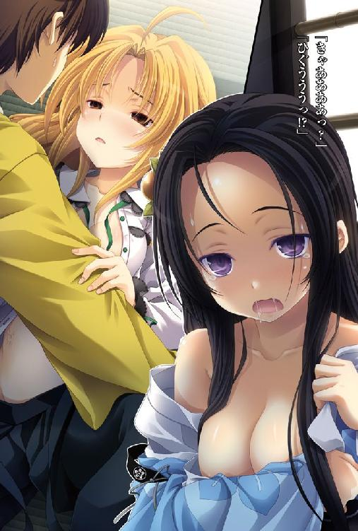
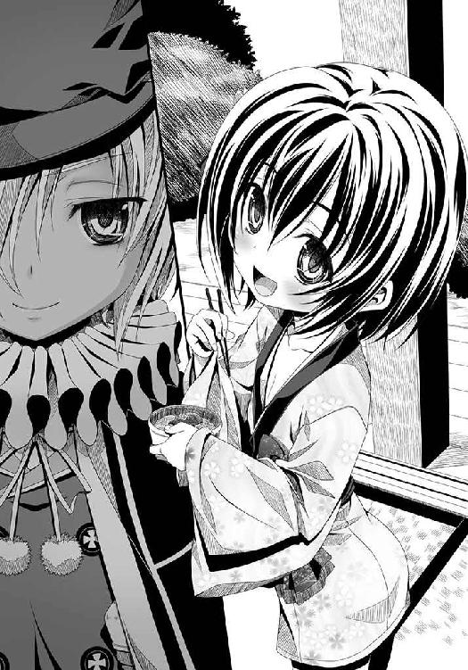

| 織田信奈の野望08 | |
| 春日みかげ | |
| SBクリエイティブ株式会社 (2012) | |


織田信奈の野望８
春日みかげ

本書に掲載されているコンテンツの著作権等の知的財産権およびその他すべての権利は、ソフトバンク クリエイティブ株式会社または正当な権利を有する第三者に帰属します。
本書の内容を権利者の許諾なく複製・複写・翻案・放送・出版・データ配信（送信可能化を含む）などすることはできません。
カバー・口絵 本文イラスト
みやま零

中国地方の覇者・毛利家の本国。
安芸の国（現在の広島）。
瀬戸内の海上に浮かぶ厳島神社。
潮がひけば砂浜の上を歩いて大鳥居まで行けるが、満潮になれば砂浜は水没し、社殿と廻廊と大鳥居が海に浮かびあがる。
その厳島神社の能舞台で、この日、能が演じられていた。
この能を所望した人物は、毛利家の三代目当主・幼い毛利輝元ではない。
輝元はこの日、風邪をひいてお休みである。
では、誰が所望したのかというと──。
「うむ。なかなかによき能じゃ。その方どもの将軍家への忠誠心、しかと見定めたぞ！」
仰々しいいでたちのひときわ小柄なちびっ子が、「天晴れじゃ」と扇を広げてにぎにぎしい歓声をあげた。
この、今川義元がそのまま縮んだかのようないかにも高慢そうな幼い姫武将こそが。
「わらわがほんものの元祖本家将軍、足利義昭である！ ほ、ほ、ほ！」
足利義昭。
明に亡命して剣術修業の道に入った兄の足利義輝から将軍職を譲り受け、足利幕府復興のために日ノ本に戻ってきた幼女将軍だった。
「わらわは、剣法バカの兄上とは一味違うのじゃ。代々の足利将軍にならい、幕府を復興させるために陰謀の限りを尽くして大名どもを右往左往させてやるのじゃ。ほーっほっほっほ!!」
趣味は。
「少し待て。偽将軍の今川義元に叱責の手紙を書いてやるのじゃ。ふふふ、ほんものの将軍からの手紙を受け取って青ざめるがよいのじゃ。『織田信奈という女はまことに性格の悪い天魔外道なのじゃ、あいつと仲良くしている限りお前もわらわの敵なのじゃ。ばーかばーか』......かきかき」
ひたすらに手紙を書くことだった。
手紙の中身は、だいたい、信奈の悪口、自慢話、豪快な恩賞の口約束。この三つのネタで占められている。
「ふう。織田信奈の悪口をたくさん書いたらすっきりしたのじゃ。それで毛利軍はいつ上洛するのじゃ？」
「はっ。毛利軍はなにぶん大所帯ゆえ、まずは長期戦にそなえて陸路海路よりの補給線を準備いたします。しばしご猶予を。あと一カ月は必要かと」
「ぷんぷん。それでは遅いぞ！」
「先に、死んでもかまわん鉄砲玉を最前線に派遣するじゃけぇ」
「姉者。鉄砲玉ではない。先鋒、だ」
「そうかそうか。鉄砲玉がおるのじゃな！ よきにはからえ！」
義昭の左右にはべるは、幼い毛利家三代目・輝元を補佐する「毛利両川」。
小豪族から身を起こし一代で中国地方の覇者となった初代・元就の双子の娘。
吉川元春と、小早川隆景。
毛利家を取り仕切っているこの二人が、外様武将の宇喜多直家を備前から呼びつけ、新たな命令を下そうとしていたのだ。
吉川元春と小早川隆景は双子で、ほとんどたがわぬ、しかも美しい容姿の持ち主。
ただし性格はまったく異なり、妹の小早川隆景は能面のような無表情を常とした冷静沈着な知将、「明智の将」と称されている。姉の吉川元春は短気で勇猛果敢、「剛勇の武将」とおそれられている。
この場でも隆景は弓を、そして元春は「姫切」の脇差を手放さない。
隆景は弓の名手。
元春は居合の達人なのだ。
ちなみに武闘派の元春は、頭に「日の丸鉢巻」を巻いている。鉢巻には「毛利上等」の書き文字が。
隆景と間違えられないように鉢巻で自己主張しているらしいが、世が世ならほとんど暴走族に見える。
その二人が、足利義昭の前で宇喜多直家に下そうとしている命令とは。
「見てのとおり、おそれおおくも将軍さまが毛利家を頼られてきた」
「偽将軍・今川義元を担ぐ織田家を京から追い払え、との仰せじゃけぇ」
「われら毛利家は初代の方針を守り、天下を望まず、と思い定めてきたが」
「なんちゅうても将軍さまのご命令じゃけぇ」
「これは断れぬ。かつ、座していても天下布武をかかげる織田信奈の侵入を待つことになる。ならばいっそ毛利全軍をもって畿内へと攻めのぼり、京に将軍さまをお連れ申しあげると決めた」
「おう。織田信奈をボッコボコにしごうしたる！」
「織田家との最初の衝突は、摂津・山城への入り口にあたる播磨となろう」
「そこで宇喜多。播磨の西隣、備前・美作をシマにしとるおどれが先鋒じゃけ！」
ひぃ、吉川はこわいのじゃ、と義昭が涙目になって小早川隆景にしがみついてきた。
「こほん......姉者。将軍さまの御前ですよ。もう少し言葉遣いを丁寧に」
「うう......すまんの、隆景」
元春が申し訳なさそうに妹に頭を下げた。
「奸悪無限の武将、宇喜多直家。次々ともののふたちを卑劣な手段で謀殺してきたお前を、われら姉妹はまだ完全には信頼できぬ」
「信頼を得たくば、織田家をしごぅせえ」
「織田軍との戦いで先鋒をつとめよ。われら毛利本軍が到着する前に播磨攻略を進め、上洛への道を整えておくのだ」
「それとのう」
「あとひとつ。われら毛利家が滅ぼした出雲・尼子家の残党を率いる、山中鹿之助」
「あやつを必ず捕らえよ」
「山中鹿之助はひとたびわれらに降参しておきながら城を脱出し、懲りずに尼子家の残党を率いて暴れている」
「毛利家は律儀を大事としている。ゆえに一度は許すが、二度は許さん」
「死なせるには惜しいもののふだが、あれは命ある限り毛利家には絶対に降伏せず、出家もしない。何度でも立ちあがってきて、われらに刃向かってくるであろう。かくなる上は潔く死なせてやるのが慈悲というもの」
「......隆景の言うとおりじゃけぇ。山中鹿之助をしごうしたれ」
吉川の言葉はよくわからぬのじゃ、と義昭が頰をふくらませた。
「こほん。姉者。安芸言葉はしばらく慎みなさるよう」
「うう......わかった、隆景」
妹にまたまたたしなめられた元春は頰を赤らめつつ、平伏している宇喜多直家の鼻先に目にも止まらぬ速度で姫切の脇差を抜き放った。
宇喜多直家は、身じろぎもしない。
はらり。
床の上に、真っ二つに斬られた蝶の羽根が舞い落ちた。
すでに元春は、姫切を鞘へとおさめている。
「宇喜多直家。裏切れば、貴様もこうなる」
「この戦で手柄を立てれば、お前を毛利家の家臣として認め、備前・美作五十万石は宇喜多家が続く限り子々孫々まで安堵しよう。さらなる領地も与えよう。わが毛利家は律儀が大事、約束は必ず守る」
「人質はとらぬ。貴様を信ずることにした。ただし！」
「われらが播磨入りするまでに播磨の城をいくつかは落とせ。そして、懲りずに参戦してくるであろう山中鹿之助を必ず捕らえよ。さもなくば、備前・美作五十万石を召しあげる」
「隆景、領地召しあげなど生ぬるい。切腹が順当じゃけぇ」
「いや姉者。切腹はならぬ。そのようなことを申し渡せばこの男はこの足で織田家に駆けこむ」
「......む。そうか......」
「わかったな宇喜多直家。われらの信頼を失えば、お前はもはやこの中国に居場所がなくなるぞ」
「ただちに播磨へ攻め込め」
「いずれ大毛利が大軍を動員して合流する。心置きなく戦うがよい」
御意、と宇喜多直家が唇の端をつりあげながら顔をあげた。
宇喜多直家。
この男は敵味方の区別なく周囲の豪族国人を次々と暗殺し、流浪の身から備前・美作五十万石を切り取って大大名へと成りあがっていた。
そんな直家がかつての敵であった毛利家についたのは、古い主家を見限ったためだ。
毛利家はいまや山陰山陽十カ国を制覇していた。しかも一代で毛利家を中国地方の覇者にのしあげた初代・元就なきあとも毛利家の勢いは衰えず、元就の知謀と武勇をそれぞれ受け継いだ双子の姉妹「毛利両川」が盤石の支配体制を築きつつあった。
これからも中国地方で割拠していくためには毛利家に属しておくに限る、と直家は踏んだのだ。
「任せておけ。オレは『姫武将殺し』だぜ」
直家は三十代半ば、あるいは四十にもならんとする年齢だが、美男である。
若い頃は少女のような艶やかな美しさを誇ると言われていたが、今では苦み走った渋い男の顔と絞り込まれた肉体を持つ戦国大名であった。
しかし常に、どこか下卑たにやにや笑いを浮かべている。
吉川元春の居合術で脅された今も、その笑みを絶やすことはない。
そしてその腰には、刀ではなく──革でこしらえたホルダーに入れた短筒をぶらさげている。
南蛮渡りの、最新鋭の小型銃だ。種子島よりもはるかにサイズが小さく、こうして刀のように腰にたずさえて持ち歩くことができる。
隆景と元春、双子の姉妹はその短筒をいぶかしげににらんでいる。
もののふの道を尊ぶ毛利家は、最近流行の南蛮文化やキリシタンとは肌が合わない。
戦で使う種子島こそ買い求めているが、暗殺用の短筒など外道の使うものとしか思えなかった。
めずらしい道具じゃのう、と義昭は小早川隆景の背中に貼りついたまま直家の腰をじろじろとながめている。
「お前はその短筒で今までどれほどのもののふを暗殺したのだ、宇喜多直家」
「卑劣じゃけ......いや、卑劣だな」
「さてね。いちいち数えちゃいないんでね」
「言っておくが、織田信奈は暗殺できるような相手ではないぞ」
「そのとおり」
「承知しているさ。あの杉谷善住坊に撃たれていながら、生きのびたやつだ」
「『姫武将殺し』の異名を取るお前のこと、勝算はあるのだろうが」
「よもや領地召しあげがこわくて織田家に寝返るつもりではあるまいな」
「まさか。オレがその気なら、あんたら姉妹を今この場で殺してるぜ」
短気な元春が思わず腰の姫切に再び手を伸ばすが、隆景が視線で姉を制止した。
「その言葉、毛利家に忠誠を誓うと受け取っていいのだな」
「ああ。オレは毛利家が誇る双子の美人姉妹をまとめて自分のものにする日を夢見てるのさ。『姫武将殺し』という通り名は、そういう意味だ」
「い、い、言わせておけば、無礼な！ 殺す！」
「待て姉者。毒も使いようだ。言わせておけばいい」
「しかし隆景」
「ただし宇喜多直家。裏切ればその命、必ずもらいうける。毛利全軍で踏みつぶすぞ」
「そいつは残念だな。オレに口説かれる気はないのか？」
「われら姉妹、幼き三代目が立派に成長するまでは男などに興味を持たぬ」
「おう。男など、武芸の邪魔になる」
「三代目が成長すれば？」
「ふはっ。たとえこの世に男がお前一人だけになったとしても、お前だけはありえぬ」
「ふ、ふざけるな！ けがらわしいっ！」
隆景は笑い飛ばしたが、元春は顔を真っ赤にしてまたしても姫切を抜こうと手を伸ばし、隆景に止められた。
「ならば成長した三代目を直接口説くのもアリだな。今はガキだが、いずれは美人に......あの子はオレに懐いているしな」
「な、なんだと」
「将軍さまをオレの女にすることだってできるぜ。だがあと十年は待たされるか。オレももう若くはない、さすがにそんなには待っていられねえ」
「無礼な！」
元春がいよいよ激昂しはじめたので、直家は「それじゃまあ、行ってくるか。播磨攻略と山中鹿之助か。五十万石を守るためとはいえ、けっこうきつい仕事だぜ」と薄笑いを浮かべながら立ちあがり、海の上に浮かぶ廻廊を渡って陸へと戻っていった。
「だいじょうぶなのかの？ 宇喜多直家は奸悪無限、資性奸悪、虚偽第一、表裏虚妄、背徳無限、畜生にも等しき悪党、と評判最悪じゃぞ。あんな人間がこの国にいることが不思議じゃ。人質をとったほうがいいのではないかの？」
足利義昭が遠ざかっていく宇喜多直家の背中を不安そうににらみつけているが、毛利両川は動じない。
「もしもあの者が毛利家を裏切れば、毛利全軍で背後から襲いかかって踏みつぶすまでです。座して静観していても、領地没収。あの者のこれまでの悪行は誰もが知るところ、毛利家の名に傷はつきませぬ。尻に火がついた今、あやつは必死になって持てる力を発揮するでしょう」
「小早川は知恵が回るのう。明智の将と呼ばれるだけのことはあるの」
「われらは宇喜多直家を用いて織田軍の戦いぶりを分析しつつ、好機の到来を待ちます。将軍さまの手紙の効果は絶大。必ずやその時は訪れましょう」
「うむ！」
「将軍さま。そもそも、あやつから人質などとっても無駄じゃけぇ。人質の命など屁とも思っておらん」
「それもそうじゃの吉川！ ほーっほっほっほ、ともあれ毛利家の忠誠は決して忘れぬぞよ！ わらわが上洛したあかつきには、毛利輝元を西国探題とし、中国、四国、おまけに九州の仕置きを任せるのじゃ！ いっそう励むがよいぞ！」
「「はっ」」
待っておれ織田信奈。そちの天下ももはやこれまでじゃ、と義昭はくるくる舞いながら高笑いを続けるのだった。
血の気が多い吉川元春は、初代・元就の「天下を望むな」という弱気な遺言がずっと不満だった。「気取った京の都をわれらが誇る郷土料理・お好み焼きで埋め尽くしてやる。お好み焼きを広島焼きなどと抜かすやつらは許さん！」とすっかりその気だ。
ただ一人、慎重な小早川隆景だけが（この国の常識が通じぬ織田信奈と、未来人の相良良晴。何をしてくるか読めぬ敵だ。しかもあの天才軍師、黒田官兵衛までが織田家に仕官するとは）と気をひきしめていた。
京。
浅井朝倉家を滅ぼした直後の論功行賞が終わってからしばらくのち。
信奈が宿にしている本能寺で、茶人の千利休が信奈に一人のまだ幼い姫武将を引き合わせていた。
利休は南蛮趣味あふれる漆黒の衣装──当世流行りの「ごすろり」の精神を体現した魔道師風の姿。キリシタンのミサを採り入れた独自の茶道を追求している少女茶人だ。
そして、その利休が信奈に「ぜひ仕官のお許しを」とめずらしく勧めてきた姫武将とは。
「ムイント・プラゼール。わが洗礼名はドン・シメオン。播磨は姫路城の城主、もとの名は黒田官兵衛だ」
黒田官兵衛。
南蛮風の黒い陣羽織に身を包み、頭には黒い南蛮風の帽子をかぶった幼い姫武将だ。
年齢こそ竹中半兵衛より一つか二つ下という幼さだが、その瞳は自信にあふれ、野心に満ちていた。
自分こそが日ノ本一の智者だ、という揺るぎない自信を官兵衛は抱いている。
ものごころがついた頃から、どうも自分の頭脳の作りは他の者と違うらしい、という自覚があった。
頭の回転が速すぎて周囲になじめず、後進的な播磨国内では完全に浮きあがっていた。
しかし幸いにも父親の黒田宗円が官兵衛の最大の理解者だった。宗円は官兵衛の才能をはやばやと見抜き、急いで出家して幼い官兵衛に姫路城主の座を譲り、さらに諸国遊学まで許した。
「シメオンが日焼けしているのは、九州で南蛮の科学『えれくとりかす』を学んでいたからだ！ 色黒じゃないぞ！」
官兵衛は言葉がはきはきしていて、才気にあふれ、頭の回転がとてつもなく速い。
同じ南蛮趣味の持ち主でも、常に無言の利休とは対照的だった。
「デアルカ。播磨の黒田官兵衛といえば、蝮とサルが竹中半兵衛と並ぶ天下の二大軍師の一人だと評していたわ。キリシタンになっていたのね」
信奈はいちどに領国を増やして人材不足に陥っていたから、天下に名高い黒田官兵衛を利休から紹介されて上機嫌になっていた。
なにしろ、北近江に相良良晴を、越前に柴田勝家と前田犬千代を、若狭に丹羽長秀を、丹波攻略に明智光秀をいっせいに派遣することになってしまい、信奈自身の周辺では人材が枯渇しつつある。摂津などはこれといった武将をあてることができず、小さな豪族国人たちを乱立させたままだ。
義弟として信奈の片腕になるはずだった浅井長政が「死亡」したのが、いかにも痛い。
「南蛮科学を学んだ軍師。新しいわね」
「シム！」
「しむ？」
「ポルトガル語で、はい、という意味だよ。シメオンは南蛮語が得意だ。ポルトガル語、イスパニア語、イタリア語、イギリス語、ラテン語、すべて使える。天才だから」
「へえ。まだ幼いのに、やるわね！ なぜわたしのもとへ来たの？」
「このシメオンはいずれ大船に乗って南蛮諸国を訪れ、かの地で古今東西の知識を究めてみたいんだ。この野望を実現するためには、播磨の一城主という地位に甘んじていてはダメだ。南蛮の文化に興味を持つ織田信奈の軍師となって天下布武の事業を補佐するのがいちばんの早道さ」
つまり官兵衛が織田家への仕官を志したのは、信奈に天下布武の事業を完成させたあかつきには南蛮行きの大船を造らせ、南蛮の国々に自ら乗りこむという野望のためだった。
「デアルカ。南蛮語を話せるのなら、それだけでもわたしにとっては絶対にほしい人材だわ！」
信奈と官兵衛は、一言で言えば似ていた。二人とも好奇心の塊で、新奇な文化に対する咀嚼力と理解力は日本人離れしていて、そして海の向こうの世界に激しい憧れを抱いている。
お互いに初対面という気がしなかった。
だが、官兵衛は未来人・相良良晴という「いれぎゅらぁ」な存在が、信奈の天下布武にとって実は最大の障害になるのではないか、と危惧している。
相良良晴と織田信奈の関係があやしいという噂はどんどん広まっているし、未来を知っている良晴が歴史を変えようとして妙な行動に出るたびにかえって信奈は苦境に追いこまれる。
（どう考えても今川義元は桶狭間で死ぬはずだった。相良良晴が助けたのだという。その結果、織田家が今川義元を、毛利家が足利義昭をそれぞれ将軍に担ぐという変則的な事態を招いた。相良良晴がいなければ織田家が本家本元の足利義昭を将軍として担いでいたはず。本人は織田家のためによかれと思って行動しているのだろうが、天下布武の大事業を相良良晴が邪魔している。これでは海外に雄飛したいこのシメオンが困る。世界に打って出る気概と才能をそなえた武将は、織田信奈しかいない）
織田家の外からここまで読み切っている官兵衛の知能は尋常ではない。
が、さらに官兵衛は解決策まで考えてきたのだ。
（このシメオンが、相良良晴を未来に強制送還してやる。今すぐには無理だが、「道具」を揃えれば可能だ。それで織田信奈の運命は狂わずにすむ）
官兵衛は悪意というものを持ったことがない少女だが、信奈と良晴にとって、これはとんでもないお節介である。
しかし、その官兵衛も信奈にはこの件を打ち明けられない。
官兵衛は思ったことをすぐ口にしてしまう性格だが、あらかじめ宣教師のフロイスから「織田家に仕官するのでしたら、ヨシハルさんを未来に帰すという話を誰にも話してはいけません。できれば、そのようなお考えはお捨てください」と教えられていたのだ。
この計画を捨てる気はないが、どうやら話すと仕官できなくなるらしい。
「ところで、播磨」
「播磨？」
「あんたのあだ名よ」
「......あだ名」
官兵衛は少し不満だった。播磨と官兵衛、この二つの言葉は官兵衛にとっては黒歴史単語だ。閉鎖的で頑固な故郷の豪族国人たちの顔を思いだすと、気が滅入ってくる。
もちろん信奈はそんなことはお構いなしに「播磨、播磨」と連呼してくる。
官兵衛は、（聞くところによると、親しいお友達はお互いをあだ名で呼びあうらしい）と最大限好意的に解釈して喜ぶことにした。
官兵衛は基本的に、すべてを好意的に解釈するくせがある。
現代で言えば、ポジティブ・シンキングをきわめている、といえる。
「播磨。あんたは自分で天下を盗るつもりはないの？」
「ふむ。盗ってやってもかまわないが、シメオンは早く南蛮に渡って世界一の智者になりたい。この国の女王になってしまうと南蛮科学の研究に専念できなくなる。女王の仕事は織田信奈が適任と判断した」
「ふうん。あんたって変わってるわね。半兵衛といい、軍師ってちょっと他の武士とは毛色が違うわね」
「人にはそれぞれ役割というものがある」
「毛利家に足利義昭が押しかけてきて織田家に宣戦布告してきた今、播磨がわたしに仕えてくれれば大助かりだわ。毛利家との戦いは、中国地方から京への通り道にあたる播磨の国で行われることになるもの」
「播磨は三十六の豪族国人が乱立し、統一大名がいない。そして織田家も毛利家もまだ播磨には手をつけていない。播磨はいわば草刈り場だ。この戦は播磨を制したほうが勝つね」
「そうね。毛利に播磨を奪われるとあやういわ」
「シム。わが姫路城を織田軍の拠点に使うといい」
「いいの？ 気前いいのね」
「地上の権力や栄光には今のところ興味がないからね。南蛮遊学という野望のため、シメオンは織田信奈に味方するよ！」
「......」
利休が「この者は自分と一緒に堺で南蛮の学問を学んでいた時期があり、その折に意気投合してわが茶道の弟子となった」と信奈に伝えた。
無言のまま自分の言葉を相手に伝えるという特技を利休は持っている。
「へえ。播磨は利休の弟子なの。利休の弟子って、ずいぶんとキリシタンが多いわね」
「......」
わが茶道はキリシタン文化とは切っても切り離せない関係、と利休が答えた。
「なつかしいな。堺では師匠は南蛮の錬金術を研究し、このシメオンは南蛮占術を習得した。あの頃から、二人とも南蛮風の衣装を好むようになった」
「......」
自分は錬金術と茶道の融合という独自の道を見つけ、シメオンは南蛮占術の目新しさに感激してそのままキリシタンの多い九州へと走り『えれくとりかす』を学んできた、と利休が信奈に伝えた。
「この国にも占いはあるけど。古式ゆかしい軍師はすぐに筮竹を出してきて戦日の吉凶を占うわよ。わたしはぜんぜん信用していないわ」
「ふふ。東洋の占術と南蛮の占術は大きく異なるのさ。筮竹ではなく、タロットカードを使う」
「タロットカード？」
「南蛮のかるただよ。論より証拠。織田信奈、きみの運命を占ってやろう。何を知りたい？ 恋の行く末か、それとも天下布武の事業かな」
「そうね。占いなんてお遊びだから、恋かしら」
「では、この山の中からカードを一枚ひいてみて」
官兵衛が畳の上に置いたものは、南蛮渡りのタロットカードの山だった。
信奈は半信半疑で、その見慣れぬタロットカードの山の真ん中あたりから、一枚を選んでひいた。
「ヘンな絵柄ね。建物が傾いて燃えているわ。なに、これ？」
信奈が白い指に挟んだカードは、業火に包まれて今まさに倒壊しようとしている建物が描かれたカードだった。
「ふうん。よくないカードが出たな。それは『塔』のカードだよ」
「『塔』？」
「災害、崩壊、悲劇的結末を暗示するカードだよ。残念ながら織田信奈の恋は大失恋に終わるね、ふふふ」
「......わ、わたしは占いなんて信じないから！ いくら南蛮文化だからって占いは占いでしょう？ これって筮竹とどう違うの。どういう理屈で当たるわけ？」
「これは占いというよりは、人間の心の内側を覗く検査さ。タロットカードをひく者は本人も意識しないうちに、自分の未来を暗示しているカードを選び取るんだよ」

「ほんとかしら？」
「次は天下布武の行方を占ってあげよう」
『塔』のカードを回収した官兵衛が再びそのカードを山に戻し、シャッフルして再び信奈に一枚選ばせた。
「こんどこそ、いいかるたをひくわよ！」
信奈はそのカードの絵を見て、「うそっ？」とカン高い声で悲鳴をあげていた。
「また『塔』だわ！ どうなってるの？ 縁起のいいかるたはないの？」
「タロットのカードは二十二種類もあるよ。『塔』はその中の一枚だけだよ」
「おかしいじゃない。どうして二度も続けて『塔』をひくわけ？」
「天下布武事業もまた悲劇的な失敗に終わる、とタロットは暗示している。しかも、失恋と天下布武事業の挫折とが同時に到来するようだね。妙だな。織田信奈ともあろう者がこれほど悪しき運命を背負っているはずはないのだが」
やはり、未来人・相良良晴が織田信奈の運命を狂わせつつあるのか、と官兵衛は思った。
ふん。占いはどうでもいいのよ、お遊びなんだから。わたしが興味あるのは『えれくとりかす』のほうよ、と信奈が頰をふくらませて強がった。
「庭園に鎮座しているあの鉄でできた大きな人形。あれは播磨が作った新型兵器なの？」
信奈が見上げた先では。
官兵衛が乗りつけてきた鉄の巨人が、どーん、と本能寺の庭園に屹立していた。
僧侶たちが「邪魔だな」「重くてとても動かせない」と困り果てている。
「あの『おーとまた』は『えれくとりかす』の原理を応用して、磁石の力で自動的に歩行する人型兵器だよ。腹部に兵士が乗って、船のように舵を切りながら動かすんだ。厚い鉄板で身体を覆っているから、種子島の弾もはじきかえす。馬のようにまぐさもいらない」
「すごいわね！ あれが量産できれば、武田騎馬隊だって蹴散らせるわ！」
「もっとも、あれは試作品。残念ながら完成にはほど遠いよ。『おーとまた』はまだまだ南蛮でも新しい学問で、軍事に応用するのは難しいよ」
「ええ？ そうなの？ いくら開発予算を渡したら完成するの？」
「作ってみてわかったが、二足歩行は予想以上に困難なんだ。このシメオンが知恵を振り絞っても、十年はかかるかもしれないね」
「足の代わりに、車輪をつけて走らせれば？」
「ふむ、その手があったか。だがこの国の地形は平地が狭く山が多い。車輪ならば安定するが、合戦で使用するのは無理だね」
「やはり『おーとまた』を軍事に用いるためには二足歩行が必須かしら」
「そうだね。でも車輪を用いるというのは妙案だ、何かに使えるかもしれない」
「播磨、あんたってほんものの天才ね！ サルがこの『おーとまた』を見たらびっくりするわよ！ あいつ、未来人のくせに学がないのよ。ねねよりも算術が苦手なんだから。ぷっ」
官兵衛は思わず「その、相良良晴と織田信奈の仲があやしいという悪い噂を払拭しなければ！」と言いかけた。
だが、言えない。我慢した。
相良良晴のことになると、信奈はまったく冷静になれないとフロイスに教わったからだ。
恋というものをまだしたことがない官兵衛には理解できないが、どうやら恋心というものはそういうものらしい。
だが、官兵衛はひとつ気づいたことがあった。
「塔」のカードが恋愛と事業の両方に出たということは、織田信奈の天下布武事業は失恋と同時に同じ原因で頓挫するということだ。
タロットは科学とは言いがたいが、普段は隠れている本人の無意識を表出させる手段である。一種の心理学検査だ。人は往々にして、心の底では自分の将来の運命をある程度予感している。未来とは、自らの行動の結果だからだ。
官兵衛が見たところ、織田信奈は──。
（相良良晴との道ならぬ恋の行方にも、天下布武事業の行く末にも、破滅を予感している。聡明な織田信奈は、未来人・相良良晴との道ならぬ恋が自分の運命を狂わせてすべてを破滅に導くかもしれない、と内心ではわかっているんだ）
織田信奈が道半ばで倒れれば、大船に乗って南蛮諸国を遊学するという自分の野望も遠ざかる。
やはり相良良晴は未来へ帰さなければならない、と官兵衛はひそかに決意を固めた。
だがそのためには、揃えなければならない「道具」がある。
（「道具」をすべて揃えるためには、毛利家と戦って中国地方へと織田家の勢力を伸ばさなくちゃ。毛利家の勢力範囲内に、必要な道具がひとつあるはずだ。シメオンは早くその道具を発見しなければならない）
だから官兵衛は、信奈の軍師になって毛利軍と戦うつもりで来たのだが、信奈の次の言葉は、知恵者官兵衛といえどもまったく予想できなかった。
「播磨。あんたは今日からサルの軍師として働きなさい！」
さすがの官兵衛も、思わず茶器を手からすべらせかけた。
どうしてそういう話になるのか、まったくわからない。
「このシメオンが、相良良晴ごときの軍師に？ なぜ？」
「あいつに城持ち大名の仕事なんてつとまるわけないでしょ。あんたが実務を補佐してあげないとサルは北近江の城に美少女を集めて酒池肉林のダメ生活をはじめるわよ！」
「しかし、相良良晴にはもう竹中半兵衛という世に隠れなき名軍師が」
「半兵衛は戦と陰陽道の仕事に熱心で、まつりごとには興味ないの。いいわね、今すぐサルのもとへ向かいなさい。はいこれ！」
「この刀は？」
「わたしの愛刀、圧切長谷部よ。播磨にあげるわ。サルが浮気したらこれで斬っちゃって！ あいつ、目を離したらすぐに誰かれかまわず女の子といちゃいちゃするのよ！」
それまで冷静だった信奈が突然顔を真っ赤にして、きぃきぃとカン高い声で怒鳴りはじめた。
「こ、このことは、ひ、秘密なんだけど、あ、あ、あいつは、わ、わ、わたしの唇を奪ったのよ！ そ、それなのに、い、いろんな女の子といちゃいちゃして、ほ、ほんとうに、し、信じられないやつなんだから」
その血走った目は、嫉妬と怒りと独占欲と殺意に満ちている。
「では、これらの噂は事実？」
官兵衛は堺や京で買い集めてきた最新の瓦版を数枚取りだして、信奈に見せた。
『週刊堺の商い』には、「衝撃！ あの織田信奈が自分の飼いザルと歪んだ愛欲の日々？」。
『月刊けんにょだにょ』には、「鬼畜！ 天下一の女好き・相良良晴が主君の織田信奈を手込めにして毎晩調教しているにょ！」。
『河原町日日瓦版』には、「未来人のサルに恋して身分制度を壊す野望に燃える織田信奈、偽将軍今川義元を担ぎあげるという暴挙の次はやまと御所を焼き討ちか？」。
根も葉もないヨタ話ばかりではあるが、信奈が良晴とあやしいらしいという噂はすでに民衆が広く注目するところになっていた。
今で言えば、毎日ワイドショーのネタにされているというところ。
「何よこれぇ!? ど、ど、どいつもこいつも好き勝手なことを書き立てて......瓦版屋どもは全員引っ捕らえて島流しよ！」
「......」
利休が信奈の茶器に赤葡萄酒を注ぎながら「それでは噂を事実と認めるのも同じこと」と無言で制止した。
「サルの悪口はいくら書いてもいいわよ。でも、わたしがやまと御所を焼き討ちするだなんて、これだけは許せないわよ！ 何を書いても許されると思ったら大間違いなんだから！」
「......」
利休は「相良良晴との噂が織田家への誹謗中傷に利用されている。裏で反織田家勢力が糸をひいているのであって瓦版屋には罪はない。ここは冷静に」と信奈を諭すが、信奈は「あああああもう許せないっ！ これもぜんぶ、サルがいやらしい女好きだからよ！ あいつが見境がないエロザルだから、わたしの評判まで傷つけてるのよ！」と咆哮をやめない。
官兵衛は（これが恋か。恋はほんとうに、人を盲目にするのだな）と驚いていた。
不吉な「塔」のカードの暗示は、ほんものかもしれない。
「サルはね、相手が武田信玄でも明智光秀でもほんとうにお構いなしなのっ！ わたしの宿敵武田信玄といちゃつくとかありえないでしょっ？ そろそろ今川義元に手を出しても不思議じゃないわ！ あいつがわたしを裏切ったらその場で斬るのよ！ いいわね！ それが播磨、あんたの最大の任務よ！」
「このシメオンには毛利戦という大仕事が」
「先手必勝、毛利戦の先鋒は領国が敵国に接していないサルに任せるわ！ 毛利が開戦準備を終える前にサルのお尻を叩いて、急いで播磨を平定してちょうだい！」
「......シム」
信奈は「これでサルの浮気を封じられるわ」と大喜び。「お願いね！ わたしも山積みになっている大量の仕事が片付いたら播磨に乗りこむから！」と言い残すと、足早に去っていった。
今、官兵衛は生まれてはじめて、（もしかして間違ったかな？）と自分の前途にただならぬ不安を感じていた。
だがしかし、自分で自分の運命を占うことは誰にもできないのだ。
自らを占えば、どうしても主観が入る。すると聡明な官兵衛の知謀も、濁ってしまう。
ともあれ、未来から来て信奈の運命を一人でひっかきまわしている（としか官兵衛には思えない）相良良晴。
官兵衛は毛利軍と戦いながら、同時にこの「いれぎゅらぁ」な男を未来へ帰す準備をはじめなければならない。
でもこれほど才能と情熱にあふれた織田信奈がこんなにも執着する未来人の相良良晴。いったいどんな男なんだろう、という新しい好奇心を官兵衛は抱いていた。
それに、考えてみれば良晴の軍師という立場で毛利軍と戦えるというこの新たな境遇は、願ったりかなったりである。
なぜなら、良晴を未来に強制送還して歴史を狂わせないという官兵衛の計画を実行する絶好の機会が来たからだ。
官兵衛はさまざまな条件を比較検討した結果、織田信奈が天下を盗ると信じて疑わない。
もちろん途方もなく困難な道ではあるが、天才である自分が軍師をつとめれば間違いなく盗れる。
しかし、相良良晴という本来はこの世界にいないはずの未来人がよけいなことをするために、織田信奈の運命が狂いつつある、そう危惧している。
（「塔」のカードを二度も続けてひいたのも、相良良晴のせいだ。間違いない）
信奈が良晴の未来への強制送還を望んでいないことは、恋を知らない幼い官兵衛にもさすがにわかった。
ならば良晴のそばにいて、信奈に知らせずに独断で計画を実行したほうがいい。
しかも良晴を未来へ帰すために必要な道具のうちのひとつが、偶然にも毛利家の勢力圏内に埋もれている。これを発見して手に入れるためには、毛利家を織田家が併呑するかあるいは服従させる必要がある。
残りの道具は、すでに信奈の勢力圏にある。捜索すべきはあとひとつだ。
相良軍を率いて毛利家を破れば、相良良晴と、そして彼の強制送還に必要な道具、その両方を同時に揃えることができる。
信奈にはあとでゆっくりと説明すればいい。
いける、と官兵衛は確信した。
「ふふ。これで織田信奈の天下が来る。このシメオンも晴れて海の彼方の世界へと飛びだせるよ」
「......」
シメオンは覇気があふれすぎている、何か途方もないことを企んでいるのでは？ と利休が声を出さずに言った。
官兵衛は（師匠にだけは打ち明けようかな）と思ったが、あと少し先にすることにした。
「とうとう坊主も一国一城の主か！ これからは、殿と呼ばなきゃならねえな。わはははは！」
「さすがは俺たちの親分が見込んだ相良良晴だ、いや、われらが殿だ！」
「前代未聞の出世だぜ！」
「だが親分に手を出してみな。たとえ相手が殿であろうが、俺たち川並衆は下克上するぜ！」
「親分は！」
「永遠に！」
「穢れない！」
「お前ら、いまや全員織田家に侍として取り立てられたというのにマンネリだな......」
眠い。
相良良晴は、大あくびをした。
京から眠らずに北近江まで行軍して、そのまま夜通し宴会が続いているのだ。
その点、宴会慣れしている川並衆の野郎どもは、どこまでもタフだった。
本能寺での論功行賞が終わった後、急いで京を出立して北近江に向かった良晴は、琵琶湖の畔にあった小さな城を「長浜城」と命名して本丸に入り、今浜と呼ばれていた町も長浜と改名した。
なぜ今浜を長浜にあらためたのかといえば、戦国ゲーム『織田信長公の野望』のイベントで浅井家滅亡後に北近江の大名となった木下藤吉郎が今浜を長浜と改名したからだ。
光秀の坂本城、信奈が築城している安土城と同じく、長浜城も小規模ながら水城だった。
石垣が直接琵琶湖の水面に浸かっていて、水門から船が発着できる。
「われら、金ヶ崎で殿の家臣となった野郎どもも」
「これほどうれしい日はないでごわす」
「金ヶ崎で散っていった仲間たちも、草葉の陰で喜んでるみゃあ」
相良軍団は数こそ少ないが、あの地獄のような金ヶ崎をともに戦い抜いた男たちの結束は固い。
良晴は「ついにここまで来たんだな」とうなずいた。
「そうだな。藤吉郎のおっさんと金ヶ崎の仲間たちの墓をどーんと建てて供養すっか！」
おっさんの夢、一国一城の主となってモテモテハーレム！
いまや、俺はその夢の実現に王手をかけている！
いや、ほんとうに作ったら信奈に殺されるから、作れないけど！
「ついに大名に出世されましたな、兄さま！ ねねもうれしいですぞ！ よくぞ、よくぞ」
良晴の膝の上に座っているねねは、すっかり涙目になって北近江名物の焼鯖そうめんをすすっている。
この焼鯖そうめん、そうめんの上に焼いた鯖を盛りつけて食べるという北近江の郷土料理で、ぶっちゃければ鯖の味しかしないのだがこれはこれでなかなか味わい深い。
しかし、焼鯖そうめんをご飯のおかずとしていただく風習はまるで大阪の「焼きそば定食」のようだけどどうなんだろう、そうめんいらなくね？ と良晴は疑問に思っている。
「兄さまも焼鯖そうめんを一口どうぞですぞ！」
「俺がここまで来られたのも、ねねのおかげだぜ。ありがとうな」
「よくぞ女の子に走ってお仕事を放り投げることなく、今まで我慢してこられましたな！ 兄さまほどの女の子好きのエロザルが......奇蹟ですぞ！ これは、ねねのお手柄ですな！」
「その感動の仕方はどうかと思うぞっ!?」
「よく姫さまの言いつけを守られましたな、兄さま。本日からは、我慢することなく城下町からかわいい女の子をたくさん集め、早くお世継ぎを作られますよう！」
「ぶはっ!? な、な、何を言いだすんだよっ？」
「兄さまはいまや大名ですぞ。お世継ぎを作るのはたいせつなお仕事ですぞ！」
「いや、俺はだな......俺はたしかに天下一の女の子好きだけど、モテモテハーレムを作るつもりはないんだぜ？」
良晴はねねを抱っこしたまま震えあがった。
そんなことをしたら信奈に叩き斬られる。最近のあいつは嫉妬心を隠さないし。
「さようですか。それほど言うのでしたら、このねねを妻といたしませ！」
「ぶはっ！ なんでそうなるんだよ？ お前は俺の妹だろっ？」
「尾張一の美少女であるねねの愛らしさに魂を奪われて、他の女の子には興味が持てないのですな。わかりますぞ兄さま！ 妹とはいえねねは兄さまと血がつながっておりませぬ、いつでもねねを妻にいたしませ！」
軍師の竹中半兵衛、そして家臣団がいっせいに良晴に白い目を向けてきた。
「救いがたいほどに露璃魂です、良晴さん。くすん、くすん」
「悶絶するほどうらやましいが、親分でなきゃ許そう」
「まだちんちくりんな自分の妹を毒牙にかけようとは、ド外道鬼畜だぜうちの殿は」
「誤解だっ！」
「「「この露璃魂野郎めえぇ、うらやましいいい！」」」
「どう言い訳しても露璃魂でござるよ相良氏」
五右衛門は今日もあいかわらず忍び装束に身を包み、天井からぶらさがっている。
「下りてこいよ五右衛門。いつまで忍びやってるんだよ？ いまやお前は相良家の筆頭家老格、押しも押されもせぬ戦国武将・蜂須賀五右衛門だぜ」
「拙者は生涯一忍びでござる。たとえ一日であっても修練をさぼってはちのびのうでがおとろえりゅでござりゅよ」
「ま、いいけどな」
「「「「親分が、かんだあああ！」」」」
「うるちゃいでござるよ！」
どうも大名になった気がしないな、と良晴は思った。
さすがは、ゆるさに定評がある相良軍団。うこぎ長屋時代とノリが変わっていない。
「犬千代が勝家の軍団に派遣されちまったのが、ちとさびしいな......ずっとお隣さんだったのになあ」
「やっぱり露璃魂でござるな」
「宴会は今日までだぜ、みんな。明日からはあれこれと仕事があるぞ。なにしろ北近江の国主が浅井家から相良家に代わったんだからな」
「ねねは何をすればよいのですか兄さま？」
「ああ。ねねは遊んでいればいいぜ」
「うるうるうる。このねねは役立たずだと仰るのですか、兄さまはっ？ う、う、ううええええん！」
「あー、泣くな泣くな！ わかったよ、ねねはその愛嬌と人なつっこさを生かして、新たな家臣を集めてくれ！ 人手がぜんぜん足りねえ！」
わかりましたぞ、とねねが薄い胸をとんと叩いた。
「幼女を集めるんじゃないぞ。槍働きが得意そうな屈強な野郎どもと、頭がよくて事務仕事をてきぱきと進めてくれそうなお姉さんたちを集めるんだぞ？」
「承知ですぞ、兄さま！ ねねに、お任せくだされ！」
「いいか。くれぐれもお前と同じ年頃の幼女を集めるなよ？ この宴会を見ればわかるように、幼女枠はもういっぱいだ。それに俺は、幼女には興味がない。戦に巻きこみたくもねえ」
ねね。
五右衛門。
もう幼女とは言えないお年頃だが、小柄で幼い半兵衛。
せっかく一国一城の主になったのに、これじゃハーレムどころか小学校だよ......幼女だらけの宴会場をため息まじりにながめながら、良晴はかたくかたくねねに念を押した。
「しかしほんとうにこれほど広大な領地をおさめられるのでちゅか、ちゃがらうじ」
「そこだよ。現実はマウスをクリックすれば石高がアップするような簡単なもんじゃねえし、兵糧を配れば民の忠誠度が満タンになるというわけでもない。どうすっかな？」
「くすんくすん。わたしも、まつりごとは苦手でして」
良晴たちが顔を見合わせていると。
庭園のほうから、元気にあふれた幼い女の子の声が飛んできた。
「ムイント・プラゼール。われこそは播磨姫路城主ドン・シメオン、またの名を黒田官兵衛。織田信奈の命により、本日から相良良晴の軍師に就任してやろう」
がちゃーん、がちゃーん！
黒田官兵衛が人造人間「おーとまた」に乗って、よたよたとふらつきながら城門をその重量で破壊し、大広間につながっている庭園へと突進してきたのだ。
顔見せのためだろうか、「おーとまた」の腹部操縦席を覆っていた装甲が外されてむきだしになっていたので、官兵衛の姿は良晴たちからもよく見えた。
まだ年端もいかない少女だ。
宴会の席は、あまりにも早すぎる黒船襲来に大騒ぎとなった。
またしても幼女かよ、とツッコんでいる場合ではない。
良晴はひとまず、もっとも重大なところにツッコんでいた。
「おいおい、今は戦国時代だぜ！ なんだよ、その時代錯誤なロボットは？」
「「「かわいい男の子が相良軍団に加わったぜえええ！ これはこれでアリだあ！」」」
「お前ら、ほかに見るところがあるだろうが！」
「失敬な。シメオンは女の子だ」
操縦席で舵を握っている官兵衛がむっと唇をとがらせる。
「「「かわいい男の子かと思いきや実はまだ乙女になりきれていない女の子、この意外性はいよいよアリだぜえええ！」」」
「ぶ、不気味なやつらだな。全員排除しておくか」
「「「わあああー、鉄の怪物が攻めてきた!!!」」」
官兵衛が「おーとまた」の足を前進させて、宴会場へ乱入しようとした。
良晴が、あわてて官兵衛の前に立ちはだかる。
「こら待て！ 黒田官兵衛、だっけ？ もっと穏健な登場方法はなかったのかよ？ 城門をぶっ壊しやがって！」
「ふふ。このシメオンの才能を示すには、『おーとまた』を見せるのがもっとも早かろう。相良良晴、これもわが野望のためだ。きみに仕えてやる」
「野望だって？ 天下盗りでも狙ってるのか？」
「そのようなものではない。きみに言っても無駄だから言わないがな」
じゃあどんな野望を抱いているんだ？ 良晴にはさっぱりわからない。
だが、ひとつだけはっきりしていることがある。
「こいつは信奈、十兵衛ちゃんの最強どや顔コンビに匹敵する自信過剰っぷりだぜ」
ここで良晴は気づいた。
（黒田官兵衛？）
そうか、半兵衛ちゃんとともに戦国時代を代表する天才軍師だ！ 藤吉郎のおっさんは半兵衛・官兵衛、二人の天才軍師をともに家臣にできたおかげでとんとん拍子に出世して、最後は天下人にまでのぼりつめたんだ！ そうだな。黒田官兵衛だったらロボットくらい発明してもおかしくない......って、おかしいに決まってるだろ！
「黒田官兵衛、俺がせっかく浸りきっている戦国時代気分を壊すな！ 足下がふらついてるじゃねーか、危ないから下りろ！」
「ふふ。下りてほしかったら、このシメオンを一番軍師にしろ」
「くすんくすん。相良軍団の軍師はこの半兵衛だったはずですが......もしかして、いぢめられるのでしょうか。とても悪い予感がします」
「きみが噂の竹中半兵衛か。このシメオンと尋常に勝負しろ。勝ったほうが相良軍団の一番軍師だ。シメオンはなにごとにつけ二番が嫌いなのさ」
半兵衛を凝視する官兵衛の視線が、すっ......と細められた。
いじめっ子オーラにあふれているな、と良晴は思った。
似た者同士である信奈のもとでは（われら二人が衝突したら日ノ本は崩壊するな）とあふれる才気と野心をそれなりに抑えていた官兵衛だが、どうせ未来に帰す予定の相良良晴ごときのもとでよい子にしているつもりはまったくない。ましてや、常になにかと比較されてきた竹中半兵衛の下風に立つことはよしとしないし、そもそも相良良晴を未来へ帰す仕事の妨げになりそうだ。
「くすん。くすん。はじめまして、官兵衛さん......わ、わ、わたしが、た、竹中、は、半兵衛です......あの......い、いぢめますか？」
「いぢめてやるとも。この『おーとまた』は種子島も跳ね返すぞ。さあ来い」
「くすんくすん。良晴さん、官兵衛さんと勝負するのはいやです」
「おーい黒田官兵衛。うちは『みんな仲良し』が家風なんだ。半兵衛ちゃんと仲良くしろよ！」
良晴の顔を、官兵衛は「おーとまた」の操縦席からじろじろとながめてくる。
まるで科学者が動物を観察しているかのような冷徹な視線だ......良晴は隠れたくなった。
「......何のへんてつもない顔だ......頭も悪そうだ。これが噂の未来人なのか。ふむ。未来人はべつだん知能を発達させていないらしい。興ざめだな」
「うぐぐ。ナチュラルに失礼なやつだな！ 半兵衛ちゃん、腹が立ったからあのロボットをやっつけてくれ！ ロボットが戦国時代に投入されたら、いろんな意味で何もかもが台なしになるぜ！」
「くすんくすん。あの櫓暴徒とやらを倒せばいいのですね。それでは前鬼さん、申し訳ありません」
半兵衛はべそをかきながら庭園に下り立ち、護符を一枚放り投げた。
「こーん！ あやかしのものの調伏は俺にお任せあれ！」
式神の前鬼が召喚され、鉄に覆われた巨人「おーとまた」と相対した。
前鬼は狐のような笑顔で、「おーとまた」を観察している。
「ふん。二、三歩歩いたら勝手に倒れそうな不細工なからくりだな。おもちゃで百戦錬磨のこの俺に勝てるはずがなかろう」
「出たな式神。もはや陰陽師の時代は終わりだ。今日からは南蛮科学軍師の時代さ」
ああっ、「おーとまた」さんが巨大な鎖鎌を握りました、と半兵衛が小さい悲鳴をあげた。
「式神、この鎖鎌で動きを封じてやろう。この国は大きく変わる、時代はもう陰陽師を必要としないのさ。黒官鎖鎌旋風！」
ぐるぐるぐる、ぶん！
「おーとまた」が腕を振り回して、特大サイズの鎖鎌を高々と天へ投げた。
だが官兵衛が張り切って舵を回しすぎたために、ぐらり、と「おーとまた」の姿勢が崩れた。
ぶんぶんぶん、がっちゃん！
「おい。『おーとまた』の身体に鎖鎌が巻きついたぞ」
「くすんくすん。そのようです」
「くっ？ おのれ式神、いかなる妖術を用いた!?」
「いや、俺はまだ何もしておらぬぞ」
どおおおおおおんっ！
自分で自分の身体に鎖鎌を巻きつけてしまった「おーとまた」は、官兵衛を乗せたまま豪快に転倒して起きあがれなくなった。
しかも、鎖鎌が邪魔をして、官兵衛は操縦席から出られない。
決着はついた。
「あれ？ これで終わりなのか、半兵衛ちゃん？」
「くすん。このからくりは重心が不安定ですので、簡単に倒れてしまうようです。そして、いちど倒れると重すぎるので起きあがれません」
「実戦には使えないってことか。戦国時代終了にならなくてちょっと安心したぜ」
「......ふん。竹中半兵衛おそるべし。まだこのシメオンが勝てる相手ではなかったようだ。だが、いつか必ずきみを乗りこえてみせるぞ」
「くすんくすん。宿命の好敵手に認定されてしまった気がします......」
倒れて動けなくなった「おーとまた」の操縦席から救出された官兵衛は、相良軍団の面々が居並ぶ前で「ふふふ」と自信に満ちた笑みを浮かべながらやっと正式に名乗った。
「播磨の姫路城主、ドン・シメオンだ。黒田官兵衛ともいうが、シメオンと呼べ。今日から相良良晴の軍師となり、まもなくはじまる毛利家との合戦で諸君を勝利に導いてやる。好きなものは博多のとんこつラーメン、嫌いなものは播磨のすべてだ。今日から諸君をボロぞうきんのようにこき使ってやるから覚悟しろ。ちなみに男の子ではないぞ。この肌は日焼けだ」
わたしもこれくらいはきはきした自己紹介をいちどしてみたかったですくすん、と半兵衛が官兵衛のものおじしない堂々とした態度に感服している。
「というわけで。これから、よろしくね♪」
官兵衛がこれ以上はないというくらい傲岸な自己紹介のあとに天使のような笑顔を浮かべたものだから、
「「「おおお、幼女特有の屈託なきまぶしい笑顔だあああ！」」」
相良軍団の野郎どもは、メロメロになってしまった。
半兵衛はなぜか「ああ、なんて快活な笑顔。ほんとうにうらやましいです」と涙目になっている。
「毛利家との戦いだって？」
良晴が思わずたずねたが、官兵衛は「その話は宴会が終わってからにしよう」と余裕の笑みを浮かべている。
相良軍団の野郎どもは、官兵衛の愛らしさと年齢相応な驕慢さがツボに入ったらしい。
「ぼくちゃんが、いや、お嬢ちゃんが」
「天下の二兵衛の一人として名高い、播磨の黒田官兵衛か」
「俺はてっきり、南蛮から来た子かと思ったぜ」
「半兵衛ちゃんとはまるっきり見た目も中身も真逆のようだみゃあ」
「官兵衛どんは、内政外交軍事、すべてが得意と聞き申す。これで相良軍団は安泰でごわす」
「まったくだ。うちの殿はツキがあるな！ わはははは！」
「俺ぁ態度のでかい幼女に命令されて虐げられたかったんだ！ 夢がかなった！」
「奇遇だな、俺もなんだ！ 官兵衛さまに無能とさげすまれてみたい！」
こいつら、不気味だ......と官兵衛があぐらをかいたままの姿勢で一歩退く。
「ああ官兵衛、こいつらは無害だから気にするな。それじゃ俺たちも自己紹介タイムといこうか」
「相良良晴はイギリス語を使うのか。ならシメオンもイギリス語できみと会話しよう。Fuck you asshole! You're real son of a bitch!」
「わははは、照れるぜ。そうほめるな官兵衛！」
「......やめておこう。きみがあわれすぎる」
良晴はからかわれているのだが、気づけない。
「俺が一応この家の主君、相良良晴だ！ 未来から来た以外に取り柄はねえが、信奈の天下布武のために気合い入れてがんばってるぜ！」
「ほんとうにきみは未来から来た以外に取り柄がなさそうだな。シメオン、がっかりしちゃったな......」
「ほっとけ！ 謙遜してるんだよっ！」
「ふうん。謙遜だったのか。きみにも謙遜などという芸ができるのか。このシメオンの言葉はいつもむきだしの本音だから裏などないぞ」
「お前、かわいくないガキだなー！」
「ガキではない。シメオンだよ。さて──お近づきの印に、南蛮渡りの最新占術にて諸君の運命を占ってあげよう。このタロットカードを一枚ひけ、相良良晴」
官兵衛がタロットカードの山を畳の上に置いた。
なんだこれは？ かるた？ 花札？ と一同がざわめいた。
官兵衛は、相良軍団の主要な面々の未来を把握することで、今後の作戦立案に利用しようとしていた。毛利戦と、そして良晴強制送還計画の双方で。
「おっ、タロット占いか！ ほんもののタロットカードを見るのははじめてだ！」
「本人がひかなければ意味がないので注意しろ。また、漠然とひいては結果もはっきりしなくなる。何を知りたいのかを宣言しながら、ひけ。さすれば、きみ自身の心が予期している未来が見える」
「よし。それじゃ恋愛運をお願いするぜ！」
良晴が一枚ひいて、畳の上にひっくりかえした。
その絵柄は──情けない表情の男が一人、逆さまに吊されているというものだった。
「なんだこれ？」
官兵衛が「なるほど」と目を細めた。
「『吊された男』のカードだ。ずばり相良良晴、きみは女難の相だな。恋愛がらみ、女の子がらみで次々と災難が降りかかってくる」
あああああ、おおおおお、と良晴が吼えた。
「当たりすぎているうううっ！ 前鬼と同じことを言っているぜ！ これはガチだ！」
「最終的には、激怒した女の子に縛られてほんとうに吊されるよ」
「......女難の相を祓ってくれないか、官兵衛。実はすでに俺、女難の相のせいで何度も吊されかけてるんだ！」
このままじゃ俺が原因で信奈と十兵衛ちゃんがケンカして、本能寺の変が起きるかもしれない！ と仲間たちの前で叫ぶことはできないが、良晴はいよいよ焦っていた。
「そうだな。この場ではきみも話しづらいことがあるだろう。あとで相談に乗ってやろう」
「恩に着るぜ！」
良晴は「やっと女難の相から解放される日が来たのか！」と喜び、官兵衛は（ふふふ。御しやすいやつだ）とにんまり笑っている。
続いて、びくびくと震えながら半兵衛が自己紹介をはじめた。
「くすん。美濃の竹中半兵衛です......良晴さんの軍師をさせていただいています。ええと、その......い、いぢめますか？ えいっ」
ぴゅん、と半兵衛が官兵衛めがけて短刀を投げつけたので、官兵衛は無言で刀を抜いてその短刀をかきんと叩き落とした。
「さすがは戦の鬼、油断も隙もない。これでこそ乗りこえがいがあるというものだ」
「ひい。違うんです、今のはその、手癖で......すみません、すみません！」
「竹中半兵衛。南蛮科学の優秀さを世に知らしめるため、一番軍師の座はいずれこのシメオンがいただく」
「......しくしくしく......」
この二人はどう考えても合わなそうだよなあ、と良晴がため息をついた。
「竹中半兵衛、きみも一枚ひけ」
「......くすん。それでは、健康運を占ってもらいます......」
「健康運？ 子供のくせに、若さが感じられない占いだなあ」
「ひきました。見ていいですか」
「ちょっと待て。きみほどの知恵者ともなれば自分の運命を他人に知られまいとして、カードをすり替えたりするかもしれない。見ないでシメオンに渡せ」
「......くすん。断ったら、いぢめられるんですよね？ どうぞ......」
官兵衛は、半兵衛の手から受け取ったそのカードの絵柄をちらりと見ると。
「......これは山に戻しておこう」
なぜかカードを、山の中に交ぜてシャッフルしてしまった。
「あれ、終わり？ 結果は？」
「くすん。教えてください」
「......いやだ。竹中半兵衛に有利になる。教えない。このシメオンだけが知っていればいい、諸君と馴れ合うつもりはないからな。ふふふ」
「くすんくすん」
「官兵衛、半兵衛ちゃんとケンカしないでくれよ。頼むぜ」
官兵衛は返事をしない。もくもくとカードをシャッフルし続けている。
なんなんだろう？ と良晴は首をかしげた。
「さあ、次だ」
「......忍びの蜂須賀五右衛門でござる。以上」
五右衛門の自己紹介は、五右衛門らしくぶっきらぼうだった。
「それだけ？ どういう人となりか、よくわからないよ」
「......拙者、口数が少ないゆえ」
「三十文字以上しゃべると、かむんだよ」
「うにゅう。相良氏、それを教えてはならぬでござる！」
「かむのか。ふうん。ほら、カードをひけ」
「ひいたでござる。大当たりは、伊豆大島旅行でござるか？」
「福引きじゃないよ。ふうん、天使がラッパを吹いている絵だ」
「うにゅう。当たったでござる。拙者は乱破でござるよ！」
「これは忍者のカードじゃない。『審判』のカードだ。いずれきみは運命の審判を受けなければならないらしい」
「......そ、そうなのでござるか？ 意味がわからないでござる」
「占いごとを定めずにひいただろう。だから結論もはっきりしないのさ」
「うにゅう。もったいないことをしたでござる」
「ところで五右衛門！ 蜂須賀五右衛門、と五回言ってみてくれないか」
「はうっ？ はちゅちゅかごひぇみょん、はちつかぎょえもん、はゆにょぎゅけえろょん......うにゅううううっ？」
「相良良晴、このシメオンに噓を教えたな。三十文字ももたないじゃないか」
「緊張させるといきなりかむんだよ、あまり五右衛門をいじって遊ぶな！ 爆発するぞ！」
「あううう！ もう遅いでござる！ これにてごめん！」
ぼむっ！
五右衛門は目を潤ませつつ、煙幕弾を爆破して消え去った。
「おや自決してしまった。惜しいことをした」
「悲しみのあまりこの場から立ち去っただけだよ！ 五右衛門はうろたえるとああなるから、いじるんじゃねーぞ官兵衛！」
「きみは小姑のようだな。大将はもっとどーんとかまえていろ。ふふ」
俺が小姑系ならこいつはガキ大将系だな......と良晴は頭をかいた。
「ねねでござる。兄さまの妹ですぞ！」
「うむ、よろしく」
「ねねは絶対にいじるなよ。いじるなよ。泣かれるとたいへんなんだぞ」
「案ずるな。子供はいじらないことにしている」
「さんざん半兵衛ちゃんと五右衛門をいじってた気がするが、まあいいや」
「子供が泣きだすと鬱陶しいからな。子供にぐずられると、縄で縛って大筒に放りこんで玄界灘めがけてぶっ放したくなる。軽いからさぞかしよく飛ぶだろうなあ。すかっとするだろうなあ。ふ、ふ」
「兄さま！ お助けくだされですぞ！」
「あーはいはい」
ねねは「明日のお天気を知りたいですぞ！」と実にどうでもいいことを念じながらタロットカードをひき、「太陽」のカードが出た。
「ふむ。明日は晴れだね。以上」
「それだけですか、ですぞ？ ねねは損した気分ですぞ！ おねしょがなおるかどうかを占ってもらえばよかったですぞ！」
「ふふふ。おねしょなんて、簡単になおるよ。おねしょをしたら、罰としてきみを大筒に詰めて天へとぶっ放して、その勢いで燃える火の輪をくぐらせてやろう！」
「びえええええええ！」
「泣かせるなああああ！ 耳がいてええええ！」
それでは毛利攻めの軍議に入ろう、と官兵衛がくすくすほほえみながら織田家にとって危急存亡の重大事を口にした。
すでに信奈は知っているが、官兵衛がもたらした情報は良晴にとって衝撃的だった。
「毛利家に、明に亡命していた足利義昭が押しかけてきて新将軍を名乗った。毛利家は足利義昭を押し立てて上洛するつもりで準備している──相良良晴！ きみがみだりに今川義元を助けたりするからこんなことになったんだぞ。正統な将軍候補である足利義昭を担いでおけばよかったんだ」
まさかこの俺がいちばん涙目になるなんて、と良晴は思った。
良晴はまだ、官兵衛が自分のもとに来た裏の目的──未来への強制送還──を知らない。
官兵衛が一番軍師にこだわる理由のひとつに、相良良晴強制送還計画の存在があることも。
だが、史上名高い名軍師・黒田官兵衛の登場、そして中国の覇者・毛利家との開戦は、いよいよ織田信奈の野望が新たな段階に突入したことを物語っていた。
そしてそれは、あの本能寺の変が近づいているということでもあるのだ。
しかも、前鬼に続いて官兵衛のタロットもまた、良晴が女難の相に憑かれていることを指摘した。
良晴は（十兵衛ちゃんに限って謀反なんてありえねーと俺は断言できるが、女難の相がある限り他の誰かが俺さまがらみで信奈に謀反するかもしれない。このままでは俺が原因で「本能寺の変」が発生するかもしれねえ）と焦りはじめている。
足利義昭と今川義元が被ってしまった件などは、官兵衛が言うとおり、あきらかに良晴が原因である。
思えばあれも良晴の女難の相のせいと言える。今川義元が美人すぎたので、良晴がつい命乞いをしたのが、今日の織田家の危機につながっている。
「ううむ。官兵衛。女難の相を祓えるなら、すぐに祓ってくれ」
「シム。ではお人ばらいを。二人きりにしてくれれば祓ってやろう」
「くすん。この半兵衛も出席します」
「ダメだよ」
「いえ、出席します。わたしも良晴さんの軍師ですから」
官兵衛は（疑われているのかな）と冷や汗をかきながらも、頑として譲らない半兵衛を排除しきれなかった。
※
官兵衛はどうもやりづらい。半兵衛が良晴の隣にぴたっとくっついて、離れてくれない。
三人きりで「女難の相を祓う」件について密談がはじまったが、官兵衛は三寸の舌先で適当に良晴を言いくるめて計画をひとつ先に進めるつもりでいた。
この場で良晴を未来へ戻すことはまだできないが、毛利家の勢力圏にある「道具」を手に入れるまで噂の進行を食い止めたい。
そこで、相良良晴と織田信奈との仲に軽く冷や水を浴びせておくつもりなのだ。
なのに、知恵者の半兵衛がちょこんと座っている。
ここはある程度踏みこんででも二人を説得しないといけない。
「良晴さん。何か悪い予感がします」
「考えすぎだよ半兵衛ちゃん。黒田官兵衛といえば未来でも超有名な天才軍師だ。半兵衛ちゃんに負けず劣らず、頼りになるんだぜ？」
「でも頭があまりにもよすぎて、どんどん先走るお方のようですよ。くすん」
「世の中に完璧な人間なんていないんだから、それも官兵衛の個性さ」
「はっ？ それはたしかにそうですね。良晴さんって、ほんとうにいい人ですね」
「万事に控えめな半兵衛ちゃんと組めば、ちょうどいい二人組だろ？」
「わかりました」
官兵衛が、二人の前に例の瓦版を突きだした。
「まずは瓦版を見てほしい。きみの女難の相はすでに、織田信奈の天下布武構想を揺るがす事態になっている」
「......これは......良晴さん！ 信奈さまを調教していたなんて。鬼畜です。裏切られました。くすん、くすん」
「こんな話、噓に決まってるだろ半兵衛ちゃん！ 官兵衛、畿内ではもうここまで噂が広まっているのか？ 俺と信奈の仲が漏れているのか？」
「シム。瓦版屋に情報を漏らしている者がいるのかもね。未来人のきみはぴんと来ないだろうが、きみと織田信奈が結ばれるなんて、この世界ではありえないことなんだ。織田信奈は身分秩序を壊すためにやまと御所を滅ぼすつもりだと言われているが、それもきみとの噂が原因なんだ」
その話ならいろんな人からもう何度も聞かされたぜ、と良晴が頭をかいた。
「実際には、まだ噂されているような深い関係にはなってねえよ。お互いの心のうちはともかく......いつもあと少しというところで十兵衛ちゃんが......いやなんでもねえ」
「シメオンの予想では、織田信奈は必ず試練を乗りこえて天下布武を達成できるはずだ。なにしろこのシメオンが力を貸すのだから間違いない。しかし『いれぎゅらぁ』な存在が一人、織田家に割り込んできた。未来人だ。何をしでかすか、シメオンにも予想できない。今川義元を助けたり、織田信奈と噂になったり。おかげで織田信奈が天下を盗るという本来の歴史の流れがどんどん混乱しつつあるんだよ」
「俺のことだな」
「シム。ずばり、織田信奈の天下布武構想にとって最大の障害は相良良晴、きみだ。きみの『女難の相』が、歴史をおかしな方向に引きずりつつあるとシメオンは見た」
半兵衛が「それは誤解です。くすん」と抗弁したが、どう誤解なのか半兵衛もきちんと言い返せない。
なぜなら。
「良晴さんは、織田信奈さまの夢をかなえるためにこの世界に来られたのです」
半兵衛もまた、この時代の人間であって、本能寺の変という未来を知らないのだから、これ以上のことは言えない。
本能寺の変という歴史本来の未来を知っている人間はただ一人、相良良晴だけなのだ。
「織田信奈の補佐をつとめるために来た。それは、このシメオンも同じだよ」
「くすん。そうですね」
「俺が桶狭間で死ぬはずだった今川義元の命乞いをしたために、義元が信奈に担がれて新将軍になり、本来は将軍職を継ぐはずだった足利義昭は明へ亡命して歴史の表舞台から姿を消した。俺は今までそう思っていたが......俺の手でいったん改変されたはずの歴史が、猛烈に帳尻をあわせようとしているわけか」
「シム。歴史を作るものは相良良晴、きみ個人ではないよ。自らの意思を持った無数の人間たちの生き様が、歴史を作っていくんだ。だからきみ一人が暴れても、歴史の大きな流れをきみの思い通りに操作することはできない。たとえいっとき、道をそらすことができても、あとで揺り戻しがきてかえって世の中が混乱するだけだ。これ以上きみがじたばたすれば、織田信奈の運命は決定的に狂う」
「ああ......」
根っから楽天家の官兵衛は信奈が実力相応に天下を盗るという明るい未来を信じて疑わず、「塔」のカードが本能寺の変を暗示していることに気づけない。良晴が信奈の運命を乱しているんだと信じている。
一方、良晴は信奈が本能寺で殺されるという悲劇的な未来を知っている。
それゆえに、同じ目的を抱きながら、今の二人は決定的にすれ違っていた。
だが、良晴は本能寺の変について、どうしても打ち明けられなかった。
まず、信奈に未来を教えたら斬首。
それはいいとして、「明智光秀が謀反する」などとは良晴は口が裂けても誰にも言いたくなかった。良晴は光秀という少女を深く知れば知るほど、彼女が信奈に謀反するはずがないと確信を抱くようになった──光秀の未来を奪い取りたくはなかった。俺ががんばれば本能寺の変は必ず回避できるはずだ、と今まで一人で努力してきたのだ。
「官兵衛さん。話が難しいです。良晴さんにわかるように、ご説明を」
「シム。たとえばこの国に最初にキリシタンの教えを伝道しに来た宣教師は、ザビエルという人だよね」
そうだな、と良晴がうなずく。
「仮に相良良晴が熱心なにゃんこう宗門徒で、キリシタンの教えをこの国に伝来させないためにザビエルを邪魔するとしよう。きみは海賊になってザビエルが乗った船を襲撃し、ザビエルとその仲間を皆殺しにした」
「なんで俺が海賊になるんだよっ？」
「山賊でも追いはぎでもかっぱらいでも猫の尻尾を愛好する変態でもなんでもいいよ？」
「どれも遠慮する」
「で、きみはザビエル一行を全滅させたとする。それで歴史が変わると思う？ この国にキリシタンの教えはもう伝来しない？」
「その時は、フロイスちゃんやオルガンティノがザビエルの代わりに来るだろうな。殺されたザビエルの遺志を継いで。途中で紆余曲折があったとしても、結果は今と同じだ」
「ほんとうに、まるっきり同じかな？」
「いや......そうだな。宣教師たちを皆殺しにしたりすれば、この国に対する南蛮諸国の印象は最悪になる。布教どころか、怒った南蛮諸国が軍艦でやってきて大坂本猫寺を砲撃するかもしれねえ」
実際、幕末の時代には似たような事件が起きている、と良晴は気づいた。
「そうなれば、にゃんこう宗と南蛮諸国との全面戦争に──あれ？」
キリスト教がこの国に伝来するというもともとの歴史は変えられず、しかも俺が暴れたためにかえってひどいことになっている。戦争に敗れでもすれば、この国はキリスト教国の植民地にされてしまう。
「結局、俺の意図とは正反対の結果になる。歴史はいったん本来通るべきだった道をそれるが、結局は元の流れに戻る。それどころか俺が無用な行動を起こしたために反動が来てさらに悪い結果に」
「シム。そういうことだよ。歴史の大きな流れは、多数の人間の思いが生み出すものさ。辿る道筋は変えられても、その終点はそう容易には変えられない。きみはただ歴史を混乱させるだけだ」
官兵衛の言うとおりかもしれねえ、と良晴は思った。
「でも良晴さんは、そのような悪事は行いません。むしろ人を生かすために歴史を変えようとがんばっておられます。くすん」
「生かすも殺すも『よけいな行動』という意味では同じだよ。相良良晴が今川義元を助けたから、将軍がこの国に二人いることになってしまった。どうせ将軍家なんて織田信奈が天下を盗るまでの傀儡にすぎないものだったのに、それが二つに分裂した。将軍家が滅びるという歴史の流れは変わらないだろうが、将軍家が滅びるまでの過程は相良良晴が知っている歴史よりもさらに混乱するだろう。どうするのさ相良良晴」
「うむむ」
「くすん。でも本猫寺との戦を回避できたのは、良晴さんのお手柄です」
「織田信奈は宗教勢力が武装してまつりごとに口を挟むことを認めない。南蛮諸国に対抗できる強い統一国家を作るためにね。だから、いずれ揺り戻しが来るんじゃないか」
官兵衛の言葉は俺にはちと難解だが、言われてみればすべてが腑に落ちる。俺が女難の相なんか持ってるから本能寺の変が発生するんじゃないだろうか？ 十兵衛ちゃんの謀反はありえないにしても、歴史の大きな流れは本能寺の変に向かっている。俺も予想していない意外な誰かが犯人になるかも──。原因はやはり歴史を混乱させている俺の女難の相！
良晴は官兵衛の前に、がば、とひれ伏した。
「頼む、官兵衛。女難の相を祓ってくれ！」
官兵衛が、やった、と笑みを漏らした。
「よく決意した。女難の相を祓えば織田信奈も平常心を取り戻し、悪い噂も消えるだろう」
「頼む！ あいつの夢のためなら、信奈と一時的に疎遠になってもいい！ ただし、一時的に、だぞ！」
「よし。シメオンに任せろ」
「けほけほ。官兵衛さん、軍師は心を透明にして無私にならねば、人々を右往左往させる怪物になってしまいます。いかなる企みがあるのかは知りませんが、このような形で知謀を用いてはなりません」
官兵衛の笑みがあやしいとにらんだ半兵衛がやんわりと官兵衛をたしなめるが、官兵衛は「今が好機」と突っ走る。
「これも天下布武のためだ。このシメオンが南蛮の手術器具を用いて、相良良晴の人相を変えてやろう！」
「待て！ これ以上顔を崩さないでくれよ！ それは困る！」
「官兵衛さん、それでは祓えませんよ。良晴さんの女難の相は、顔かたちとは関係ないんです。未来から来た、男気がある、女の子に優しい、という目には見えない要素が揃ったことが女難の相に憑かれた原因ですから。特に、金ヶ崎で良晴さんは玉砕覚悟のしんがりをつとめましたよね。あれが決定打なんです。顔はぜんぜんまったくほんとうに何の関係もないんです。顔はこれっぽっちも関係ないんです。けほ、けほ」
半兵衛ちゃん、そこまで「顔は関係ない」を強調しなくても、と良晴は悲しくなった。
それにしても、半兵衛がせきをすることが最近多くなっている。
病気がぶりかえしたのかも、とだんだん心配になってきた。
「そうか、見た目とは無縁なのか。たしかにそうだろうね。では顔を変えても無駄だね」
「そうなんです」
「などと、このシメオンが言うと思ったか竹中半兵衛。甘いね」
「ええっ？」
「女難の相を祓えないのなら、別のものを憑けて効果を上書きしてやればいいのさ。ふ、ふ、ふ」
「何を憑けるのですか？ いけません。それこそ歴史がめちゃくちゃになります！」
「利休師匠とともにこのシメオンが創造した人工精霊、すねこすり！ 相良良晴に憑け！」
ぽん。
官兵衛が腰にぶらさげていた竹筒の蓋を開くと、中から白い子犬のようなもふもふの毛玉生物が飛びだしてきた。
見た目は子犬だが、身体は手乗りサイズだ。ハツカネズミくらいの大きさしかない。
「なんだこいつ。かわいいな」
「妖怪さんですか？」
「人工精霊すねこすりだよ。シメオンが師匠の錬金術の力を借りて造りだしたんだ」
「すねこすりは、人恋しくて人恋しくて毎日さびしいにゅ。官兵衛、この男に取り憑けばいいのかにゅ？」
おおしゃべった、かわいい声ですね、と良晴半兵衛主従が顔を見合わせる。
「シム。すねこすり。人間のお友達がたくさんいる相良良晴に取り憑けば、思う存分いろんな女の子に触れるよ。これでもう、お前は人恋しくなくなるよ」
「お友達がいない官兵衛とは大違いだにゅ。取り憑いたっと♪」
「ダメです！ なんてことを......けほ、けほ」
半兵衛があわててすねこすりを祓おうとしたが、すねこすりは素早く良晴の着物の懐に入りこんでしまった。
「おわ、くすぐったい！」
「すねこすりは取り憑いた人間以外には姿を見せずに、接近してきた者をこっそり触る習性を持つ。もふもふの手や尻尾で触るので、触られた相手はとてもくすぐったがる。しかも、男の肌はがさがさしているので嫌う。触るのは女の子だけだ」
「痴漢の名人みたいだな。俺は自分以外の男に女の子を触らせる手伝いなんてやりたくねえぞ」
「問題ない。すねこすりは幼いメスだ。いやらしい気持ちで人間を触るのではなく、人恋しいので誰かに触って懐きたいんだ。ただ、産みの親であるシメオンには触らない。男の子だと思われているのかも......」
「意味不明な習性だな......こいつが俺に憑くと何かいいことあるのか？」
「女難の相がもたらす、女の子に無駄に好かれてしまう効果。その効果を台なしにする。きみに女の子が近寄ってくるたびに、すねこすりがうまく姿を隠しながらあちこち触る。すねこすりの姿が見えない女の子は、きみが触ったと誤解する。きみは変態扱いされる」
「ちょっと待てえええええ！」
冗談じゃねえ！ やっと一国一城の主になったばかりなのに！
良晴は「半兵衛ちゃん、祓ってくれ頼む！」と悲鳴をあげたが、半兵衛が護符をかざして真言の呪文を唱えても良晴の着物に隠れてしまったすねこすりは落ちない。
半兵衛はいくつかの呪文を詠唱してみたが、南蛮科学によって生み出されたすねこすりにはまるで通じない。
それどころか、「き、きえぇぇ......」と、かわいく呪文を唱えながら良晴の身体にくっついた半兵衛のふとももを、さわさわと触りはじめた。
「きゃうっ？ く、くすぐったいです！」
「もう触ってるのかよ!?」
「わたしの死角に入っているようで、見つけられません。くすん」
「いたぞ！ 俺の視野には入ってる！ すねこすり、おとなしくしてろ！」
「いやだにゅ。すねこすりは人の温かみに飢えてるんだにゅ。もっと触るにゅ。すねこすりを追い出さないで、追い出さないで」
「潤んだ目で俺を見つめるな！」
「くすん。ダメです良晴さん。妖怪のようですが、従来の妖怪とは勝手が違うようです。祓う方法がわかりません」
半兵衛ががっくりと膝をつき、官兵衛が「これで織田信奈と相良良晴の悪い噂を消すことができる」とうなずいた。
信奈が良晴から遠ざかれば、相良良晴強制送還計画を進めやすくなる。
「待てよ？ 信奈が俺に触られたと誤解してかえって喜んだらどうするつもりなんだよ、官兵衛。俺と信奈はいよいよ後戻りができない関係になっちまうぞ」
「喜ぶ？ どうして？ なぜ？ きみに触られたと思って喜ぶ女の子など、この世に存在するのか？」
まだ恋を知らない官兵衛には、まったく想像もできない話らしい。
「......子供には難しい話だったな......なんでもねえ」
どう考えても、官兵衛のこのよけいなお節介がかえって歴史を混乱させる予感がするぜ、と良晴は確信していた。
そこに、焼鯖そうめんをすすりながらねねが駆けこんできた。
「兄さま！ 安土城から狼煙があがりましたぞ！」
「狼煙？」
「あれは、姫さまが船を飛ばしてこちらへ向かっておられるという合図ですぞ！」
「なんだってええええ？」
さっそくわが計略が炸裂する時が来た、と官兵衛は喜んだ。
このような計略のためにすねこすりを造ったのではなかったが、意外なところで役に立った。運命はやはりこの官兵衛を後押ししてくれている、と幼い官兵衛は無邪気に信じていた。
※
信奈は浅井朝倉家を滅ぼしたあと、家臣が無断で茶会を開くことを禁じていた。
これを「御茶湯御政道」という。
織田家家臣の居城にもうけられた茶室は、茶会と称して信奈じきじきに乗りこみ少人数で秘密の軍議を行うために使うと定めたのだ。
実は信奈は、箱根の宿で光秀にあと少しというところで水を差されて以来、良晴と二人きりになる方法をあれこれと考え続けていた。
いちいち箱根まで遠出していては天下布武の事業の妨げになるし、たとえ箱根であろうとも光秀が「いけません！」と忠臣面して乗りこんでくる。
そこで信奈がひらめいた作戦が、御茶湯御政道という大義名分（言い訳ともいう）だ。
織田家は、機密が漏れないように茶会の席を使ってひそかに軍議を行う！
しかも主君の信奈だけがこの御茶湯御政道を独占する！
そう言い張れば、家臣の茶室に信奈がこっそり忍びこんでも（光秀に）あやしまれない。
たとえ信奈が長浜城の茶室に良晴と二人きりでこもっても、だまされやすい光秀は御茶湯御政道なのですねと信じて疑わないはず。
（天才的な発想だわ！ これで十兵衛を出し抜ける！）
と、信奈は長浜城に到着するまで思いこんでいた。
しかし。

この目論見は、長浜城の港に到着するなり、あっけなく崩れ去った。
「この十兵衛も、相良先輩の仕事ぶりを拝見しに長浜城へ来たところなのです。偶然とはいえほんとうに気が合いますね、信奈さま♪」
「......ほんとうに偶然かしら......」
「偶然ですとも。安土城の狼煙を見てあやしいと疑ったわけではありませんよ」
「思いっきり疑っているじゃないのよ！」
「もちろん茶会にも参加させていただきますです」
安土城から快速帆船に乗って琵琶湖を渡り、長浜城の港に到着した信奈は、坂本城からこれまた船で駆けつけていた明智十兵衛光秀と鉢合わせしたのだ。
まるで、信奈の企みを見破ってあらかじめ待ち受けていたかのようだ。
信奈は当然、めちゃくちゃ不機嫌になった。
やっと良晴と二人きりになれる。
毛利との戦がはじまったら、なかなかこんな機会はない。
そう期待して胸を弾ませてきたとたん、光秀があらわれたのだ。
だが信奈は、「参加しないでよ」とは言えなかった。
かえってあやしまれるし、これから重大な軍議をほんとうに茶室で開かねばならない。
もちろん、これからはじまる毛利戦についてだ。
良晴との逢瀬は、その軍議が終わってからのことになる予定だった（信奈の中では）。
一ノ丸の離れにあるわびた茶室へと向かいながら、信奈は憤懣やるかたなしという表情でつぶやいた。
「......十兵衛。今は、織田家存亡の危機なの」
もちろん、空気が読めない光秀は察しない。
「浅井朝倉家はもういませんですよ、信奈さま。毛利家は強敵ですが、われら織田軍団が一丸となれば両軍の戦力はほぼ互角となりましょう」
「そうはいかなくなったの。毛利家に居着いた足利義昭の仲介で、川中島で戦っていたはずの上杉謙信と武田信玄がまたしても停戦しそうなの」
「な、なんですと!? まさか。西からは毛利軍が、東からは武田軍が、北からは上杉軍がいっせいに攻めてくるかもしれないのですかっ？」
「まさかとは思うけど、最悪の場合、わたしたちは戦力を三分割しなければいけなくなるわ。しかもそれぞれが強敵よ」
光秀は自分のおでこをこつこつと拳で殴りながら、信奈にひたすら詫びた。
「申し訳ありません、信奈さま！ この十兵衛が義昭さまを明行きの船に乗せたばかりに！ 後顧の憂いを断つべく義昭さまに石を抱かせて海の底に沈めておけば今頃は！」
「十兵衛、まさか将軍家の人間を海に沈めるわけにもいかないでしょ。しかたないわ。サルが今川義元を助命したのがそもそもの発端だもの。ほんと、あいつ、女好きなんだから」
「うう。すみませんです、信奈さま......」
「......やべえ......すねこすりを祓えなかった......時間切れだ」
良晴が一人で正座して待っていた茶室に信奈と光秀が到着してすぐ、事件は起きた。
「お久しぶりです、相良先輩！ 十兵衛が丹波を切り取ったあかつきには坂本城の南蛮寺で式をあげましょうねっ！」
「げえええっ？ 十兵衛ちゃんがどうしてここにいるんだ？」
良晴と信奈が、茶釜を挟んで相対しながらアイコンタクト。
（十兵衛はこんな時だけカンが鋭いというか。でも、なんとか言いくるめて途中で帰らせるから）
密会している場合じゃないぜと良晴が視線で訴えたが、信奈は首を横に振った。
（そっか。一日一日を悔いなく生ききる、という覚悟の上か）
（そうよ。人間二十年だもの。わたしは気が短いの。ためらったり先延ばしにしたりしている場合じゃないわ）
（......わかった。俺たちの仲があやしいという噂がどんどん広まっている今、しばらくお前には近寄らないつもりでいたが、この茶室なら）
（ええ。十兵衛さえ帰ってくれれば、誰にも気づかれないわ）
狭い茶室である。
光秀は良晴のすぐ隣に座った。
それが、惨劇のはじまりの合図だった。
良晴と信奈は「ほほう。この茶器はなんとも滑稽な形をしていますが、どこの窯で焼きあげられたものでしょう」と良晴がこねて作った下手くそな茶碗をながめながら感嘆の声をあげる光秀を脇において、視線だけで意思を交わしあう。
まさに以心伝心。
それと同時に、軍議をも進めていった。
「サル。足利義昭は毛利家を動かしただけでは飽きたらず、上杉謙信と武田信玄の和睦を進めているわ。川中島で戦うのをやめろ、と両家にしつこく手紙を送り続けているそうよ。信玄はともかく、謙信は権威には絶対服従する性格だから承知するかもしれないわ」
「そうか。畿内をほぼ掌握したとはいえ、もしも上杉と武田が足利将軍側に味方すれば苦しくなるな......」
「そうなの。対毛利戦線に織田軍全軍を即時投入したいけれど、先鋒部隊をひとまず播磨へ派遣して、わたしは安土か京で東国の様子をうかがうということになりそうね」
「播磨か。官兵衛の出身国だな」
「毛利家の勢力は播磨の隣国、備前・美作まで及んでいるわ。播磨を奪われれば摂津があやうい。摂津が落ちれば京が。一刻も早く先鋒部隊を播磨へ入れなくちゃ」
「姉川と岐阜で同時に戦った時よりもずっと厳しい戦になる。そんな予感がするぜ」
「相良先輩、この十兵衛がおりますからそのようなご心配は無用です。ところで、その丸薬は何ですか？」
めざとい光秀が、良晴の茶道具の中に妙な丸薬を発見した。
「丸薬？ ああ、これか。なんだったかな？」
五右衛門が箱根で信奈と宿泊する時に飲め、と良晴に渡した忍びの薬だった。
もともとは痛み止めの薬だが、強烈な副作用があり、塗ったり飲んだりして体内に入れると妙に興奮して身体がほてり精力がつく。
良晴が緊張してしくじらないようにと、生娘なのに妙な気を回した五右衛門が、精力剤として良晴に持たせてくれたものだった。
......が、当の良晴はこれが何のための薬だったか、用途をすっかり忘れて茶道具の中に放りこんでいた。ほとんど使うつもりがなかったせいかもしれない。
「たしか、これは五右衛門にもらったんだ。痛み止めの秘薬だったかな」
「ほほう。この十兵衛、頭を使いすぎているせいでしょうか。ちかごろ頭痛がひどくて眠れないのです。忍びの薬ならさぞ効くでしょう。いただきます。あむっ」
「あ、こら！ 十兵衛ちゃん。よくわからない薬を飲むなよ......うかつものだなあ」
「......う......」
「ちょっと？ だいじょうぶなの、十兵衛？」
「妙です......身体が......ほてってきたです......」
すさまじいまでの威力で、薬は効いた。
たちまち光秀の頰がかあああっと赤くほてり、「はあはあ」と息まで荒くなってきた。
「あ、汗が止まりません......お、おかしいです。か、身体が......なにやら、ほてって切なく......」
ごくり、と良晴が思わず生唾を飲みこむほどに、光秀の様子があやしくなってきた。
内股をさかんにすりあわせながら、目を潤ませている。
「ちょ、ちょっと十兵衛？ サル、あんた十兵衛に何を飲ませたのよ？」
「だから痛み止め。あれ？ ちょっと待て。たしかこの薬には副作用があったような」
「今さら何を言いだすのよ？」
「の、信奈さま。危険です。この薬を飲んではなりません......ううう、むずがゆいです......身体の奥が......奥が熱いです。はあ、はあ、はあ」
これは男が飲んでも精力剤になるが、女の子が飲んでも強烈な媚薬として働く薬なのだ。
そして信奈は、まずいことに好奇心の塊だった。
「ふうん？ これって毒じゃないのよね。十兵衛を見た感じ、なかなか効いてそう。わたしも飲んでみるわ」
「だ、ダメです信奈さま！」
「一粒くらいなら中毒にはならないでしょ？ わたしも怒りっぽいせいか、最近、頭痛がひどいのよねー」
「いけません。信奈さま。たしかに頭痛はおさまりましたが、妙に全身が熱っぽく......なにやら、もどかしい気持ちに......はあはあはあ......」
「副作用って個人差があるっていうしね。もしもヘンな作用をしたら、弾正に解毒剤を作ってもらえばいいのよ。あむっ」
信奈もまた、面白半分で丸薬を飲んでしまった。
「ああっ！」
良晴は、やっと思いだした。これは、精力剤だ！ 本来は痛み止めだけど副作用がひどくてやたら興奮するんだ！ 信奈と逢瀬する直前に五右衛門が俺に「飲め」と渡してくれたんだった！
「信奈！ ダメだ、その薬は......って、飲んでしまったのか!?」
「え？ 痛み止めなんでしょ？ あんたがそう言ったんじゃな......い......ひうっ!?」
しびれた。
飲んですぐに、信奈の全身がびりびりとしびれた。
しかし、それが妙に心地よいというか......これは尋常のしびれではない。
「な、な、なにこれっ？ か、か、身体が、ほ、ほ、ほてって......」
「の、信奈さま、こ、これは、も、もしかしたら、び、媚薬、なの、では」
「び、媚薬って、なにっ？ ど、どうして、サルの茶室に、そ、そんなものがっ？」
「はあ、はあ、はあ......熱いです。着物を脱がないと......はあ、はあ」
「ま、ま、待ちなさい、じゅ、十兵衛......！ さ、サルがいるんだから、そ、そんな、はしたない......ひっ？」
つつ─────。
全身が異様な感覚に襲われて、足腰が立たなくなった信奈の背筋を、良晴の指がなまめかしく這っていた。
いや、実は良晴の指ではなくて、すねこすりのもふもふの手なのだけど。
「いやあああっ！ さ、サルっ......良晴......！ だ、ダメ、今はダメ。そんなところを触らないで......！」
「えっ？ そんなところって、どこだ？」
「......し、し、しびれちゃう......だ、だ、ダメっ！」
信奈はもう、正座していられない。
へなへなとくずおれてしまった。
「ああっ、信奈さま！ 相良先輩、なんてことするですか！」
光秀が「はあはあ」と息を荒らげながら、気力だけで腰の刀に手をかけた。
「そうか、すねこすりのしわざか！ じっとしてろ、今はダメだ！」
「女の子に触るのはすねこすりの習性だにゅ？」
「この薬はただの痛み止めじゃないんだよっ！ 今さら思いだしても手遅れだけどさ！」
良晴は信奈のふとももをさわさわしているすねこすりを自分の着物の胸ぐらへ押し戻そうとした。だが、慣れない正座をしていたため、足がじぃんとしびれていた。
「おわっ？」
「ちょっ......良晴......ダメっ！ 十兵衛がいるのにっ！」
良晴は足をすべらせ、仰向けに崩れて「はあはあ」と異様な感覚に耐えている信奈の上に覆い被さってしまった。
「......の、の、信奈さま......いけません。先輩は信じがたいことに媚薬を痛み止めと偽ってわれらに飲ませて......はあ、はあ、はあ。先輩っ、信奈さまにこのようなことをしてはなりません。どうかこの十兵衛の魅力的すぎる身体でご満足を！」
「いや、ほんとに違うんだって！ こら、すねこすり！ 出るな触るな！」
「きゃあああああっ？ やめなさいよ良晴、どこ触ってるのよおおおっ！ そこは股間でしょっ？」
「わ、悪い。すねこすりはどうも女の子のふとももがいちばん好きらしくて！」
「ダメ！ ダメダメ、今こんなところを触られたら死んじゃうっ！ ダメええっ！」
「むむ。先輩、いったい信奈さまのどこを触って......って、ひゃうううっ？ なんてところを触るですかああっ！ あ、ああ、身体に力が......」
「そっちもかっ!? 同時に二人のふとももを......すねこすり、おそろしいやつ！」
全身を震わせている信奈の上に倒れこんだ良晴、その良晴の背中に「はううう」と泣きながら光秀の細い身体が落ちてきた。
「......ひ、ひどいです、先輩......こ、こんな鬼畜な所行をしでかすだなんて......二人揃って媚薬の餌食にして股間を触りまくるだなんて......」
「股間じゃない、ふとももだ！ そこだけははっきりさせてくれ！」
「はあ、はあ、はあ......手討ちよ、サル！ て、て、手討ちにするんだからっ！ どうして十兵衛まで一緒なのよ、ばかああっ！」
「もふもふ、もふもふ。人間に触っていると、さびしい気持ちがイヤされるにゅ。手と足と尻尾を駆使して二人まとめて三点同時触りだにゅ」
「きゃああああっ？」
「ひぐうううっ!?」
「待てええええ、すねこすりいいいい！ お前、やりすぎだああ！」
......
......
......
しばらく時間が経過し、薬の効果はぷっつりと切れた。
信奈と光秀はわけもわからぬままに半ば着物を脱ぎかけていて、前後から良晴を挟んで「ぎゅー」と抱きあって「はあはあはあ」とうめいていたのだが、いきなりけろっと元に戻ったのだ。
あと少しで、良晴たち三人は色欲の冥府魔道に落ちるところだった。
こんな時に限って五右衛門が出てこないんだよなあ！ と泣いている良晴に、正気に戻って乱れた衣服を整えた信奈と光秀はいっせいに罵詈雑言を浴びせてきた。
良晴は弁明できない。
それに、たぶん弁明しても聞いてくれなかっただろう。
「よよよよくも、わたしたちを薬でしびれさせてあんなところやこんなところを好き勝手に触ったわね！」
「素直に頼めば断りませんのに、先輩は最低ですっ！ しかも二人まとめてとは！ 乙女をなんだと思っているですか！ どちらか一人を選んでからにしてください！」
「ぜんぶ誤解なんだ！ あの薬はたしかに痛み止めなんだよ！ ただ、俺が薬の副作用をすっかり忘れていて......」
「さささ触ったじゃないのよ！ あ、あ、あ、あんなところとか、こ、こんなところとか！」
「そうです、触ったですっ！ 妙なふさふさの毛玉みたいなものまで使ってたですっ！ な、なんですかあの気持ちのいいものはっ？」
「それは、その、妖怪のしわざで......ええと」
「はあ？ あんたが妖怪エロザルなんでしょ？」
「そうです！ 今日の先輩は完全に、乙女の敵です！」
信奈が目に涙を浮かべながら、良晴のみぞおちに重いパンチをどんっと打ちこんできた。
「げほおおおっ!?」
「もうあんたとは二度と茶室で二人きりにならないわ！ 二人どころか、三人でも四人でも襲われちゃうものねっ！ 裏切り者！ バカ！ 痴漢！ 変態！ 二人まとめていたずらしようだなんて、サイテーっ！ うええええん！」
「信奈さま、泣かないでください！ この十兵衛も悲しみのあまり涙が......ううう......」
「あんたって、やっていいことと悪いことの区別もないのね！ ちょっとばかり国持ち大名に出世したからって浮かれてるんじゃないのっ？ それともこれが本性？」
「頼むから落ち着いて聞いてくれ！」
「良晴なんて、大嫌いっ！」
ばちいいいん！
ばちいいん！
信奈渾身の往復ビンタが良晴の右の頰そして左の頰を赤く腫らし、良晴は（俺はこのまま果てしなく二人に罵られ続けるのか......）と力尽きて畳の上に突っ伏した。
そんな騒がしい茶室へ、ねねの祖父、通称「浅野の爺さま」が杖をついてあらわれた。
浅野家は、ねねの義兄・良晴が北近江の大名になった縁で、相良家の一門衆となり所領を奮発されている。
それで浅野の爺さまも、長浜に移り住んできたのだ。
「おお、爺さん！ 俺を助けに来てくれたのか、ありがてえ！」
「おうおう。これはこれは近江の浅井長政どの。お会いしてみると意外にもむさくるしいお顔。猿夜叉丸というよりは、ただの山ザルじゃのう」
「俺は相良良晴だって！ ねねの兄貴っ！」
「おうおう、そうじゃった。播磨から急使が来ておるんじゃった」
「急使？ 播磨？」
「毛利家の先鋒となった宇喜多直家軍一万が、すでに播磨に攻め寄せてきておるそうじゃ。播磨とは、はて、どこじゃったかのう？ 琉球の南じゃったかのう？ おうおう」
「な、なんだってええええ!?」
信奈と光秀が、ぴたりと泣き止んだ。
「こんなバカなことをしているうちに、毛利家に先手を打たれたわ！ サルがいやらしいせいで......ありえないっ！」
「いかがします、信奈さま？」
「六は越前。万千代は若狭。左近は伊勢。今から播磨へ送っても間に合わないわ」
「十兵衛もすでに丹波攻略にかかっておりまして、すぐには撤兵できませんです」
「そういうことね。サル！ 今すぐ、播磨に詳しい官兵衛を連れて出発して！ 宇喜多軍を播磨から追い払いなさい！」
「俺が？」
「女の子に媚薬を盛れるくらいに暇してるやつは、今の織田家にはあんたしかいないでしょ。どうせ、最初からあんたに先鋒を命じるつもりだったし」
「俺はまだ長浜城に引っ越したばかりだ、動員できる兵士はせいぜい五千くらいだぜ。だいいち俺は一軍を率いる大将として合戦の采配をふった経験がないんだぞ。信奈、お前も出兵してくれよ」
「あんたね、自分が主君に何をしたかわかってるの？ 本来ならこの場でお手討ちなのよ！ 毛利家の侵攻を食い止めたらその罪を許してあげるって言ってるのよ！」
「五右衛門が戻ってくれば、俺の疑いは晴れ......ふぎゃっ」
こんどは、みぞおちにグーパンチ三連打。
「うぐぐぐぐ」
「決めたわ。毛利家はあんたに任せたわよ！ あんたが今から中国方面軍の司令官よ！ 毛利家を降伏させるまで、絶対にわたしの前に顔を出さないでっ！ この──バカザル！」
「ええっ？ 無茶言うな！ 相手は中国十カ国の覇者だぜ？ 先鋒くらいならともかく、そんな大任をはたせるわけねえだろ？」
「気が変わったの」
「感情的な報復人事だあ！」
「あら。あんたはわたしと十兵衛に媚薬を飲ませてまとめて手込めにしようとするくらいの大英傑なんだから、毛利家なんてお茶の子でしょ？」
「ちょ。洒落にならねえ。主従間に深い溝ができすぎだろ！ 官兵衛！ 官兵衛はどこだ！ おーい、俺のために弁明しろ～！」
「ふんっ。新参の家臣のせいにしようだなんて最低ね。十兵衛、帰りましょう！」
「承知です！ 先輩が心を入れ替えて謝るまで、援軍は出しません！ こっちも丹波攻略で忙しいのです、死んでも播磨で踏ん張りやがれです！」
「そんなあああ！」
信奈と光秀は、嵐のように長浜城から去っていった。
茶室に取り残された良晴は、ふと気づいた。
「......俺を責める間、信奈と十兵衛ちゃんが被害者同士すっかり意気投合していた。もしかして本能寺の変は回避できるかもしれねえ......のか？」
最近良晴を悩ませていた女難の相は、きれいさっぱり祓われたのかもしれない。
官兵衛の計略は、みごとすぎるほどに成功したのかもしれない。
しかしその代償として、良晴は単独で毛利家と戦わなければならなくなった。
信奈と光秀の怒りさえ解ければ、援軍に来てくれるはずなのだが......。
「おいおい。すねこすりが俺に憑いている限り二人の怒りは解けないぞ」
懐に潜りこんで「もぞもぞ」と動いているすねこすりに、声をかけてみた。
「お前、いつまで俺に憑く予定なんだ？」
「いっぱい触って人恋しくなくなるまで、しばらく憑いているにゅ」
見た目だけは愛らしいすねこすりが「にゅっ」と小さな顔を出してきて、良晴に返事をした。そのつぶらな瞳、もふもふの毛玉みたいな丸い顔、なかなかにかわいい。手乗りサイズなのもいい。これを信奈に見せてやれば......実はこいつが犯人だったと知れば、許してくれるはずだ。むしろ「きゃああ、かわいい！」と大喜びしてくれるはず。
もっとも「こいつが痴漢の本体だったのね」とすねこすりを踏みつぶして挽き肉にするおそれもあるけれど。
「しばらく、じゃわからねえ。はっきり日時を区切れ」
「その日が近づいてきたら、わかるにゅ」
「そっか。お前自身にもまだわからないのか」
「こうして人間に憑いて女の子を触ったりこすったりできる暮らしは、ほんとうに楽しいにゅ。もうさびしくないにゅ。すねこすりは人工精霊冥利につきるにゅ」
「俺は天然人類冥利につきねえよ！ もう当分、女の子には近寄らないぞ！」
「すねこすりは、女の子に触らないとさびしくなって死んでしまうにゅ。相良良晴は、この愛らしいすねこすりを哀れに死なせるつもりかにゅ？」
「つぶらな瞳で俺をにらむな！」
「......相良良晴。お前、女難の相なんて最初から持ってなかったんじゃないかにゅ？ どう見てもモテそうにないにゅ。ほんとうにモテる男なら、さっき茶室であの二人に『もっと触って～♪』と喜ばれていたはずだにゅ」
「ほっとけ。実は俺も、要はただの自意識過剰だったんじゃないかと思いはじめている！」
「せいぜいすねこすりのために、いろんな女の子に近づくにゅ」
「ちくしょううらやましい。俺はパシリで、お前のほうが本体のような気がしてきたぜ」
「そのとおりだにゅ。気づくのが遅いにゅ。女の子が近くにいないのなら、すねこすりは寝るにゅ。すねこすりの睡眠時間は人間より長いんだにゅ」
「いいご身分だぜ、お前は」
すねこすりが首をひっこめて眠りについたので、良晴は思考を切りかえた。
すねこすりはとてつもなく迷惑この上ないやつだが、いずれは離れてくれるらしい。
とりあえず、もうひとつの問題を解決しよう。
「毛利家も大所帯だ、まだ先鋒しか出陣していない。こちらも急がないとな」
あちらの先鋒は──。
「播磨に侵入してきた毛利家の先鋒、宇喜多直家、か」
宇喜多直家。
「あ、あれっ？」
良晴は、頭を抱えた。
名前は知っているが、「知力が高い」くらいの印象しかなく、あまり詳しくない。
「俺の唯一の取り柄が活かせねえええええ！」
※
「ほんっとに、何を考えているのかしらあのバカは。まさか城持ち大名になっちゃって頭のネジがゆるんで、エロザルの本性があらわれたんじゃないでしょうね」
安土城へと向かう快速帆船の甲板に立った信奈は、琵琶湖の湖面に映しだされた月を凝視しながら頰をふくらませていた。
「まあ、これで十兵衛も当分は良晴に近寄らないでしょうけど......」
良晴と二人きりになれると期待していたのに、あまりといえばあまりのことに烈火のごとく激怒し、気がつけば良晴を単独で毛利家討伐にあたらせてしまった。
しかし今の信奈は、だんだん落ち着きを取り戻してきている。
仮に毛利家が全軍を動員したら、数万の大軍になるだろう。良晴の手勢は五千だ。
「さすがに無茶な命令だったかしら。わたしも出陣しないと」
安土城に到着したら、順次加勢部隊を播磨へ入れなくちゃ、と信奈は思った。
しかし、茶室でのあの良晴の振るまいだけは、どうにも理解できない。
「もしかして良晴はわたしを好きすぎて、理性がもたなくなっていたのかしら。あの薬は、わたしとあいつでわけあって飲むはずだったのかも......そうよ。十兵衛が来るなんて、わたしもあいつもぜんぜん予想していなかったものね。薬だって良晴が勧めてきたわけじゃなくて、十兵衛が勝手に飲んだんだし......」
だとしても、わたしの身体に触ってくるのはいいとしても、十兵衛まで触りまくるなんてやっぱり変態だわ！ と再び信奈の怒りに火がついた。
どういうことなのよ。わたし以外の女の子にまでいやらしいことするだなんて、ありえないでしょ。わたしを誰だと思ってるのよ。第六天魔王・織田信奈なんだから。敵対するものはぜんぶ焼いちゃうんだから。ほんとうなら、あの茶室でお手討ちにしてもよかったんだから。
「このところ良晴に甘い顔を見せすぎたのが失敗だったんだわ。飴ばかりじゃなくて、たまには鞭も与えないとあのサルはどこまでも調子に乗るんだから」
信奈は、犬千代を呼ぼうとした。
「小姓を派遣してもう一発きつーく叱責しなくちゃ！ 犬千代！」
......
返事がない。
「あ......犬千代はもう小姓でも赤母衣衆でもないのね。今は越前に入った六のもとにいるんだったわ......」
信奈が天主の完成を待たずに住みはじめた安土城には、六も犬千代も万千代も良晴もいない。
織田家の支配地域は、あまりにも急激に広がりすぎていた。
この琵琶湖を利用すればいつでも誰とでも会えると思っていたけれど、みんな天下布武のための仕事に忙殺されていて、なかなか会うことができなさそうだ。
母である土田御前は、あの黄金の髑髏を披露した日から、会ってくれない。
夢にどんどん近づいているはずなのに、近づけば近づくほどわたしは孤独になっていく、と信奈は思った。
浅井長政は──お市は、戦国大名としては命を失ったが、信澄と添い遂げる人生を得て、今はとても幸せそうだ。
自分にもああいう生き方ができたら。
そう痛切に願う時もある。
しかし、「織田信奈」という存在は天下にとってあまりにも巨大になりすぎていた。
今さら、天下布武の事業を途中で投げ捨てることはできない。自分の途方もない夢のために、何人の武士が命を落としていったことか。それだけはできない。
（誰がどう言おうが関係ない、天下なんて十兵衛にぜんぶあげちゃっていい。わたしは良晴の名もなき奥方でいい。だからずっとわたしと一緒にいてほしい。天下を盗ったあと、そう良晴に懇願すれば、もしかしたら）
そんなことできるはずもないのに、と信奈はまぶたを閉じながら誰に言いきかせるわけでもなくつぶやいていた。
さびしい。
心が、寒い。
目尻にうっすらと涙があふれてくる。
（帰るんじゃなかった。一晩中ケンカしっぱなしでもいいから、仲直りできなくてもいいから、良晴の茶室にとどまればよかった）
そんな信奈の背後に、湖から甲板へと這い上がってくる黒い影があった。
あきらかに、人間の影ではない。
信奈が「誰かいるの？」と背後を振り向いた時にはもう、その影は消えていた。
「気のせいかしら。よほどさびしいのね、今夜のわたしは」
よもやこの黒い影が安土城へ、そしてさらには京の都まで侵入してくることになろうとは、中世的な闇の世界を歯牙にもかけない信奈には想像すらできなかった。
長浜城に腰を据える暇もない。
良晴の仕事場は、播磨に移った。
うららかな晴れの日。
黒田官兵衛の居城、姫路城へと至る山陽道を、総勢五千の相良良晴軍団が行進している。
播磨は、南に広がる瀬戸内の海がまことに美しい、のどかで風光明媚な国だ。
良晴の隣を馬で進む官兵衛は「どうだ。女難の相を心配する必要はなくなっただろう」と得意げに小さな鼻を鳴らしている。
「その結果、俺たちだけで毛利と戦え、という無茶な命令を下されたわけだが？」
「このシメオンがいる。播磨を制すれば兵の数はおのずと増える。心配するな」
「そううまくいけばいいけどなあ。しかし播磨って信奈や信玄、謙信のような強力な戦国大名はいないのか？」
「くすん。良晴さん、播磨は三十六人とも言われる豪族国人の皆さんが割拠しているお国柄です。織田家や浅井家のような強力な戦国大名は存在しません」
驢馬のような小馬にちょこんと乗ってゆるゆると進んでいる半兵衛が、前を進む良晴に解説した。
「要は、室町幕府の時代から何も変わっていない旧態依然とした田舎ってことかな？」
「少し違いますが、おおざっぱに言えばそうです。くすん。織田家などは尾張から出てきた成りあがりの出来星大名だと思われています。良晴さんに至っては、ほんものの野猿だと疑われているようです。すみません、すみません」
「俺のことはいいけどさ。毛利家と戦おうにも、播磨には織田家の拠点がない」
「はい。ひとまず官兵衛さんの姫路城をお借りするしかありません」
「厚かましいなあ。姫路城は、織田信奈に献上するつもりだったんだ。相良良晴にはあげないよ」
半兵衛が、前方へ向けて采配を振り上げた。
「姫路城です、くすん。城というよりも砦ですね」
「あれ？ 俺が想像していた姫路城とは違うな......しょぼすぎる。間違いじゃね？」
「シメオンの城をバカにするのなら、入れてやらないよ」
良晴が生まれ育った現代では、姫路城は美麗で壮大な天守閣を誇る名城で、国宝や世界文化遺産にも指定されている。
しかしこの時代の姫路城はまだ、掘っ立て小屋に毛が生えた程度の小規模な砦だった。
黒田家は播磨に乱立する豪族国人のひとつだが、戦よりも商いが得意で、争いを好まないのんびりとした家風で知られている。
その姫路城に突然織田の軍勢が迫ってきて「入れてくれ」と言いだしたので、城内は大騒ぎになった。
官兵衛の父、黒田宗円はすでに官兵衛に家督を譲って出家し隠居した身だったが、官兵衛が遊学の旅に出たので姫路城で留守番をしていた。
その宗円が、
「なにごとかな」
と城門を開いてみると、軍勢がずらりと居並ぶ中、最近とんと見かけなかった娘の官兵衛が南蛮かぶれした衣装を身につけて馬に乗っている。
「父上、お久しぶり。シメオンは織田家に仕え、毛利戦の先鋒に加わることになった。姫路城を拠点として使いたい」
「ほっほー。官兵衛よ、そなたは播磨の一城主で満足できる性分ではない。おおかた活躍の場を求めて織田家に仕えるであろうとは思っておったが、思ったより早かったのう」
「そうでもない。すでに竹中半兵衛に名をなさしめている」
「美濃と播磨では世に出る難易度が違うからのう。焦るでない官兵衛。そなたは頭の回転が速すぎるのじゃ。ちと性急すぎるわい」
黒田家の家臣一同が「どうする」「うちの姫はほんとうにわけがわからない人だ」「織田家につけば、毛利家と戦うことに」と大騒ぎする中、宗円はあまり驚いたそぶりを見せない。
良晴は馬から下りて、宗円に一礼した。
「俺は毛利軍と戦うために播磨入りした織田家の武将、相良良晴だ。申し訳ないが、織田家はこの播磨に拠点を持っていない。姫路城にしばらく泊めてくれ」
「ほっほー。姫路城は相良さまにさしあげますから、ご自由にお使いくだされ」
「父上、何を言いだすのか？ この城は織田信奈に献上する予定の城。南蛮科学の研究費用を捻出するためにはこの城はいい担保に」
「待て待て官兵衛。城を担保にするんじゃねえ」
宗円は「ほっほー」と独特のカン高い笑い声をあげた。
「相良さま。どうか官兵衛のよき友人になってやってくだされ。わが娘はさびしんぼうのくせに人の輪に入るのが苦手なのですじゃ」
「そうかな？ いきなりタロットカードを駆使して人の輪の中央を占領してたけどな」
「娘は頭がよすぎて、この田舎の播磨では浮きあがっておったのですじゃ。輪に入っているように見えても、内心では超然としておりますじゃ」
そうかなあ？ と良晴はまじまじと隣に立っていた官兵衛をながめてみた。
戦国時代とは思えない南蛮風の超ミニスカートから伸びている細い足がなかなかまぶしい。
変態のような目つきでじろじろ見るな、とむこうずねを蹴られてしまった。
「官兵衛は学問好きゆえ師匠は多いが、友人がおらぬ。知恵が余っているせいか、どうも自分の頭の中だけで生きているようでしてな。智者ぶってはおるが人の気持ちを察するのが苦手なのですじゃ。ほっほー」
「ち、父上！ シメオンの播磨での過去は掘り返さないように！」
「それはもう暗い逸話ばかりですじゃ。人間の友人がおらぬので、こっそり妖怪を召喚して一緒に遊んだりのう。ほっほー」
「妖怪？」
「父上、陰陽道を学んでいた過去はもう消したぞ！ シメオンは南蛮科学軍師に変身したのだ！」
「......まさか、すねこすりも......まさかな。だとしたら不憫すぎるぜ」
「くっ。相良良晴、見ていろ。いずれ未来へ強制送還してやるからな......」
「え？」
「いや、なんでもないよ？」
「良晴さん。願ってもないお話です。しばらく姫路城をお借りしましょう」
「そうだな、半兵衛ちゃん」
こうして相良軍団は播磨・姫路城に駐屯することになった。
宗円は「さしあげる」と繰り返したが、良晴は遠慮して「借りる」という形で入城した。
「恩に着るぜ、官兵衛の親父さん！ よーし、すぐに軍議だ！」
旅の疲れを癒やしている時間は、今の相良軍団にはない。
黒田家の家臣が「何がどうなってるんだ」「姫がお戻りになったと思ったら、黒田家が織田家に組みこまれていた」「おそろしいぜ」と騒ぐ中、良晴たちは大広間の真ん中に播磨一帯の地図を広げてすぐに軍議を開いた。
宗円が「田んぼの様子でも見てくるかのう」とふらりと出かけてしまったので、残された黒田家家臣団はもう良晴と官兵衛に従うしかない。
「どうして相良良晴にこの城をあげなくてはならないのか。シメオンは理解できない、父上はもうろくされたのだろうか」
「くすん。官兵衛さん同様に、お父上もこれからは織田家の時代が来るとつねづね先読みしておられたのでしょう。官兵衛さんの頭のよさは、あのお父上から受け継いだものなのですね」
「父上は恬淡としすぎている。ああいう性格だから、智者でありながら世に出られなかったのだ。このシメオンは違う」
「わたしもああいう枯れた大人になりたかったです」
「なりたいなら、なればいい。シメオンは絶対に海の向こうの世界へ飛びだしてやる」
「くす。官兵衛さんらしいですね」
官兵衛は、播磨の地図に視線を落としてこれからの戦略を語りはじめた。
いずれ相良良晴は未来へ強制送還する予定なのだ。城は、あとから取り戻せる。
「播磨のほぼ中央に位置するこの姫路を拠点とすれば播磨の四方、東西南北へ自在に出兵できる。まさに姫路城こそは播磨のヘソさ」
官兵衛が語る声は明瞭で自信にあふれていて、聞いていると「そうなのか」と良晴ならずともひきこまれてしまう。
「当方が毛利軍にそなえるために次に抑えるべき城は二つ。まず別所家の居城で東播磨最大の要害・三木城。この城を毛利方に奪われれば、播磨の東の出口をふさがれた形になり、われらは織田領への退路を断たれる」
「三木城か」
「もうひとつは、西播磨と備前・美作の国境沿いにある小さな山城・上月城。戦略的には重要ではないが、毛利軍の先鋒・宇喜多直家軍がすでに囲んでいる。見殺しにすれば播磨の諸将はいっせいに毛利方へなびくね。至急、援軍に向かうべきだよ──ただし」
「ただし？」
「すでに早馬を飛ばして、播磨の諸将を姫路城に呼びつけている。このシメオンが彼らを説き伏せて織田方に味方させる。出陣はそのあとだ」
「呼びつけた？ いつの間に？」
「このシメオンは天才軍師だからな。複数の仕事をそれぞれ十割の力で同時に進行させることができる」
「息つく暇もねえな。さすがに緊張してきたぜ」
「たくさんの勢力が割拠する播磨での戦は、囲碁のようなものです。重要な城をより早く味方につけたほうが勝ちます。毛利の本軍が出陣する前に次々と手を打って急いで平定してしまいましょう。けほ、けほ」
半兵衛が小さなせきをしながら、官兵衛の戦略を補足した。
またせきをしている、と良晴はふと半兵衛の身体が心配になった。
官兵衛も、ちらり、と半兵衛の青白い横顔を不安げに覗きこんだが、すぐに視線を地図に戻した。
「三木城の城主、別所家が播磨でいちばん力のある国人だ。別所家さえ味方につければ播磨は事実上このシメオンのものになる」
「織田家のもの、な」
「ふふ。同じことだ」
待つこと一日。
三木城の別所某をはじめ、播磨の豪族国人たちが「織田信奈が大軍を率いて播磨に乗りこんできた」という噂を耳にしていっせいに姫路城へ駆けつけてきた。
官兵衛の目算よりもかなり早い。
毛利家に味方するか、織田家に味方するか。
彼らもまた、ここが生き残るための重大な分岐点だと見て急いで馳せ参じたらしい。
良晴は大広間で、播磨の豪族国人たちと会見した。
しかし。
播磨の豪族国人たちは当初「織田信奈が大軍を率いて来た！」という噂を聞いてあわてて馳せ参じたのだが、実際にやってきたのはわずかな軍勢で、しかも総大将は織田信奈ではなく、相良良晴と名乗る得体の知れない風来坊だった。
信奈に足軽として取り立てられる前は、氏素性も持たない少年だったという。
播磨のような古い国では、下克上の風潮はまだ生まれていない。何よりも血筋が重視される。
「なんだ、この男は」
「サルが武士の衣装を着ているようにしか見えん」
「どこの生まれかもわからぬ風来坊らしい」
「わしは足利幕府より播磨守護に任じられた名門の一族ぞ」
「織田信奈がじきじきに来るというならともかく」
「このような得体の知れない、うさんくさい下郎をよこすとは」
「そもそも、なぜわれらに一言もなく黒田官兵衛が織田家の家臣になっているのか」
相良良晴は戦国時代に迷いこんで以来、これほど集団内で浮きあがった経験がなかった。
自由すぎる家風を誇る織田家は言うまでもなく、堺や京での扱われ方とも違いすぎた。
人見知りする半兵衛は、良晴の腕にすがってふるふると怯えはじめた。
「半兵衛ちゃん。だいじょうぶだ。別にこれから合戦をはじめるわけじゃない」
「くすんくすん。こわいです。いぢめられそうです。くすんくすん」
「試しに小刀を投げつけたりするんじゃないぞ」
官兵衛もまた、苦い顔で縮こまっている。
「やはり播磨の連中はシメオンが何を言っても理解できる頭脳を持たない」
良晴は、自ら彼らを説得する道をはやばやとあきらめた。このあたりは、無用なプライドがないだけフットワークが軽い。
「官兵衛、頼む！ 織田家に味方するよう、みんなを説得してくれ。どうやら余所者の俺には無理のようだ。地元出身のお前じゃないと」
「このシメオンもいまいち信用されていないようだ。ちょっと難しそうだね」
「この面々を説得して織田家の味方につければ、お前は今回の戦で勲功一番だぜ。信奈の覚えもめでたくなる」
「......しかたないなあ。これも相良良晴を未来へ強制送還するためだ......ふう」
「え？ 俺を、未来へ、なんだって？」
「なんでもないってば」
「はっきり言えよ！ 気になるだろっ？」
官兵衛はとまどっている。
どうにもこの相良良晴という男、一緒にいればいるほど憎めなくなってきた。
良晴は、女の子好きではあるが、織田信奈のためによかれと思って一途に生きている。
強制送還の下準備としてすねこすりを憑けられて織田信奈との仲に亀裂を入れられても、どういうわけかまるっきり官兵衛を疑わない。
そうとうに頭が悪いのかと思っていたが、話しているとそうでもなさそうだ。
なぜ良晴が全面的に自分を信頼しているのか、官兵衛はどうにも理解できない。
その上もうひとつ、気がかりなことがあった。それは竹中半兵衛のことであるが──。
「さてと」
官兵衛は豪族国人たちの前に躍り出て、三寸の舌先をふるいはじめた。
「コモ・ヴァイ？ みなの衆、このシメオンの城へよくぞ来てくれた」
こもぁいとは、何語じゃ？ 京言葉ではないか？ 九州にいたらしいから、博多弁かもしれん。
つかみでいきなり不信を煽ってるよ、と良晴は嘆息した。
「諸君は不本意だろうが織田信奈の本軍が到着するまでの間、この相良良晴が総大将をつとめる。しかしまあ相良良晴のことはどうでもいいから忘れろ。織田家の頭領は、織田信奈だ」
叡山を焼いたそうな......御所を焼き討ちしようとしているそうな......浅井長政や朝倉義景の髑髏に金箔を貼って、その髑髏で酒を飲んだそうな......と播磨諸将は織田信奈の悪い噂ばかりを耳にしている。
当然、ざわめいた。
「このシメオンは諸国を遊学し、日ノ本を統一できる戦国武将は織田信奈しかいないと見定めた。織田信奈は応仁の乱以来混迷を続けているこの国を、まったく新しきものに変えてくれる御仁だ。この閉じられた島国を世界に冠たる一大海洋国家に改造できる人間は、シメオンか、織田信奈しかいない。このことは天才軍師のシメオンが保証する。シメオンの未来予想がこれまで間違ったことがあったか？」
官兵衛が何を言っているのか今まで一度も理解できんかった......そうじゃとも......今も何を言ってるのかわからん......応仁の乱ってなんだっけ？ 海洋国家って和菓子の名前か？ 食えるのか？
彼らは官兵衛の頭脳の速度についていけない。
半兵衛が「話の速度が速すぎます。相手にあわせないと」と心配しているが、官兵衛は播磨諸将の顔色をうかがうという芸ができない。いったん演説をはじめると思考が爆発して暴走する。
「織田家では身分家柄に関係なく、仕事をすればそれだけ報いられる。戦場で活躍すれば織田家の重臣として取り立てられよう。この氏素性も定かでない相良良晴が二十万石取りに抜擢されて毛利攻めの総大将に任じられたのが、その証拠さ」
待て。官兵衛はすかさず織田信奈に取り入って重用されているらしいが、わしらはすでに置き去りにされている。そうじゃそうじゃ。このままでは官兵衛の家臣にされてしまう、と諸将がさらに騒ぎはじめた。
「諸君はそれぞれ相良良晴に人質を差し出し、上月城救援に兵を出すように」
「「「人質など出せぬ！」」」
豪族国人たちから、官兵衛への不満の声があがった。
ほとんどは嫉妬である。
「なぜ黒田官兵衛、お前ごときに命令されねばならぬのだ」
「黒田家の家格を考えろ」
「お前は陰陽師軍師になるのではなかったのか」
「それがいつの間にか宗旨替えし、異国の野蛮な宗教にかぶれおって」
「自分一人がいちはやく織田家に取り入って、播磨を乗っ取るつもりか」
「お前は織田家に人質を差し出したのか」
「......う......」
官兵衛は言葉に詰まって、座りこんでしまった。
まただ。
播磨には、自分を理解してくれる人間がいない。
目の前が暗くなった。
「黒田官兵衛。うぬは少しばかり才覚があるからといって、播磨をこのわけのわからない小僧に売り飛ばすのか」
「そうとも。だいいち、こんな小勢で大毛利家に勝てると思っているのか！」
「播磨を滅ぼすつもりじゃ！」
「キリシタンは人間の血を飲むというぞ」
播磨の豪族国人のほとんどが男である。それも古風で頭の固い地侍が多い。
当世流行の姫武将が一城の主となっている例は数少ない。
官兵衛のような年端もいかない小娘が播磨一国を切り盛りしようとしている。そう疑った頭の固い彼らは、そもそも天下の情勢など見えていない。ただ、官兵衛に嫉妬していた。「出る杭は打たれる」ということわざどおりである。そして、男の嫉妬ほど醜悪なものもない。
「良晴さん。風向きがあやしくなってきました」
半兵衛は「くすんくすん」とべそをかきはじめ、官兵衛は「う、う......」と完全に固まってしまっていた。
「......だから......だから、播磨は嫌いなんだ......」
「なるほどな。要は、才能がありすぎる者へのやっかみだな。こいつらは官兵衛の知謀に怯えてるんだ。総司令官が俺だからなめられたってのもあるけどな」
「相良良晴？」
良晴は、頭をぼりぼりとかきながら立ちあがった。
「てめえら、仮にも武士だろうが！ しかも、男だろうが！ こんな幼い女の子をよってたかって吊しあげやがって！ 文句があるなら、この俺に直接言え！」
相良良晴、と官兵衛が思わず声をあげていた。
「俺はなあ、自慢じゃないが『吊された男』だぜ！ 今さら吊しあげられてもどうとも思わねえ、まとめてかかってきやがれ！」
いっせいに豪族国人たちがざわめく。
「何を言っているのかよくわからんが、無礼だ！」
「わしは播磨の名族なるぞ！」
「陰陽師崩れのキリシタン娘を信じろと言うのか」
「女子供ふぜいが、調子に乗って播磨を好きにしようとしておるのじゃ」
「このままでは、われらは毛利家に滅ぼされる」
「黒田官兵衛は以前から出過ぎだったのだ。今までは子供だからと大目に見てきたが」
「分をわきまえろ」
官兵衛は、言い返せない。
大きな瞳を、涙で潤ませていた。
なぜ官兵衛が播磨を飛びだしたのか、良晴はやっとわかった気がした。
官兵衛が堺から九州にまで足を伸ばして南蛮文化を吸収し、そして織田信奈のもとに身を投じた気持ちも。
「てめえら、がたがたうるせえぞ！」
良晴は、腹の底から激怒していた。
自分への悪口はあまり気にならない鈍い良晴だが、いい歳をした男たちが幼い女の子をよってたかって罵る光景ほど耐えがたいものはない。
しかも、相手はあの黒田官兵衛だ。戦国史を代表する名軍師ではないか。
「毛利軍の先鋒が播磨に侵入しているというのに、大の男が雁首揃えて家柄がどうのこうのと、くだらねえ！ 井の中の蛙とはてめえらのことだぜ！」
「「「なんだとう？」」」
「いいか。俺は未来から来た！ 四百年以上も未来の世界からだ！ いかにも俺の手品の種はただそれだけだが、四百年後の未来にゃお前らが後生大事にしている名門だの血筋だのは、影も形も残っちゃいねえぜ！」
なんと無礼な！ と豪族たちもいっせいに立ちあがり、良晴に迫ってきた。
「播磨に生まれて四百年後の未来に至るまでその名を歴史に残す戦国武将は、黒田官兵衛ただ一人だ！ お前らはこのままでは、時代から取り残された雑魚武将確定だぜ！」
「「「う、噓をつけ！」」」
「噓じゃねえ！ 官兵衛が播磨をわがものにしようとしている、だと？ お前らの発想はしょぼすぎるぜ！ 官兵衛がこれから活躍しようとしている舞台はなあ、播磨じゃねえ。日ノ本全土だ、いやこの世界すべてだ！」
「「「せ、世界!? どこだそれは!?」」」
「この星のことだ！」
「「「こ、この星とはいったい!?」」」
良晴が何を言っているのか、さっぱりわからない。わからないが、なにやらすごい自信だ。
豪族国人たちは良晴の気合いに圧されてうろたえ、官兵衛への嫉妬心もすっかり萎えてしまった。
「......未来から来た男......まさか、噂はほんとうなのか」
「この断言っぷりは、噓ではないかもしれぬ」
「これほど堂々と噓がつけるほど頭がいい小僧には見えん」
「くすん、くすん。良晴さん、落ち着いてください。この方々は、今はまだ敵ではないんですよ。ここで大げんかして怒らせてしまったら、ほんとうに敵にまわしてしまいます」
半兵衛に袖をひかれて「はっ」とわれにかえった良晴は、再びあぐらをかいた。
雑魚武将なんて言ってはだめだよ相良良晴、と官兵衛が口を開いた。
「相良良晴。一人の人間の力で歴史を動かせると思うなと言っただろう。大勢の人間の意思が、歴史を作るんだ。彼らを雑魚武将だなんて言っちゃだめだよ」
半兵衛と同じく良晴の袖をひいている官兵衛の指が震えていた。
「......だから、きみにかばってもらったことを感謝なんてしないよ」
目なんか潤ませやがって、うれしいならうれしいと一言言えばいいのに、と良晴は思った。
なんというか。
良晴はもどかしくなった。頭をかいた。
こいつって意外とかわいいのかもな、とはじめて官兵衛という少女に親しみを覚えた。
「官兵衛......お前ってほんとは、お人好しなんだな」
「そうじゃない相良良晴。きみがバカで傲慢なだけだ。むやみに歴史をかき乱すな」
「......わかったよ......お前ら、もう帰っていいぞ」
良晴は、途方に暮れている豪族国人たちに「お土産に北近江名物『焼鯖そうめん』をやるから帰れ」と命じた。
はじめて見たしおらしい官兵衛の表情に毒気を抜かれて、怒りの感情が一瞬で霧散してしまったらしい。
「人質を取らぬのか」
「なぜだ」
「人質なんていらねえよ。人質ってたいてい子供なんだろ？ 俺に子供を殺せるわけがねえ。だから人質を取っても意味がねえんだよ」
「「「おおお。なんと剛気な！」」」
かくして播磨の豪族国人たちは「織田家にお味方しよう」と決断し、すべてが丸くおさまった──はずだった。
だが。
今の良晴は、「女難の相」よりも厄介なものに憑かれている。
播磨最大の勢力を誇る三木城の城主は、まだ二十歳になるかならないかという若い青年、別所某。
まだ若いせいか、感激屋だった。
その別所某が良晴のきっぷのよさに感激して、
「相良良晴どの。わが妹を人質として、いや、そなたの義妹としてもらってくれ」
と言いだし、それまで膝の上に座らせていた五歳ほどの幼い妹を良晴の腕の中にあずけたのだ。
織田家と播磨の豪族国人たちの心がひとつになった瞬間だった。
いい光景のはずだった。
ところが──。
「このお兄ちゃん、なんやサルみたいやわ」
「こら節子！ よけいなことを言ってはならない。この人が今日からお前の新しい兄だぞ」
「そやかて......ひゃううっ!? あ、あかん、へんなとこ触らんといて！」
「えっ？ 節子？」
「このお兄ちゃん、変態やああ！ 節子の股の間をさすってくる、ひゃああっ！」
「きっ、貴様あああ！ 節子になんてことをするんだあああこの変態め！」
「いやいや、それはすねこすりのしわざで！ 俺はロリコンじゃねえ！」
「お兄ちゃん、やめてえな。そこはあかん。そこは......漏れてまうやん！」
「こらっ、すねこすり！ お前今まで寝てたくせに、肝心のところで起きるなよ！」
「外道め！ 織田家の威光をかさにきて、節子にいたずらを......許せぬ！」
「「「未来人はみな露璃魂の病に冒されているという噂は事実だったかあ！」」」
すべてが台なしです、と半兵衛が残念そうにつぶやいた。
「がっかりだよ。きみはほんもののバカだったんだな、相良良晴」
「官兵衛、お前が憑けたすねこすりが暴れてるんだよ！ 祓ってくれ！」
結局、「相良良晴は怒らせるとこわいひとかどの武将だが、手がつけられない究極の変態だ」といろいろな意味で怯えた豪族国人たちは人質を良晴に渡さず、それぞれの居城へと急いで帰っていった。
良晴と官兵衛に反旗を翻すような度胸がある者は見当たらない。敵にはならないはずだ。
だが、兵力は黒田家の家臣団を足しても五千強のままだ。足りない。
どうしよう、と困り果てた良晴たちの前に、宗円がふらりと帰ってきて、意外な言葉を口にした。
「ほっほー。官兵衛よ。姫路城を無償で織田家に進呈するなど、気前がよすぎてかえって不気味がられるかもしれぬ。天下布武の戦いに明け暮れて心休まらぬであろう織田家の姫ぎみを安心させるために、妹の松寿丸を人質に差し出すのじゃ。さしあたり、相良良晴どのの居城、長浜城に送ってはどうか」
「ふうん？ 父上、そんなことをする必要はないと思うけど」
「そなたは学問はできてもまだまだ人の心の機微に疎いのう。そなたが織田家に人質を送れば、播磨諸将も見習うかもしれぬぞ」
「そうかなあ？ 相良良晴が変態の本性をむきだしにしたせいで台なしだよ、もう無理だよ」
すねこすりのせいだぞ、と良晴が訂正する。
「それにのう──」
「それに？」
「ほっほー。この戦の相手は謀略に長けた毛利と宇喜多じゃ、そうたやすくは勝てぬぞえ。わしら親子に万一のことがあった時のために、松寿丸だけでも安全な土地へ逃がしておこう」
このシメオンが軍師として采配をふるのだから万一などありえない、と官兵衛は不機嫌になった。
「そなたは頭はよいが、謀略については毛利側のほうが上手ぞ。そなたは陰謀をこそこそ企める性分ではない」
「そうでもないぞ父上。現に今も相良良晴を未来に強制──いや、なんでもない」
「ほれ。もう口がすべっておる。隠しごとをしておると気がひけてたまらぬからよ」
「う、ぐぅ」
「妙な企みは捨てることじゃ官兵衛。そなたには似合わぬ。仲間を信頼するのじゃ。松寿丸は、そなたが相良軍団のほんとうの仲間になるための第一歩よ」
「父上。うまいことを言っても松寿丸は手放さないぞ」
だが。
「姉上。戦は、こわい......」
まだねねほどの年頃の松寿丸が柱の陰でふるふると震えていたので、官兵衛はころっと意見を変えて宗円に従うと決めた。
「そうか。松寿丸はこわいか。わかった、長浜城へ遊びに行ってこい」
「はい。姉上」
「もしも相良良晴が城に来て妙なことをしたら、即座にこの短刀で刺し殺せ」
「はい。姉上」
「うう～。かわいいなあ、松寿丸は！ なでなでさせろ！」
「はい。姉上」
「きゃあああ！ かわいいかわいいかわいいかわいい！」
官兵衛は基本的に誰に対しても無愛想だが、妹の松寿丸には弱い。骨抜きだ。
その骨抜きぶりは、にゃんこう宗門徒が猫を愛でる態度にも等しい。
へええ顔がへにゃへにゃだ、あいつもこうして見ると女の子だなあ、と良晴は人が変わってしまったかのような官兵衛を意外そうに見つめた。
ほんとうに愛らしい妹さんです、と半兵衛が姉妹の仲のよさをうらやましがった。
「俺さまの長浜城が幼女ハーレムにまた一歩近づいたのは気がかりだが、ねねが相手してくれるから問題ないぜ！」
「そうですね。きっとねねさんのいい遊び相手になってくれますね」
良晴と半兵衛の二人は、笑顔で宗円の提案に同意した。
「いいか相良良晴。松寿丸におかしなことをしたら即座に殺すからな」
「だから俺はロリコンじゃないし、そもそも播磨に釘づけだって！」
こうして官兵衛は父親の宗円に勧められ、幼い妹・松寿丸を長浜城へ人質として送った。
播磨諸将が「官兵衛が人質を送ったのか」「播磨を官兵衛が奪うという疑いは」「これで晴れたな」と静かになったことは言うまでもない。
援兵を得ることはできなかったが、ひとまずこれですべての下準備が終わった。
いよいよ、上月城救援である。
官兵衛は良晴をだまし討ちのように未来へ帰していいものかどうか、迷いはじめていた。
帰さなければ織田信奈の未来があやうくなる。すねこすりを憑けたことで稼げる時間は限定的だろう。織田信奈の未来を「塔」のカードの暗示から救出するためには、相良良晴を一日も早く未来へ帰すしかない。
だが、相良良晴が諸将の前でたんかをきって自分をかばってくれた時の光景を思いだすと、つい胸の奥が締めつけられて目頭が熱くなってくるのを止められない。
もしかして自分は生涯の友に巡り会ったのではないか、そんな予感が官兵衛の胸を締めつけていたのだ。
（織田信奈を守り、かつ相良良晴を未来へ帰さない方法──ダメだよ。思いつかないよ）
自分はどうも、相良良晴について思い違いをしているのかもしれない。だが、何を間違えているのかまでは、まるでわからない。人の心を推し量るのは苦手だった。タロットを覚えたのも、自分に欠けている能力を補うためだった。
そして。
タロットで占った、竹中半兵衛の未来への暗示。
これもまた、官兵衛をとまどわせていた。
官兵衛は思わず誰にもあのカードを見せずに隠してしまったが、このまま黙っていていいのかどうか。
なぜなら、半兵衛が「健康運」を占ってひいたカードは──。
（まさか。きっとタロットは百発百中ではないんだ。厳密な科学ではないから、外れることもあるんだ。だって、ありえない）
今、官兵衛は、迷っていた。
この迷いが自らの頭脳に微妙な曇りを生むことに、官兵衛はまだ気づいていない。
※
上月城は、播磨の西の端に位置する小さな山城だ。
播磨方の小さな豪族が守っているが、兵力はわずか二千ほどだ。
宇喜多直家は毛利家の先鋒として播磨へ一万の軍勢を率いて、この上月城を包囲していた。
通常、五倍の兵力で囲めば、この規模の城は落ちる。
だが、宇喜多直家は力押しをせずに包囲作戦を採っていた。
家臣たちが「のんびりしていては、織田軍が救援に駆けつけます」「すでに織田軍の先鋒が姫路城に入ったようです」と矢継ぎ早に直家をせかしたが、直家はどこ吹く風。
そしてついにこの日、
「織田軍先鋒、相良良晴。五千の兵を率いて姫路城を出立。この上月城へ向かっております！」
という知らせが入った。
宇喜多直家は、愛用する短筒を指にひっかけて器用に回しながら「そうかそうか」と得意げに笑った。
「播磨の豪族どもは織田方に兵を貸したか？」
「いえ」
「ただ、毛利方につくつもりもないようです。このまま静観するつもりかと」
「ならば今の姫路城は空き城も同然というわけだな。そして、オレが囲んでいる上月城は播磨の西の果て」
「は？」
「姫路城はいささか遠うございますぞ、殿。空き巣狙いは無理かと」
「当たり前だ」
ふふふ。オレの考えが読めるやつは宇喜多家の家臣団にはいないらしい、と直家は鋭い犬歯をむきだして大笑いした。
「殿は何か秘策を準備しておられるのですか」
「相良良晴とやらを暗殺しますか」
「向こうには蜂須賀五右衛門という腕利きの忍びがいるという。刺客を送っても無駄だろうな。このオレがじきじきに相良良晴を撃てば話は別だが」
「まさか殿、敵陣へ潜入するのではありますまいな」
「危険です。おやめください」
直家が手をひらひらと振った。
「安心しろ。そんな賭けなどしなくてもこの戦、最後はオレが勝つ。がはは」
この男は、まともに合戦をして城を奪った経験がほとんどない。
今、直家が手にしている備前・美作五十万石は、ほとんどすべて謀略と暗殺と陰謀と裏切りによって掠め取ってきたものだ。
「少々の犠牲はやむをえません。上月城を強襲して急いで落としましょう、殿」
「そうすべきです。背後では毛利家が殿を見張っておりますぞ」
「そりゃ見張っているだろうな。小早川隆景はあわよくばオレの領地を召しあげようと思ってるし、吉川元春に至ってはオレを斬りたがっている」
「早く城を落とさねばなりませんぞ」
「いや。上月城は攻めない。オレはこのまま山麓に陣を敷き続ける」
「なんと？」
「なぜです、殿？」
「お前ら、少しは頭を使え。そんなことだからオレの寝首をかいて下克上できねえんだぜ？」
「わわわわれらが殿に害意など持つはずがありませぬ！」
「ささささような異心を抱けば、たちどころに見抜かれて誅殺されてしまいまする」
「ふん。家中に獰猛な虎がいてくれたほうが、歯ごたえがあって楽しいんだけどな」
順番に家老たちの額に銃口を向けながら、直家が「そういえば最近、要人をこの短筒で暗殺してねえなあ。つまらねえな」と吼えながら凶悪な笑みを浮かべた。
直家の家老たちは、震えあがっている。
「いいか。毛利にビビって織田軍と正面から戦い貴重な兵を減らすなんざ愚の骨頂よ。戦いは常に二手、三手先を読みながらやるものだぜ。オレが打つ次の手はこうだ──」
※
姫路城を出発した相良軍団は、今、上月城を見渡せる丘陵に野戦陣を構築していた。
本陣からは、上月城とその城を包囲する宇喜多軍の陣構えが俯瞰できる。
宇喜多軍は、そんな相良軍団の動きをじっと黙視している。
良晴は何度か軽く偵察兵を繰りだしてちょっかいをかけてみたが、反応はなかった。
すぐに合戦になるかと予想していただけに、不気味だ。
本陣から宇喜多軍の陣形をながめながら、良晴は「挑発しても乗ってこねえ。こっちが兵力不足だからとたかをくくっていやがる」と歯ぎしりしている。
半兵衛は小さなせきを繰り返しながら、宇喜多軍の陣から立ちのぼる「気」を見定めている。
「良晴さん。城にこもる兵力は二千ほどでしょう。上月城を包囲する宇喜多軍は一万です」
「一万かよ。こっちは五千だぜ。姫路城ですねこすりさえ暴れなければ、もう少し増えていたはずなのになあ」
「良晴さん。上月城は規模が小さく、籠城には不向きです」
「そうだな半兵衛ちゃん。こちらから宇喜多軍に攻めかかって包囲を解くか」
「宇喜多直家さんは天下に名高い三大悪人のお一人、暗殺と陰謀がお家芸でまともな戦歴のないお方ですが、この半兵衛が調べましたところ戦場における用兵も巧みです」
「へえ。三大悪人の残りは誰なんだ？」
「くすん。今は亡き美濃の斎藤道三さまと、大和の松永弾正久秀さまです」
「そうか。存外、ほんものに会ってみればそれほど悪人でもない名コンビじゃないか。発想が世間の常識を超えているからちょっぴり世間に誤解されやすいだけだ。信奈だってそうだしな。宇喜多直家も実はいい人だったりしない？」
「しません」
半兵衛が、宇喜多直家という男の人となりをかいつまんで説明してくれた。
「これまで宇喜多さまに討ち取られた武将は、まず全員が卑劣な罠にかかって暗殺されたと思っていただければ間違いありません。味方のような顔をして油断させておいていきなりだまし討ち。これが基本です。奥方のお父上を暗殺したり、義妹の婿どのを暗殺したり、義妹の婿どのを暗殺したり、義妹の婿どのを暗殺したり。そうやって領地を増やしてきました」
「......ほんものの鬼畜だ......弁護のしようがねえ......」
そんな妖怪みたいな男と合戦しなくちゃならねえのか俺は、と良晴は涙目になった。
いたいけな半兵衛ちゃんをそんなやつとの合戦に巻きこんでいいのだろうか、とも。
「ただし宇喜多さまは戦下手ではありません。むしろ防衛戦は得意中の得意です。ただの暗殺好きでしたら、とっくに毛利家に押しつぶされて戦国の世から退場させられています。くすん」
「攻めれば堅く、うかつに親しくすると暗殺されるのか。厄介だな！」
「挑発するために相手の総大将を短筒で暗殺し、怒り狂った敵が全軍で攻めてきたところを待ち伏せて全滅させたこともあります」
「ぐわあ！ いやだあああ、俺はもっと堂々とした戦いがしたい！」
「ともあれ無策のまま敵陣に突撃しては、蹴散らされます」
「直接この目で敵陣の構えを見てきた。このシメオンに策がある」
本陣に到着した官兵衛が、鼻先を指で擦りながら大声を張りあげた。
「おいおい。危ないぜ官兵衛。相手は宇喜多直家だ、いつ暗殺されるかわからねえぞ。用心しろ」
「多少の危険は承知の上だよ。このシメオンは死なない。織田信奈の天下布武を補佐するという運命を背負っているからね」
「ちゃんとタロットで占ったのか？」
「自分のことは占えないのさ。主観が混じるからね」
官兵衛は「城へ潜入する経路を見定めてきた」と不敵にほほえんだ。
「このシメオンが単身、上月城へ潜入する。籠城軍側と話をつけ、相良軍と連動させて宇喜多勢を挟み撃ちにしよう」
「官兵衛さん。宇喜多軍の厳重な囲みをかいくぐって城に潜入できるでしょうか」
「できるとも」
「だが、また説得に失敗したらどうするんだよ官兵衛？」
「『また』とは失敬だな相良良晴。次はうまくやるさ」
そこに、五右衛門が傷だらけの伝令兵を一人連れてふらりと戻ってきた。
「おう、五右衛門！ その兵士は？」
「にんにん。上月城から決死の使者が駆けこんできたでござる」
「......上月城城主からの書状を......も、持って参りました......」
伝令兵は書状を差し出すと同時に、くずおれて気を失ってしまった。
背中に何本もの矢が突き刺さっている。
ひどい傷だった。
官兵衛と半兵衛が同時に顔をしかめた。
「五右衛門、すぐに手当てしてやってくれ。もしかしたら助かるかもしれねえ！」
「にんにんでござる」
その血染めの書状には『今宵、狼煙をあげると同時に城門を開いて宇喜多軍の陣に夜襲をかける。同時に陣を背後から叩いてほしい』と書かれてあった。
「渡りに船だね。これで城へ潜入する手間が省けたよ」
「断るわけにはいかねえな」
良晴は、書状を届けてきた伝令兵が半死半生の大けがを負っている姿を見て「これは罠じゃない。ほんものの伝令兵だ」と判断した。宇喜多軍が伝令兵にしかけた攻撃に手心が加えられていなかったからだ。宇喜多軍はあきらかに、本気で討ち取るつもりで伝令兵を攻撃している。
しかし半兵衛は反対した。
「くすん。こちらの要請に応じてというのならともかく、織田軍と一面識もない城主が自らこういう作戦を持ちかけてくるなんて不自然です」
「考えすぎだな、竹中半兵衛。きみは、智者は智に溺れるということわざどおりだ」
「官兵衛さん。宇喜多直家さまは謀略に長けたお方です。もしもこれが罠だったら一大事です」
「勝つためには博打も必要さ。シメオンは、自分の天運を信じて疑わない性質でね。きみは少々弱気すぎるのではないか？」
「楽天的思考は、軍師としてはあやういものですよ官兵衛さん」
「そんな弱気だから、あんなカードをひくんだよきみは」
「かぁど？」
「......いや、なんでもないよ」
「そうだ官兵衛。今日の俺の合戦運をタロットで占ってくれよ。それで決めようぜ」
「タロットは合戦には使わない主義なんだけどね。戦は、あくまでも知略で戦うものだよ」
「まあいいから。あくまでも参考ってことでさ」
官兵衛が「しかたないな」とタロットカードの山を良晴の前に突きだした。
ほんとうなら「戦にタロットは用いない」と断るべきところだが、官兵衛の知謀には迷いという名の曇りがかかっている。
「今日の俺の合戦運は、と......ひいたぜ」
「くすん。どんなかるたが出ましたか？」
「ふむ。『月』のカードだね。『隠れた敵、失敗』の暗示だ。あまりよくないな」
「『月』、ですか......」
半兵衛が、首をかしげながらうなずいた。
「夜襲するわけだから、今夜は月をながめながら戦うことになるって程度の意味じゃねえかな？」
「適当だなあ。まあ、きみがそう言うのならそうなんだろう」
半兵衛が「そうですね」とうなずいた。
「官兵衛と俺が夜襲部隊を率いる。半兵衛ちゃんは、この本陣で留守番を頼む」
「わかりました。無理なさらないでくださいね、良晴さん」
「このシメオンが軍師をつとめる、問題ない」
「......官兵衛さんは姫路城で良晴さんが自分をかばってくれたことに感激しておられるあまり、気力があふれすぎています。軍師らしい慎重さを欠いています」
「し、シメオンは相良良晴ごときに感謝なんてしていないよ！」
「そうでしょうか。とっても感謝していたように見えましたが。家族以外の人間からこれほど温かい言葉をかけてもらえたのは生まれてはじめてだ、と言いたげな表情で激しく感激していたようですが」
かああっ、と官兵衛が頰を赤らめた。
「......そ、そんなことは断じてない。だいいち相良良晴はわが野望の妨げになる存在だぞ」
「え？ 野望って？ 何のことだ官兵衛？」
「な、なんでもないよ......ああもう！」
「くすん。官兵衛さんの『気』の乱れはどんどん激しくなっています。何かに迷っておられるのでしたら、わたしに打ち明けてください。もう、あまり時間が......」
「時間？ 時間なんていくらでもあるよ。それにシメオンは迷ってなどいない」
しかたないですね、と半兵衛はうつむいてしまった。
「まあまあ、二人ともケンカするなって。よし、夜襲の準備だ！」
良晴は決断した。
不吉なカードをひいたくらいのことで、良晴はショックを受けたりはしない。運命は自らの手で切り拓くものだと信じている。
その夜の月は、三日月だった。
宇喜多軍は陣をつらねて二重三重に上月城を包囲している。
良晴と官兵衛が二千の夜襲部隊を率いて上月城に接近した時、宇喜多軍の陣営は完全に寝静まっていた。
相良軍五千のうち三千は、本陣にとどめてきた。留守をあずかるは竹中半兵衛だ。
「ぐっすり寝ているようだな。こっちが兵力不足だからと油断しきっているぜ」
馬上に揺られていた官兵衛が、「ふふ」と小さく笑って軍配を天へとかざした。
「見ろ相良良晴、夜襲の合図だ」
上月城の櫓から、狼煙が、あがった。
すぐに音もなく上月城の城門が開かれ、城内の兵士たちが山肌を駆けおりて麓の宇喜多陣へと切り込みをかけた。
宇喜多軍の陣が、蜘蛛の子を散らすかのように混乱しはじめた。
「成功だ！ 半兵衛ちゃんなら『宇喜多陣の気が乱れました』と評するところだな」
「陰陽師なんて時代遅れさ」
「官兵衛も播磨にいた頃は陰陽師だったんじゃなかったっけ？」
「このシメオンは未来派軍師、過去は振り返らない。『おーとまた』が量産されたあかつきには織田軍は数年で国内を統一できる。世界征服も夢ではないよ」
「人型軍用ロボットの実戦配備なんて21世紀になっても無理だっての！ 官兵衛は頭がよすぎて時代をフライングしてるんだよ。もっと現実的にいこうぜ」
「A prophet is never welcomed in his hometown」
「日ノ本の言葉でしゃべってくれ」
「『預言者は郷里に容れられず』。シメオンが聖書の中でいちばん好きな言葉さ。イエス・キリストは大工の息子だったので、生まれ故郷では相手にされなかったという」
「へえ。それがどうした」
「聖書は姫路城でのシメオンの受難を予言していたのさ。海の彼方の書物に、このシメオンのことがすでに書かれていたと知った驚きといったら。ふふ」
俺もたいがい自信家だけど、官兵衛には負けるな、と良晴は思った。
「よし、そろそろ俺たちも突撃しよう」
「待て。このシメオンが、敵陣の混乱度を計算して数値化する。混乱が一定の数値に達したところで加勢しよう」
「数値化？ どうやって陣の乱れを数値化するんだよ」
「数学を用いる......静かにしろ......気が散ると計算を間違える」
「おいおい。馬上で帳面を取りだして計算しはじめたぞ......」
「これは三次方程式さ。未来では学ばないのか、がっかりだな」
「ううん、どうだったかな。戦国ゲームのやりすぎで数学の授業のことは覚えてねえ」
「よし解を得た。あそこだ、あの鬼門の方角から突っ込もう」
「鬼門って......方程式なんか持ち出して煩雑な手順を踏んでるけど、もしかしてやってることは陰陽師の半兵衛ちゃんと同じじゃねえの？」
「男の子がいちいち細かいことを気にしていると、人間として大きくなれないぞ」
「まあいいや。野郎ども、乱れている宇喜多軍の陣を急襲して挟み撃ちにするぜ！」
合点！
承知！
行くだぎゃあ！
血気にはやる相良軍二千は、城兵の夜襲を受けて浮き足だっている宇喜多軍の中へと一直線に切り込んだ。
少数ながら、前野某率いる川並衆と、金ヶ崎の撤退戦を生きのびたタフな野郎どもだ。
かつ、官兵衛の的確な采配が戦力を二倍三倍にも増やしていた。
「織田軍が攻めてきた！」
「逃げろおお！」
山上の城から、そして背後から、寝込みを襲われて挟み撃ちを受けた宇喜多軍は総崩れの様相を呈してきた。
「成功だね。やはりタロットよりもシメオンの知謀のほうが勝ったな。ふふ」
「さすがは黒田官兵衛だ！ 宇喜多直家を捕らえれば俺たちの大勝利だぜ！」
良晴と官兵衛は並んで馬を走らせ、敵陣深くまで突進した。
宇喜多軍の足軽兵たちは、実戦経験が少ない。こういう兵は不意をうたれればもろいものだ、と良晴は勝利を確信した。
「降参する兵は殺すな！ 逃げる兵はそのままにしておけ！ 敵の大将、宇喜多直家を捕らえろ！」
「おや？ 相良良晴、また狼煙があがったぞ」
「えっ？」
二つめの狼煙が、上月城から立ちのぼっていた。
「官兵衛。書状には二つめの狼煙のことなんて書いてなかったぜ」
「なぜだろう。上月城から出てきた兵士が、いっせいにこちらへ攻めかかってきたぞ」
「しまった、宇喜多直家にたばかられたぞ官兵衛！」
「まさか」
「あの傷だらけの伝令は、俺たちをおびき寄せるための囮だ！ 上月城はいつの間にか宇喜多直家に通じていたんだ！ 包囲していたのも伝令を射殺しようとしたのもすべて芝居だ！」
「そんな、まさか......。死にかけていたじゃないか、あの伝令兵は」
「そのまさかだ！ 宇喜多直家なら、それくらいのことは平気でやる！」
「だとすれば宇喜多直家は、いつ上月城を味方に引き入れたんだよ」
「わからねえ。俺たちがここに来た時には、たしかに上月城の籠城兵たちは宇喜多軍に抵抗していた。まるで手品だ」
「......『月』のカードの暗示、『隠れた敵』か。しかし......」
官兵衛はなぜ自分ともあろう者がこんな策にかかったのか、とまどいを隠せない。
知謀が、知恵が、迷いによって曇っている。
相良良晴への迷い、竹中半兵衛への迷い、そして自分自身への迷い。
こうなれば二人で馬を並べて敵中を突破し、本陣へと退却するほかはない。
しかし、多勢に無勢である。
上月城から下りてきた兵士たちと、そして宇喜多軍の全兵力が、いつしか何重にも良晴と官兵衛を取り囲んでいた。
味方の軍勢からも引き離され、いまや良晴と官兵衛は敵中に孤立してしまった。
良晴も官兵衛も、もはや逃げられないと覚悟を固めた。
「相良良晴。シメオンはきみの命まで奪う気はなかった。これはわが失策だ」
「わかってるよ。宇喜多直家が老獪だったってことさ......おっと！」
良晴の乗っていた馬が、動揺して大きくいなないた。
ばんっ。
馬から振り落とされそうになってぐらりと倒れそうになった良晴の頭の上を、一発の弾丸がかすめていった。
「おわっ!? あぶねええええっ？」
「──ちっ。運のいい男だぜ。だが、もう逃げられねえ！」
良晴と官兵衛を包囲している足軽勢の間から、馬に乗って南蛮渡来の短筒を構えた武士が一人、ゆっくりと近寄ってきた。
鍛えあげられた肉体の持ち主。その顔は苦み走った渋い美男子だが、押しも押されもせぬ大名格にしては視線がやけに殺伐としている。まるで手負いの虎のような剣呑な視線だ。ほほえむ唇の隙間からは、獰猛な犬歯をちらちらと覗かせている。
「誰だ、お前は？」
官兵衛が「あっ」と叫んだ。
「相良良晴。あの短筒が目印だ。この男こそが『姫武将殺し』こと宇喜多直家だよ」
「『姫武将殺し』？」
「宇喜多直家の通り名だよ」
犬歯をむきだした宇喜多直家が、馬上で「がははは」と高笑いした。
「そうとも、オレさまが宇喜多直家だ。こんな策にあっさりひっかかるとは。噂の相良良晴も黒田官兵衛も、たいしたことはなかったな！」
「偽装した伝令兵をほんとうに殺すつもりで攻撃し、今夜もまた味方同士を本気で殺しあわせた。人道にもとるぞ宇喜多直家」
官兵衛が声を張りあげるが、宇喜多直家は「ガキの戯言だな。ああ青臭ぇ」と顔をしかめて聞き流した。
「相良良晴。オレさまの一撃をかわしたのはさすがだが、死ぬ時が多少延びただけよ」
にやにやと笑いながら、宇喜多直家が再び短筒をかまえた。
「待て。このままじゃ死にきれねえ、最後に教えてくれ。いつの間に上月城を味方にひきこんだんだ？」
「城主の奥方は、このオレにほれて命を捧げてくれた女の一人さ。ころはよしとみて城主を捕らえさせ、城ごと投降させたのさ。これがオレの流儀でな。がはは！」
「くそっ。そんなバカな。女難の相の次は変態という通り名をもらっちまった俺には一生できねえ芸当だぜ！」
「相良良晴！ てめえにゃ何の恨みもねえが、オレは毛利家の双子姉妹に忠誠心を疑われている身でな。オレさまの保身のためだけにここで死んでもらうぜ！」
「身もふたもねえやつだな！」
馬の首にしがみつきながら、良晴は（撃たれる！ 次は逃げられない）と死を覚悟した。
「くっ、『おーとまた』さえ実戦配備できていれば」
「おっと黒田官兵衛、よけいなことはするなよ！ オレの獲物は相良良晴だ！ 子供は姫路城に帰りな！」
「このシメオンは子供ではない」
「ガキさ。天才軍師を自称しながら、この程度のつまらねえ罠に騙されるんだからよ」
「......う......っ......」
官兵衛は、言葉に詰まってうつむいてしまった。
悔し涙が、あふれてきた。
なぜ敗れたのか。道に迷っていたのか。目が曇っていたのか。タロットカードの暗示を黙殺してしまったのはなぜか。功を焦っていた？ 織田信奈を早く救いたかった？ 海外に旅立つという野望にあふれすぎていた？ 相良良晴に報いたかった？ 竹中半兵衛に負けたくなかった？ 思考と感情が混乱して、この窮地を脱する策が思い浮かばない。
ただわかることは、相良良晴がこのような窮地に追いこまれてもまったく動じないこと。いやむしろ、いつもよりもはるかに大きく見えるということだった。
「......官兵衛。こいつの目的は俺だ。俺は今から直家に突進する。隙を見て逃げろ」
死を覚悟した表情の良晴にそうささやかれて胸の奥が熱くなったが、官兵衛は逆らった。
「逃げない！」
「バカ、いいから逃げろ！」
「このシメオンは軍師だ！ 敗戦の責任は軍師が取るんだ！」
「そうはいかねえ、女の子を死なせちゃ相良良晴の名がすたる！ お前は逃げろっ！」
「きみには姫路城で恩義を受けた！」
「お前はこれからたくさん活躍しなきゃならない運命なんだよ！ 俺は黒田官兵衛の活躍を台なしにする原因になんてなりたくねえ！」
「きみはバカだ！ シメオンは、きみを未来に帰すために来たというのに！ なぜ疑わない！ なぜ信じる！」
「俺を未来に帰す？ そんなこと、できるのか!?」
「そうだ！ 未来人がこの世界にいれば、『天下布武の野望をはたす』という織田信奈本来の運命を狂わされる！ 戦乱の世が終わらなくなる！ それでは南蛮諸国へ飛びだしたいというこのシメオンの野望をはたせない！ だからきみを未来に帰すつもりだった！」
「官兵衛」
「きみが邪魔だったんだ！ それなのにきみは......！」
俺のことはもういい、官兵衛お前は生きろ！ と良晴が叫んだ。
「姫路城で言ったことは噓じゃねえ！ 俺が知っている歴史では、黒田官兵衛はこれから天下一の軍師として大活躍するんだ！ お前が天下一だ！ なぜならもう一人の天才軍師、竹中半兵衛は......」
「......!?」
官兵衛の表情が凍りついた。
未来人・相良良晴は、何を言おうとしているのか。
まさか。
まさか、あのカードの暗示は。
「......待てよ？ 半兵衛ちゃんは......あれ？ 俺は、今、何を言おうとしていたんだっけ？」
良晴は今、生死の縁へと追いつめられている。
『織田信長公の野望』で体験したはずなのに、今までどうしても思いだせなかったある「イベント」の記憶が、この極限状態に放りこまれたためだろうか、ちらり、と意識上に浮かびあがってきた。
良晴はしかし、
（俺は錯乱しているだけだ。無理もねえ。もう逃げようがねえんだからな。思い違いだ）
と、そのイベントの記憶を再び忘れようとした。
頭をぶんぶんと振った。
忘れることができた。
「相良良晴、途中で自分の話の内容を忘れるな！ きみはほんとうにバカなのか？」
「違う、俺は錯乱してるんだ。正気を取り戻そうと努力してるんだよ！」
「あーあー、仲が悪いんだかいいんだか。妙な主従だぜ──さてと、相良良晴。もう少しお前らの漫才を聞いてみてえが、これでお別れだ」
宇喜多直家が、良晴の脳天に狙いを定めて短筒を発射しようとした。
至近距離だ。
官兵衛は、「やめろおおおっ！」と泣きながら絶叫していた。
身を乗り出して良晴をかばおうとする。
良晴は、そんな官兵衛の小さな身体を「とん」と押して、直家の凶弾から官兵衛を守った。
「この俺が歴史を悪い方向に狂わせるなんて、まっぴらだ。官兵衛、信奈を頼む」
優しくて、そして深い悲しみに満ちた笑顔だった。
官兵衛は、自分は決定的な誤解をしていた、とこの時やっと理解できた。
相良良晴は織田信奈の運命を狂わせるために来たのではない。
織田信奈の運命は──相良良晴があらわれる前から──「塔」のカードの暗示に支配されていたのだ。
いかなる原因かはわからないが、織田信奈はいずれ「塔」の中で炎に包まれて焼き殺される。だからその時に、炎によって相良良晴との恋も終わりを告げるのだ。
未来人の相良良晴はきっと、織田信奈を待ち受けている運命を、最初から知っていた。
（そうか。相良良晴は、織田信奈の運命を変えるために......）
やはりこいつはどうしようもないバカだ。だったら、なぜシメオンを盾にして生きのびようとしないのか。バカすぎる！
でももう、遅い。遅すぎた。
「あばよ」
宇喜多直家が、撃った。
良晴は官兵衛を突き飛ばして守ったために、身体が伸びきっていて反応できない。
官兵衛は、知的好奇心ゆえにキリシタンに改宗してからはじめて、いや、生まれてはじめて、神に祈った。
この時。
一天がにわかにかき曇り、上月城の麓を照らしていた三日月が不意に消えた。
完全なる闇夜が訪れた。
カキイン！
弾は、良晴がかぶった兜をかすめてそれていった。
雲が月を隠したのは、いきなりのことだった。うっかり闇の中で短筒を撃ってしまった直家は、あろうことか二発目をはずしたのだ。
「ちっ！ 運のいいやつだ！ だがすぐに目が慣れるぜ......おっ!?」
宇喜多直家が驚愕する番だった。
予期せぬ方角から、すさまじい鬨の声があがっていた。
「なんだ!?」
「殿！ 裏門から上月城へ、にわかに敵兵がなだれこんできました！」
「一瞬のうちに空にしていた上月城を奪われました！」
「敵兵だと？ バカな？ 相良軍の本陣は動いていねえぞ！」
「相良軍ではありません！」
「あの旗印は、四つ目結！ 尼子十勇士です！」
雲が、流れた。
三日月が再びその姿をあらわすと同時に、上月城を占領した旧尼子の家臣団が宇喜多直家ただ一人をめがけて突進してきた。
その先頭に立って馬を駆る、三日月鹿角の兜をかぶった短髪の少女武者は──。
「──三日月よ。願わくは、われに七難八苦を与えたまえ──」
宇喜多直家の表情が凍りつき、官兵衛と良晴は目をみはった。
「私の名は山中鹿之助！ 尼子家復興の悲願をはたすため、相良良晴に助太刀する！」
彼女こそは毛利家に滅ぼされた尼子家の猛将、尼子十勇士筆頭、山中鹿之助だった。
主家滅亡後、浪人の身となりながら強大な毛利家を前に決してあきらめずに戦い続けてきたその少女武者の横顔は、たとえようもなく凛々しい。
「『月』が、相良良晴を救った──」
官兵衛は言いしれぬ感情に襲われて声を失っていた。
だが良晴は、
「な、なんて美しくて可憐なんだ！ 久々に出会った、戦国の正統派美少女だ！ 変化球っぽい女の子が多い最近の戦国時代では貴重な逸材だぜ！」
助かった！ と気が抜けたとたんに、もとのご陽気キャラに戻っていた。
「相良良晴、きみはほんとうにバカでそして変態だな！ がっかりだ！」
「見ろ官兵衛、あの馬上でたゆゆんと揺れる胸。あれこそが美だ。今まさに少女が大人の女性として開花しようとしている歴史的瞬間を俺は目撃している！ お前もがんばって彼女のような美少女に育つんだぜ！」
「......きみに憑いていたら、すねこすりまで変態になってしまう」
不意を打たれた宇喜多軍は、こんどこそほんとうに算を乱した。
山中鹿之助の勇猛さ、彼女が率いる尼子十勇士の命知らずな突撃ぶりは、中国地方では「死兵」としておそれられている。
「みなの者、宇喜多勢を蹴散らせ。狙うはただひとつ、宇喜多直家の首！」
「「「おおおおお！」」」
ああ。凛とした声もまた素敵だ......と良晴は戦場を縦横無尽に駆ける山中鹿之助の美麗な勇姿にすっかり見惚れてしまっていた。
「見つけたぞ、宇喜多直家！」
「やべえ！ いずれ出てくるとは思ったが、まさかこのオレの裏をかきやがるとは!?」
「奸悪無限の悪党よ、いちどくらいはこの私と潔く戦え。そして散れ！」
宇喜多直家は、鹿之助に背を向けて馬に鞭を入れた。
「ケッ。鹿之助は腕は立つが猪武者だ、こんな真似ができる女じゃねえぞ！ どうなってやがる！」
宇喜多直家の逃げ足は速い。
戦場においても大局においても、見切りが早いのだ。
「わははは。局地戦で負けようが、最終的に戦略で勝てばいいのよ！」
「卑怯な！ 私と一騎打ちしろ！」
「山中鹿之助！ 喜んでいられるのは今だけだ、オレさまは謀略を用いて必ず逆転してみせるぜ。あばよ！」
宇喜多直家は味方の兵たちをあっさり置き捨て、脇目もふらずに戦場から離脱していった。
総大将が離脱した宇喜多軍は総崩れとなったが、どの足軽もやけに逃げ足が速い。
逃げ慣れしている、とでも言うべきだろうか。
山中鹿之助はなおも宇喜多直家を追撃しているようだが、おそらくは見失うだろう。
「やけに逃げ足が速い。何かまだ策があるのかも」
落ち着きを取り戻した官兵衛が、良晴の袖をひっぱった。
「殿、やっちまいましょうぜ！」
「追撃だあ！」
「......暗すぎる。深追いはするな」
勝ち戦だ！ と浮かれていた前野某たちが「えええ」と落胆したが、良晴は官兵衛の言葉を信じた。
「俺を未来に帰す、か。官兵衛、ほんとうにそんなことができるのか？」
「......できるよ。ただし、三つの『道具』がいる。二つは織田領内にあるが、残るひとつは毛利家の領内にある」
「毛利家が所有しているのか」
「違う。壇ノ浦に沈んでいる。発見して回収すれば、きみは未来に帰れる」
「......信奈には話したか？」
「いや。フロイスどのに止められた。まだ誰にも話していないよ」
「そうか。今はまだそのほうがいい。でももしも俺がほんとうに信奈の運命にとって障害になるのなら、いずれ帰ることも考えなければならないかもな......」
「それでいいのか、相良良晴？」
「信奈の夢をかなえるために俺は来た。あいつのためなら、俺は」
やせ我慢だった。良晴の瞳が潤んでいる。
人の心をはかることが苦手な官兵衛ですら、痛いほどにわかった。
良晴は、上月城に入城した。
上月城の本丸御殿で良晴と官兵衛を待っていたのは、意外な人物だった。
「くすん。山中鹿之助さんに裏門側から空になった城を奇襲してもらいました。独断専行してすみません、すみません」
板張りの床の上にちんまりと座って、申し訳なさそうに頭を下げている半兵衛だった。
「半兵衛ちゃんの策だったのか！ 助かったぜ！」
「いえ、策ではありません。偶然です。良晴さんと官兵衛さんが出陣した直後に山中鹿之助さんから使者が来まして、織田家で働きたいと申し出を受けたのです。本来ならば信奈さまにおうかがいを立てねばならないのですが」
「即行で採用したのか」
「はい。『月』のかるたを良晴さんがひいていましたので、独断ですが即座に採用を決めました。鹿之助さんは月に七難八苦を祈られたことで有名な方ですから」
「......面目ない。今回はシメオンのあやまちだった。竹中半兵衛の言うとおり、シメオンの心には軍師らしからぬ迷いが生じているらしい」
いえいえ。これほど素早く対応できましたのは官兵衛さんのかるたのおかげです、と半兵衛がほっとしたように笑みを浮かべた。
その半兵衛の笑顔をながめながら、良晴は（俺は宇喜多直家に追いつめられた時に、半兵衛ちゃんに関わる重大なイベントを思いだしたはずだったけど......あれ？ 思いだせない）と首をひねった。
「ほんとうによかったです。けほ、けほ」
「苦しそうだぜ。体調はだいじょうぶなのか、半兵衛ちゃん？」
「はい。直接戦場に出て采配をふらなければ、どうということはありません。官兵衛さんが来てくださいましたから、もう安心です。これからはもう無理をする必要がなくなりましたから」
ほんとうに？ と良晴は小さなせきを繰り返している半兵衛のやせた背中をさすろうとした。
だが、「きゃっ」と半兵衛に飛び退かれてしまった。
またしても、すねこすりが半兵衛のふとももを触ろうとしたらしい。
「良晴さん、くすぐったいです！ すねこすりさんを出さないでください！」
「すねこすりは勝手に暴れるんだよ。俺の意思は関係ないからなあ」
「くすん、くすん。それでは我慢します。あの......女の子のはずかしいところだけは触らないでくださいね？」
「おおお俺が触ってるんじゃないよ？」
「すみません。今のは、すねこすりさんに言ったんです。良晴さんを救いようのない変態さん扱いしているように聞こえたのでしたらすみません。くすん」
あーもう厄介な精霊だなあ！ と良晴が座りこんで頭をかいていると。
「あらためまして自己紹介させていただきます、相良良晴さま。私はかつて出雲をおさめていた尼子家の旧臣、尼子十勇士筆頭、山中鹿之助です」
三日月鹿角の兜を脱いで涼やかな短髪をあらわにした凛々しい姫武将が、良晴の前に深々と頭を下げてきた。
鋭い瞳の持ち主だった。
一目見ただけで、なみなみならぬ武勇を誇る剛の者だと良晴にもわかる。
「お、おう！ さっきはありがとう！ おかげで俺も官兵衛も命拾いしたよ！」
「いえ。これより良晴さまにお仕えするのですから、家来として当然のことをしたまでです」
しかし美人だな......プロポーションも抜群だな......その上、気合いに満ちていて一人で千人の敵をも倒せそうな剛勇無双の強さを誇っている。
幼女戦隊・相良軍団にはいなかった逸材だ、と良晴はどぎまぎした。
「私はこれまで主家を滅ぼした毛利家を敵と定めて尼子十勇士を率い、ひたすら毛利家と戦ってきました」
「あ、ああ」
こうして間近で見ると、いよいよ正統派美少女特有のオーラがまばゆい。うっかり見惚れてしまう。
「戦場では幾度も勝ちをおさめ、一騎打ちで討ち取った敵は数えきれぬほどです！」
「た、たしかに、つ、強そうだよね。オーラがあふれてるよ」
「それなのに、いつも奪った城を毛利方に奪い返されてきました。よくわからないうちに兵糧が尽きたり兵が脱走したり味方に裏切られたりするのです」
「毛利家は知略が売りだからね」
「そんな折、良晴さまが毛利家と戦うために播磨へ乗りこまれたと耳にして、急いで馳せ参じました！ これからは、この鹿之助を良晴さまの奴隷と思い、思う存分酷使してください！」
「お、おう......奴隷？」
「わが望みは武をもって宿敵毛利家を倒し、故国出雲に尼子家を再興することのみです。そのためならば私は、いかなる艱難辛苦にも耐えてみせます！ なんなりとご命令を」
良晴は感動した。
ああ......勝家と同じ猛将タイプの女の子だけど、勝家とは大違いだ。強い上に礼儀正しい子だよ。「良晴さま」だって。十兵衛ちゃんみたいに表裏がある子じゃなさそうだし、子供ばかりの相良軍団では貴重なお年頃だし、こんな見た目も心もストレートな美少女は織田家にはなかなかいないよな。現代日本なら、女子校のバレーボール部で主将をつとめるタイプだよな。ああ、こんな子が俺の家臣になってくれるなんて、くすぐったい。
半兵衛と官兵衛が、「鼻の下が伸びていますね」「これがこいつの本性なんだね」と浮かれる良晴をしらっとした目で見ているのだが、本人は気づいていない。
「良晴さま。尼子十勇士の軍勢はわずか二千ですが、みな一騎当千のつわものどもです」
「あ、うん」
「私は良晴さまを『ご主人さま』と呼んで、どのような命令にも従います」
「ご、ご主人さまっ!? マジでっ？ どんな命令にもっ？」
いかんいかん。ヘンな妄想をするところだった、と良晴は自分の頰を叩いた。
「私のような田舎者など、都で名高い良晴さまはご存じないでしょうが......」
「きみの名前は知ってるよ、俺！」
「ほんとうですか？ み、身に余る光栄です......」
鹿之助が、ぽっと頰を赤らめた。
そ、素朴だ......純朴だ......尾張の女の子とはぜんぜん違う、これが地方の女の子の魅力ってやつか、と良晴はちょっと感動した。
どうしてわざわざそんなドＭのようなことを祈ったのかは現代っ子の良晴にはわからないのだが、山中鹿之助といえば四百年後の未来にまで「月に七難八苦を祈った」という逸話が伝わっている有名人だ。今、良晴は一人の戦国ファンとして感激している。
「まさか会えるとは思ってなかったよ。あと『ご主人さま』って呼ばれると俺の心臓が持たないから、普通に『殿』とでも呼んでくれればいいよ」
「はっ、では『良晴さま』とお呼びします」
「せっかくだから、記念にサインがほしいんだけど」
「左院とは？ 私は田舎者にて、都の文化に疎いのです。申し訳ありません良晴さま！」
「ああごめん。今のは、未来語なんだ。色紙に『七難八苦』って書いてくれればいいんだよ」
「......実は......ここだけの話、七難八苦を祈るのはやめようかなと思っているのです」
ふっ、と鹿之助が自虐的な笑みを漏らした。
「え？ なんで？」
「......祈ったらほんとうにその後、七難八苦が怒濤のように襲いかかってくるようになりました」
「若さゆえのあやまちだったのか」
「主家は滅びる。毛利には勝てない。毛利に捕らわれ、厠をくぐって脱走するという恥辱まで味わいました。あまりのことに『七転び八起き』を月に祈ったこともあります」
「微妙に似ているけど大違いな祈りだな！」
「ええ。あまりに禁欲的すぎるのもどうかと反省して、前向きな人間に生まれ変わろうとしたんです」
「うーむ」
「しかしそれも楽をして己を甘やかしているようで居心地が悪かったのでやめました。これからは改心して、さらなる苦難の道『七転八倒』を月に祈ろうと思っています！」
「転びっぱなしだよ！ いつ起きあがるんだよっ!?」
「『もっともっと私を苦しめてください』とわが運命に雄々しく立ち向かうためです！」
「自分に厳しすぎるだろ。もう少し楽してもいいんじゃね？」
「苦境に陥れば陥るほど、私の身体は熱く燃えるのです......はあ、はあ、はあ」
「どうして息が荒くなるんだよ？ 鹿之助ちゃんってもしかしてドＭっ？」
「土笑む？ 私は田舎者で、都言葉はよくわからないのです。申し訳ありません！」
「あ、ああ。時々未来語を口にするけど、気にしないで......」
「これからは都言葉を勉強します。無知な鹿之助を許してください良晴さま！」
がばっ！
いきなり土下座されてしまった。
「土下座しないでいいよ。未来語を連発した俺が悪かったよ」
鹿之助は顔つきといい口調といい一見傲岸不遜キャラのように見えるが、中身は印象とは正反対のようだ。良晴は思った。ああ、こんなにも美少女でしかも有名人なんだからもっともっと威張っていてもいいのに。信奈を見ろよ。あれが美少女本来の姿だよ。鹿之助ちゃんはあまりにも苦労しすぎたんだなかわいそうに。
「鹿之助ちゃん、頭をあげてよ。うちの軍団はかたくるしい主従関係とかないから。みんな仲間だからさ」
良晴が平伏している鹿之助の肩を叩くと、鹿之助は頰を染めながら「は、はい」とかわいくうなずいた。
むっ、と良晴のかたわらに座っていた半兵衛が唇をとがらせてすねた。
「あのう？ ひとつだけよろしいですか、山中鹿之助さん。あまり良晴さんに近づくとひどい目にあいますよ。女の子にとってはまさに七難八苦そのものなのですよ良晴さんは？」
「そうさ。何もかも竹中半兵衛の言うとおりだよ」
官兵衛までもが、めずらしく半兵衛に同意した。
「何を仰います。良晴さまは田舎者の私に、かくもお気遣いくださる優しい殿方ですよ」
「そうだ、タロットカードをひけ。きみの尼子家復興の悲願がかなうかどうか、占ってやろう」
「よくわかりませんが、承知しました。七難八苦に満ちたかるたをひき当てればいいのですね」
「わざわざ破滅的なカードをひかなくてもいいよ？」
鹿之助が「われにもっともっと七難八苦を与えたまえ！」と気合いを入れて、官兵衛が差し出したタロットカードの山から一枚のカードを「しゅぱっ」と抜き取った。
そのカードは......。
「どうですか。やはり私の運命は七難八苦ですか！」
「ふむ。『運命の輪』のカードだね」
「運命の輪、ですか？」
「きみはまもなく巨大な運命と対決する時がくる。機会はただいちど。その時に、きみは自分自身の意思で未来を選択しなければならない」
「そうですか！ その時は、もちろん迷うことなく苦難に満ちた道を選択します！ ......きゃっ？」
触り。
触り。
触り。
なでなでなで。
鹿之助のふくよかな胸の谷間に、いつの間にかもふもふの何かが差し込まれて無遠慮に這い回っていた。
そして鹿之助の隣には、良晴がゆるんだ表情で座っていた。
「え、ええっ？ 良晴さまは、私などを今夜の夜伽の相手にご所望なのですか？」
「ん？ 何のこと？」
「......会っていきなりそんな......だがこれも、私が乗りこえるべき七難八苦だと思って受け入れます。これが私を待ち受ける運命だったんですね！」
「まさか、すねこすりかあっ!?」
「今まで男に触れさせたことのないこの身体ですが、私はもう良晴さまの奴隷です。どうか、お好きなようにもてあそんでください」
「触ってるのは、俺じゃないんだよ！ ほら、両手をばんざいしてみせよう！ 俺は無実だ！」
「ああなんと。良晴さまがばんざいすると同時に、わが胸の谷間を這いずっていた不気味な感触がきれいさっぱり消え失せました」
「えええー」
「きっと戦で男の血がたぎったのですね。今宵はいたいけな生娘の柔肌を蹂躙して、汚れた獣欲を思う存分満たしたいのですね......」
鹿之助は「きっ」と唇をかみしめながら兜を脱ぎ、甲冑をはずして全裸になろうとしはじめた。
「皆さん。私は今より、良晴さまの種を胎内に孕まされるという人生最大の辱めを受けます。これも主家再興のため。どうかお許しください」
「脱がないでいいよ！ 脱ぐなっ！」
良晴は目のやり場に困りながら鹿之助をけんめいに止めようとするが、止めようとして触れると同時にすねこすりが「この子のふわふわの胸は触りがいがあるにゅ」と暴れだすのでどうすることもできない。
半兵衛と官兵衛がついに「官兵衛さん！」「シム！」とはじめて呼吸をあわせ、良晴を背後から縄でぐるぐる巻きにして「よいしょ」と部屋の片隅に放り投げた。
「くすんくすん。すねこすりさんの暴走を止めるには、これしかありません。しばらく転がしておきましょう、官兵衛さん」
「シム。すねこすりが憑いてなくてもきっと同じ展開だったよ」
「ふう......わが七難八苦人生最大の苦難が来たかと思ったのですが、切り抜けてしまったのですね......」
再び衣服をつけはじめた鹿之助は、なぜかどことなく残念そうだ。
そうか。常に苦境に陥っていないと違和感を抱いてしまうんだな、つくづく苦労人だなあ、と良晴は鹿之助の境遇にまたまた同情した。
「ちょっと待ってくれ。まさか俺は、一晩中この姿なのか？」
そこへ。
「何を遊んでいるのでござるか。一大事にござる！」
合戦中には姿を見せなかった忍びの五右衛門が、息を切らせて飛びこんできた。
「東播磨の三木城を宇喜多直家に奪われましたぞ！ われらは退路を断たれまちた！」
「なんだって？ あいつはついさっき、上月城から敗走したばかりじゃないか。いったいどうやって？」
「お待ちを。さらに凶報が続くでござる。京にても大事件が！」
良晴の息が詰まった。
どくん、と今にも爆発しそうなくらいに心臓の鼓動が激しく鳴りはじめている。
まさか。
京で大事件。
まさか──？
まさか。まだ早すぎる。その時が来るのが早すぎる！
だがしかし、良晴はふと思い当たった。
本能寺の変のイベントが発生する条件。
柴田勝家が、越前に。
明智光秀が、丹波に。
羽柴秀吉は、中国毛利攻めに。
丹羽長秀、津田信澄、滝川一益もそれぞれ信長のもとを離れている。
京に、信長が少ない手勢だけを引き連れて孤立した形になったその時。
信長が完全に無防備な状態で本能寺に宿泊した、その時。
「それ」は、起こる──！
早すぎるとか遅すぎるという言葉は意味がない。官兵衛は言っていた。途中の過程は重要ではない。歴史の大きな流れは、ひとつの「結末」へ向けて進んでいる。発生条件が満たされた瞬間に、「それ」は起こるのだろう。明智光秀が謀反を起こさずとも、信奈を暗殺できる条件が整えば、誰かが引き金をひくのだ。たとえ良晴が光秀の運命を変えられたとしても、それだけで信奈の運命までは変えられないのだ。
日本史上にその名を刻むほどの英雄は、ただの一個人ではない。大勢の人間を否応なしに巻きこむ巨大な運命を背負っている。それほどの人物の運命を、俺ごときがたった一人の努力で変えられると信じていたのはあまりにも楽観的にすぎた、と良晴は悟った。
官兵衛の考えが正しかったんだ！
俺は失敗したのか、信奈の運命を変えられなかったのか、と良晴はうめいた。
「......五右衛門、京で何が......何が、あった......」
「何者かが火を放ち、上京の大半が焼け落ちまちた！」
炎!?
まさか!?
良晴の呼吸が止まった。
息ができない。
かろうじて、声を振り絞る。
「五右衛門？ 信奈はどこだ!?」
まさか、本能寺という言葉が出てくるわけじゃないだろうな？
衝撃と緊張のあまり呼吸もできない。良晴はもう、思考することができない。
視界が暗くなっていく。
「はっ。本能寺にて──」
五右衛門の声が、遠ざかっていく。
「──炎に包まれ──お倒れに──」
うわ......うわあああああああああ！
相良良晴は、錯乱した。
「くすん。良晴さん、気つけ薬です。どうか落ち着いてください」
「いったいどうしたんだ相良良晴。金ヶ崎のしんがりを引き受けたほどのきみが、あんなに取り乱すなんて」
「良晴さま。わが軍は今、宇喜多勢に前後をふさがれて進退きわまっています。東の三木城を謀略によって奪われ、北西の書写山には一万の宇喜多軍が陣取って姫路城をにらんでいます。どうかこの鹿之助に突撃玉砕せよとのご命令を！」
「......人の話を最後まで聞かずに勝手に倒れたでござる」
良晴が目覚めると、姫路城の大広間に戻っていた。
布団の上に仰向けに寝かされ、半兵衛と官兵衛、鹿之助、五右衛門が心配そうに良晴の顔を覗きこんでいた。
（すべては悪夢だったのだろうか？ それとも俺は信奈が本能寺で倒れたという現実に耐えられなくなって悪夢の中をさまよっているのだろうか？）
ごつん。
官兵衛に頭を殴られて、良晴はやっと理解した。
「痛い。ここが現実だ！ の、信奈は？ 信奈は本能寺で誰に殺されたんだっ？」
「相良氏？ 姫は死んでいないでござるよ。何を一人であわてているのでござる」
「えっ？」
「くすん。五右衛門さんは上月城で、『本能寺にて茶を飲まれていた姫は、上京の火事を消そうとして炎に包まれ、息が詰まってお倒れになられました。しかし、命に別状はありません』と言おうとしていたのです」
「かみかみだったから、とぎれとぎれで聞き取れなかったけどね」
「......申し訳ないでござる。ともあれ姫はご無事ですぞ」
「そうだったのか！ ......よ、よかった......！」
良晴は安堵のため息をついた。が、安心したらこんどは涙が止まらなくなってしまった。
みんな、なぜ良晴がいきなり号泣しはじめたのか、理解できないでとまどっている。
「良晴さまは主君思いなのですね。そこまで先走って心配なされるとは、家臣の鑑です」
「......これは......違うんだ、鹿之助ちゃん」
半身を起こした良晴は何度も深呼吸して、冷静になろうとした。
半兵衛が無言で、そんな良晴の頭をなでてくれる。
「相良良晴、三木城が宇喜多に寝返った理由がわかったよ。奥方だ。城主の奥方をあらかじめ籠絡しておいて、合図を出して寝返らせたんだ。上月城と同じやり口だよ」
「......そうか。播磨のあちこちに同じような爆弾をしかけているんだな」
「くすん。かわいそうな別所さまは妹さんとお二人で姫路城に逃げこんできました」
「しかも上月城で敗走したと見せて、宇喜多軍は一路この姫路城を目指して行軍していたんだ。あやうく、空にしていた姫路城を盗まれるところだったよ」
「官兵衛さんがあちらの策を見抜かれましたので、こちらの帰還のほうが間一髪早かったのですが、姫路城にほど近い要地である書写山を奪われ、上月城も奪回されてしまいました。わたしたちは進退きわまっています。くすん」
「良晴さま。書写山は『西の叡山』とも呼ばれる神聖な仏門修行のお山です。まさか仏僧たちを追い出して陣にしてしまうとは。さすが宇喜多直家、あくどいです。ここは私に突撃をお命じください！」
「きみが失神しているうちに、これほどのことがあったんだ。今後は取り乱して倒れたりしないようにしてほしいね」
ああ、すまない、と良晴は官兵衛にわびた。
しかし、このままでは俺はしばらく立ち直れない、と良晴は痛感している。
それほどの衝撃だった。
今回は勘違いだった。だが、史実に沿って織田家の領地が拡大し、尾張美濃以来の仲間たちが信奈のもとから離れている今、いつ本能寺の変が起きてもおかしくない。
本能寺の変を俺一人の力で回避するのは困難だ。今川義元が生き残ったために退場したはずの足利義昭が戻ってきたように、本能寺の変はいずれ発生する。しかも信奈自身に未来を教えることは禁じられている。どうすればいいのか──。
「良晴さん。何かお悩みがあるのでしたら、遠慮なくこの半兵衛に打ち明けてください」
「相良良晴。本能寺と聞いただけで、どうしてあんなに取り乱したんだ。きみが知っている織田信奈の未来に関係しているのか？ シメオンは、織田信奈が天下を平定すると信じていた。しかし、未来は──きみが知っている歴史では、そうはならない。そうなんだね？」
「くすん。わたしたちは仲間です。良晴さん。お一人で苦しむことはありませんよ」
「わかった。とりあえず、京で何が起きたのかを詳しく教えてくれ」
良晴は、決断した。
今ならばまだ間に合う。半兵衛ちゃんたちを苦難の道に引きずり込むことになってしまうかもしれない。でももう、官兵衛が言っていたように、俺一人の力では本能寺の変はきっと回避できない──。
※
京では、いったい何が起きていたのか？
平安時代の京の都は東西に分割され、それぞれ左京、右京と呼ばれていた。
だが湿地帯で居住に適さなかった右京は早くに荒廃し、左京のみが栄えた。
戦国時代には、この左京が北部の上京と南部の下京とに別れ、それぞれが独自に発展していた。
やまと御所や今川義元の居城・二条城がある上京は、上流階級の富裕層が暮らす山の手。
信奈が宿にしている本能寺や、良晴の宿・妙覚寺がある下京は、庶民が暮らす下町である。
上京には中世からの既得権益をつかんで放さない古い京の名士たちが集まり、尾張から上洛して次々と楽市楽座や関所の撤廃といった改革を断行する信奈を田舎の出のかぶき者と疎んじていた。
下京に暮らす庶民や諸国から集まってきた新興の商人たちは、わしらのために汗を流してくれる姫さまと断然信奈を支持している。
信奈が上洛して京を勢力圏において以来、下京に集う新しい商人たちがどんどん力をつけ、上京の古い富裕層は次第にその既得権益を奪われる形となっていた。
京の古きよき伝統を重んじ保護しようとしていた朝倉義景が信奈によって滅ぼされたことにより、今、上京の富裕層は一種の恐慌状態に陥っている。
信奈の天下が来たことを歓迎し興奮している下京の庶民たちが、上京に攻めてくる。
もちろん、彼らを煽っているのは第六天魔王・信奈その人だ。
そんな流言飛語が、上京に飛び交っていたのだ。
良晴を中国方面軍司令官に任命したあと、安土城から休むまもなく京の本能寺に入っていた信奈は、この根も葉もない噂にへきえきしていた。
「どうしてわたしが都を焼かなきゃいけないのよ。上京の口やかましい連中がおとなしくなれば、そりゃうれしいけど、焼いちゃったら莫大な再建費用がかかるじゃない」
信奈は口ではあいかわらず誤解されるようなことを言っていたが、内心では合戦に勝つごとに自分の評判が悪くなっていることに少なからず動揺していた。
その日の夜。
信奈は本能寺の茶室で、千利休と二人きりになって赤葡萄酒を飲んでいた。
利休はこの夜も、漆黒の衣装に身を包み、能面のような無表情を保ちながらカトリックの儀式を茶の湯に融合した独自の茶会を開いていた。
浅井朝倉家を滅ぼして以来、黄金の髑髏騒動のせいで母親とは絶縁状態。相良良晴はまたおかしな行動に出るし、尾張以来の仲間は次々と遠くに行ってしまったし、信奈の悩みは尽きない。
何よりも、足利義昭だ。
松永久秀の襲撃によって滅びたはずの足利将軍などが今さら亡霊のように蘇ってくるなんて、信奈にとっては計算外だった。
「利休。足利義昭の件、どうすればいいかしら」
「......」
「上京の連中は、今川義元を二条城から追放して足利義昭を迎え入れようとしているわ。せっかくわたしが手をつけた改革を逆行させようとしているのよ。あいつら、既得権益を手放したくないんだわ」
「......」
今夜も上京の商人たちに銭で雇われた野武士たちが二条城の周囲を包囲して騒いでいる、と利休は言いたいらしい。
「このところ毎晩ね。今川義元って異常なほどに精神力が強いわね。どれほど嫌がらせされても、まるっきりへこたれないんだから」
「......」
強いというよりはにぶい、と利休は言いたいらしい。
「ふう。利休に愚痴っても、まつりごとは先に進まないわね。ごめんなさい。犬千代が小姓をつとめてくれていた頃は楽だったわ......」
「......」
「でもだいじょうぶよ。この京で切れ者の小姓を何人か見つけて採用したから」
なじみの深い尾張か美濃でしかるべき小姓を探されたほうがいい、京の都には得体の知れない人間がうようよしている、と利休が無言のまま忠告する。
「そうね。でも、尾張や美濃には十兵衛のようにやまと御所の公家衆と渡り合える教養の持ち主なんてめったにいないもの」
「......」
そうかもしれない、しかし京で小姓を雇うのは危険、と利休は言いたいらしい。
「急いでいたの。わたしはすぐに播磨に出陣しなくちゃいけないもの。サルの兵力だけじゃ毛利が全軍で押し寄せて来たら支えきれないわ。播磨諸将もサルを侮って兵を出してくれないらしいし」
播磨の諸将をなびかせるためには最低でも二万の「見せ兵」が必要だった、と利休。
信奈が「わたしって、どうしてこんなに短気なのかしら。サルのことになると、冷静に考えられなくなっちゃうの」とため息をつく。
「......」
それだけ彼に心を傾けられている証拠。人の心はげに不可思議なもの。愛情深きゆえに怒りの炎も激しく燃える。
利休が、心を千々に乱す信奈を無言のまま慰める。
利休はめったに声を発さないが、なぜか相手に自分の言葉を伝えることができるのだ。
「長浜城に入ったばかりのサルにあの兵力で毛利家と戦えなんて、さすがに無茶だったわ。でも今は六も万千代も十兵衛もすぐには動けない。わたし自身が播磨入りしなくちゃ」
「......？」
利休が、茶室にもうけた小さな窓の向こうに異変を感じて、振り向いた。
「どうしたの？ 何をあわてているの？ 利休らしくないわね」
「......！」
「え？ 火事ですって？」
「......！」
「ほんとうだわ！ たいへん、やまと御所がある上京の方角よ！」
「......」
「このままじゃ大火になる、今夜は風が強いもの！」
すぐに火事を食い止めなければ、と信奈は立ちあがった。
「......」
「放置していたら、やまと御所も上京もことごとく焼け落ちてしまう。出火元へ向かって、これ以上炎が広がらないように周囲の建物を打ち壊すわ！」
信奈は茶室を飛びだし、「馬、ひけえー！」と声を張りあげながら渡り廊下を突き進んだ。
旗本衆が本能寺の門前に続々と集結してきて、一人で馬に乗って走りだした信奈のあとをけんめいに追いかける。
「上京が燃えているわ！ このままでは......みんな、とにかく防ぐのよ！」
この時代、いったん広がった火を消すためには、火の進路となる建物を壊して炎が広がるのを食い止める以外に方法がない。
信奈と旗本衆は燃えさかる上京へと殺到し、炎が迫ってくる町から住人たちを避難誘導しながら次々と建物を打ち壊した。
だが上京の商人たちは、信奈の旗本衆に守られて神社へと避難しながら、
「織田信奈が自分で火をつけよったんや」
「刃向かう上京を燃やし尽くすために」
「そや。手際がよすぎるわ」
「下京の成り上がりどもから『商売敵の上京を焼いてくれ』と頼まれ、銭をもろうたらしい」
口々にそんな「信奈陰謀論」を唱えていた。
無我夢中で消火活動を続ける信奈は、自分が狡猾な罠に陥っていることに気づいていない。
しかもその罠には、信奈が予想すらしていない闇のものが参画しているのだ。
「おかしいわ。火の勢いが強すぎる！ どうなっているの？」
炎は、信奈たちの奮闘をあざわらうかのように上京全域に広がっていく。
「あれは......!?」
やまと御所だけは守らなければならない。御所の炎上を防ぐための最後の防衛線まで後退しながら。
天へとつらなる炎の柱の中に、信奈は見た。
一匹の、黒い影を。
人間のものではなかった。
「あれは、なに......!?」
鬼だ。
額から鋭い角を生やし、指先からはあさましくも裂けた爪が伸びている。
蠢いている。
炎の中に、一匹の鬼が、生き物のように蠢いている。
「まさか。今の世に、こんな物の怪がいるはずがないわ！」
信奈は叫んでいた。
視線が合った。
『ヨガ、燃ヤシタ』
怨念に満ちた鬼の声が、聞こえた。
『ウヌヲ焼キツクス。ヨハ地獄ノ業火ニヨッテ、オダノブナ、ウヌヲコノ京トトモニ燃ヤシツクスノダ。ハハ、ハハハハハハ！』
人間の笑い声ではなかった。
怨念──鬼──こんな古めかしい亡霊のようなものが、どうしてわたしの前に？
こんなあやかしのものを相手に戦っているような時じゃないのに。早く天下を統一しなければ、乱世を終わらせなければ、この国は南蛮諸国によって──。
過去へ帰れ。いにしえの時代へ帰れ。わたしが必要としているものは、こんな過去に囚われた亡霊じゃない。未来よ。この国を未来へと推し進めてくれる人よ。そう、未来から来たあの──。
『ハハハハハ！ ヒヨワナ小娘メガ！ ワガ怨念をウケルガヨイ！』
瘴気を浴びたかのように、意識が混濁しはじめていた。
信奈の意識が、遠のいていく。
身体が、馬から落ちていく。
（良晴。こいつはいったい何？ どうしてわたしを呪うの？ 教えて、良晴）
信奈が見た鬼は、この夜、他の誰にも目撃されていない。
姫は炎の中で息が詰まって失神したのだと家臣の誰もが思い、倒れた信奈を本能寺へと慎重に移送したのだ。
だが、瘴気を浴びたらしい信奈はそのまま起きあがれないでいる。
※
姫路城。
信奈の無事を知って起きあがった良晴は山中鹿之助をはずし、竹中半兵衛と黒田官兵衛、蜂須賀五右衛門の三人だけを部屋に招いて秘密の軍議を開いた。
鹿之助は「このような一大事だというのに新参者の私を信じてはくれないのですね、良晴さまは。ああ、七難八苦です」と目をうるませて泣き崩れたが、良晴は心を鬼にして聞く耳を持たなかった。
なにごとにもひょうひょうとしている官兵衛の父・宗円が準備してくれた小さな茶室で、その秘密の軍議は開かれた──。
「五右衛門の姿が見えないな」
「......天井裏に隠れているでござる。お気遣いなく」
「良晴さん。山中鹿之助さんがとても悲しんでいますけど、呼ばなくていいのでしょうか？」
「ああ。本人を呼んだら逆効果になりそうな話をするからな」
「相良良晴。話とは織田信奈の未来についてではないのかい。山中鹿之助も関係しているのか？」
「信奈が死んだと勘違いしてあわてているうちに、不意に鹿之助ちゃんの未来まで思いだしたんだよ。絶対に他言無用だぜ、みんな」
良晴が声をひそめる。
「俺が戦国時代に起きる未来の事件を言い当てられる理由はもう知ってるよな？ ひたすら戦国ＳＬＧの最高傑作、『織田信長公の野望』というゲームをやりこんできたからだ」
「相良良晴。そもそも芸無って何だい？」
「芸無とはもしかして『平家物語』のような歴史を題材とした読み物なのでしょうか。けほ、けほ」
「半兵衛ちゃん。『織田信長公の野望』は戦国時代の出来事と人物について記されているが、物語じゃない。物語ならば」
良晴が、碁石を指に挟んだ。
「まず、一という事件が起きるとする。未来語ではイベントと呼ぶんだが」
ひとつ目の碁石を、置く。
「はい」
「ふむ。その碁石が事件か」
「続いて、新たに二という事件が起きる。次が三だ。その次が四」
良晴は、横一列に碁石をきっちりと並べて置いた。
「こうして、順番に事件が記されていく。読み物ってこういうものだよな。言ってみれば、脇道にそれることができない一本道だ」
「はい。読み物には、あらすじというものがあります。順番を無視して話が進められるということはありません」
「因果応報というものだよ相良良晴。『平家物語』で言えば、まず平家がおごる。次に源氏が復讐に立ちあがる。最後に平家が滅びる。この大きな流れの中で、さまざまな事件が複雑に絡み合いながら順番に発生するんだ。それで？」
一列に並べた碁石を、良晴は手でかきまぜて畳の上に散り散りにしてしまった。
「ゲームの世界では、一という事件、二という事件、三という事件が、このように一見ばらばらになっている。物語のように一本道ではつながっていないんだ」
「良晴さん、どういうことですか？」
「たとえば一という事件が発生するためには、いくつかの条件を満たせばいい。二という事件についても同じだ。たとえ途中でどのような道を辿ったとしても、必要な条件さえ満たされれば特定の事件が発生する。一本道じゃない。途中に経由する道は無数にある。これがゲーム世界の構造なんだ」
ふむ？ これはもしかして？ と官兵衛が小鼻をひくつかせた。
「これは、このシメオンが相良良晴に語ってやった歴史の仕組みそのものだ。途中で相良良晴が史実にない行動をして道をそらしても、結果は予定どおりになる。シメオンが教えてやったんじゃないか」
「そう。俺は今まで、途中で道をそらせばそれで歴史を変えられると思いこんでいた。だが、消えたはずの足利義昭が出現したことでその考えは否定された。官兵衛の言うとおり、この世界は物語のような一本道じゃない。道をそらしても、条件が揃えば史実どおりの事件が発生し、俺が知っているとおりの結果にたどり着いてしまう。この世界はそういう定めによって動いているらしい」
「芸無の世界とは関係ないよ。この世界では大勢の人間がそれぞれの意思を持って生きている。だからそうなるんだ」
「そうだ官兵衛。しかし仕組みだけを見てみれば、ゲームのイベント発生構造にそっくりなんだ。たぶん、ゲームの構造のほうが現実に似ているんだろうな。俺は今まで途中の道をそらすことに夢中だったが、そうじゃなくて、発生条件を揃えさせないために努力しないといけないんだ。そう悟った」
くすん。いつも良晴さんは未来を「変えない」ことではなく「変える」ことにこだわっていますが、それはわたしたちの未来がよくない方向に向かっているということなのでしょうか、と半兵衛が目をうるませながらたずねてきた。
良晴は、うなずいた。
「山中鹿之助ちゃんについては、そうだ。『織田信長公の野望』で発生する鹿之助ちゃん関連のイベントは三つ。ひとつが『月に七難八苦を祈る』という苦行みたいなイベント。二つめが『山中鹿之助、織田家に仕官す』。ここまではすでに発生している。そしておしまいのひとつが、『山中鹿之助の最期』だ」
「......良晴さん」
「それはまたいやな『いべんと』だね」
良晴の声が緊張に震えはじめる。
仲間の不幸な未来を明かすことの責任、不安、さまざまな想いに良晴は揺れていた。
それでも、先に進むと決めたのだ。
「俺が知っている歴史では、鹿之助ちゃんは尼子家を再興できない。毛利家との戦いに敗れて捕らえられ、最後まで忠義を貫いて殺されるんだ」
「姫武将は出家すれば命だけは助かるはずじゃないか」
「鹿之助ちゃんが命を惜しんで出家なんてするもんか。だからこそ、鹿之助ちゃんは忠誠無比を誇る悲劇の英雄として四百年後の未来にまで人々の記憶に残り続けたんだ」
半兵衛が「そんな」と悲しげに声をあげて黙りこみ、官兵衛は「このシメオンがいる限りそのような心配はない、勝てばいいんだよ」と笑い飛ばす。
「いくら大将の相良良晴が突然倒れて失神するような頼りないやつだとはいえ、シメオンと竹中半兵衛がいる限り敗北はないよ」
「だが史実ではそうなる。鹿之助ちゃんが織田家に仕官した以上、いつ三つめのイベントが発生してもおかしくない」
「けほ、けほ。良晴さんの考えに基づけば発生条件があるはずです、その条件さえわかればまだ回避できます」
「ごめん。発生条件までは覚えていないんだ。攻略本さえ手許にあれば書いているはずなんだけどな」
相良良晴は記憶力が悪いぞ、と官兵衛が頰をふくらませた。
「鹿之助さんだけが敗れて、相良軍は生き残る......のですか」
「ああ。だから俺たちは鹿之助ちゃんとこれから常に行動をともにして、一緒に戦わなければいけない。最前線に尼子十勇士だけを置いたままにしちゃダメだ」
「シム。わかったよ。それではさっそく鹿之助に未来を教えてやろう」
「待てよ官兵衛！ あの律儀な鹿之助ちゃんにこんな話を教えたら、『私の七難八苦の運命を皆さんに背負わせるわけにはいきません』と言いだして勝手に特攻玉砕するぞ！」
「そうですよ、官兵衛さん。鹿之助さんは責任感が強すぎて内罰的な人ですから。『やはり私は夢破れて死すべき定めであったのか。ならば良晴さまたちを巻きこむ前に敢えて運命を受け入れて散りましょう』と言いだしますよ。予想できちゃいます。くすん」
官兵衛は、他人のそういう心情を察する芸当がどうにも苦手らしい。
「......ふうん？ ヘンなやつだな」
良晴は、話を先へ進めた。
「今までは俺一人で歴史を変えようとしてきたが、これからは仲間の助けが必要になる。道を逸らすだけなら一人でもできる。でも、発生条件を揃えないための努力ってのは俺だけじゃとても無理だ。足利義昭復活の件でつくづくそう思った」
「ふん。ならば、このシメオンに任せておけ」
「わたしも微力ながらがんばります。けほ、けほ」
「山中鹿之助の伝説が四百年後に残らなくてもかまわない。俺は、彼女に生きていてほしいんだ。生きて、尼子家再興という悲願をかなえてほしいんだよ。尼子家は都から遠く離れた出雲の大名だよな？ なら、信奈の天下布武事業と衝突することもねえ」
あいかわらずぜんぶの実を拾うつもりでござるな、と天井裏から五右衛門の舌足らずな声が聞こえてきた。
あきれているらしい。
「ここからが本題なんだ。あまりにもことが重大すぎるから、絶対に誰にも漏らさないでくれ。時機を見て、少しずつ打ち明ける仲間を増やしていく」
「本題か」
「信奈さまの未来ですね、けほ、けほ」
「そうだ。信奈に教えたらたちどころに首が飛ぶ。あいつには絶対に未来を教えてはいけないって約束をしているからな。でも、もう俺一人の力じゃ阻止できないと思うんだ......厚かましいけど、力を貸してほしいんだ......」
半兵衛と官兵衛が、思わず顔を見合わせた。
いつもご陽気な良晴が、戦場で苦境に追いこまれれば追いこまれるほど勇気を奮い起こす良晴が、これほど弱々しく見えるなんて。
良晴は、とても怯えていた。
半兵衛はほほえみながら、良晴の震える手をそっと握りしめた。
「良晴さん。わたしは良晴さんにお仕えした時から、良晴さんと信奈さまに命を捧げています。こわがらなくてもいいんですよ。わたしが、ついていますから」
「......ありがとう、半兵衛ちゃん」
「どうせこのシメオンがいれば解決さ。早く言いなよ」
ついに。
信奈の未来を、良晴はついに口にした。
足利義昭の再登場が、知恵者・官兵衛の歴史に対する考察が、これまで自分一人ですべてを背負ってきた良晴に「俺だけの力ではこれ以上は無理だ」と痛感させたのだ。
たとえ途中の道順を変えても、史実どおりの結末に辿り着いてしまう。
物語のような一本道ではない。一定の条件を満たせば、運命のイベントが発生する。
それは大勢の人々の意思が、この世界を動かしているからだ。
織田信奈の運命は、この国に生きるすべての人間の運命に──いや、全世界の人間の運命に深く関わっている。良晴ただ一人の意思ではとても阻止できない大きな「力」が、信奈を「本能寺の変」という結末にいざなっていく。それなのに、信奈には教えられない。
もはや、信頼できる仲間の協力がどうしても欠かせない。
そう思い詰めての告白だった。
良晴の言葉は智者である半兵衛と官兵衛、そして常に忍びらしくクールな五右衛門にとっても、あまりにも衝撃的なものだった。
「信奈は天下を統一できない。統一目前で家臣に謀反されて、本能寺で焼き殺されるんだ」
その後、良晴は自分が何を語ったのか、ほとんど覚えていない。
戦国時代に迷いこんで以来ずっと一人で抱えていた感情が爆発して、ただひたすらに泣いていたのかもしれない。
「謀反だって？ そんなバカな。そんな。それではこの国はどうなってしまうんだよ。科学文明を発達させた南蛮諸国とどうやって渡り合うんだ。いったい誰が謀反するんだよ？」
官兵衛が何度も「誰が謀反するんだ！」と叫んでいたような記憶がうっすらと残っている。
しかし良晴は、それだけはたとえ殺されても言えなかった。
まだ起きてもいない謀反だ。言えるはずがない。
「俺が知っている人間が謀反するかどうかなんて、わからねえ！ 結末は同じでも、謀反人は別人になるかもしれない！ そうだろう！ 家臣じゃない人間に暗殺されるかもしれないだろう！」
そう叫んで、決して明智光秀という名を口にしなかったことだけはたしかだ。
良晴は、光秀が本能寺の変の首謀者になるとはどうしても思えなかった。彼女に限って、絶対にありえない。何かの間違いだとしか思えない。もしかしたら、敗者の光秀は主殺しの罪をかぶせられただけで、無実なのかもしれない。光秀と親しく交われば交わるほど、光秀という少女を知れば知るほど、良晴はそうとしか思えなくなっていた。
歴史は、勝者の手によって一方的に書き換えられるものだ。
それに、仮に光秀が真犯人になる運命だったと判明し、良晴が心を鬼にして光秀を歴史の表舞台から退場させたとしても、その時は他の誰かが本能寺の変を起こすはずだ。
実行犯は駒にすぎない。
織田家の家臣全員を犯人候補から除外しても、なおも心当たりが多すぎる。
信奈は希有な変革者であり革命家だが、世界を変革する事業は容易ではない。必ず反動勢力が盛り返そうとする。足利義昭は、その反動勢力の象徴とも言うべき存在だ。今川義元を新将軍として担いでもなお、足利義昭の存在を消すことはできなかった。
織田信長の生涯は、中世から近世へとこの国の歴史を進めようとする戦いの生涯であり、そして織田信長は中世を引きずる古い勢力についに勝つことができなかったのだ。
織田信長が倒れたあと、日本は世界史の潮流である大航海時代に参加できなくなる。
信長の後継者となった豊臣秀吉は外征に失敗し、海外から来た宣教師たちと対立し、急激に世界から孤立していく。
秀吉の死後、江戸幕府を開いた徳川家康は一般に語られているイメージとは異なり海外貿易立国を目指す。東南アジア各地に日本人町が作られる。
だがその家康が没したあとの江戸幕府は鎖国という道を選び、キリシタンへの弾圧もいっそう厳しいものとなり、日本は世界から孤立して長い長い眠りについてしまう──。
それはそれでひとつの成功であり安定だったのかもしれない。だが、良晴はもうひとつの未来をどうしても見てみたかった。江戸幕府による長い長い鎖国が行われなかった未来、織田「信奈」が広い海の向こうへと冒険の旅に飛びだすことでまったく異なる歴史を刻むことになるであろうこの世界の未来を。
実行犯捜しは、重要ではない。
歴史の大きな流れは、信奈と良晴そして官兵衛が夢見る天下布武ではなく、今もなお史実通りに本能寺の変へと向かって進んでいる──。
これこそが重要なのだ。
われにかえった時には、良晴は茶室の畳の上に突っ伏していた。
良晴の頭を、半兵衛がそっとなでている。
「良晴さんはいつも、ご陽気な笑顔の裏で何かに苦しんでいました。ご自分のことではなく、他の誰かを想ってずっと悲しんでいました。その悲しみの正体は、信奈さまの未来にまつわる悲しみだったのですね......」
良晴は無言でうなずいた。
半兵衛の優しさに、また声をあげて泣きそうになってしまう。
だが、ここまで腹を割って打ち明けた以上、これ以上泣いていては男ではない。
良晴は顎をぐっとあげて畳の上に座り直し、必死で耐えた。
「わたしは、良晴さんの夢をかなえるために生きています。もう、お一人でそのような悲しみを背負われる必要はありません。良晴さんと信奈さまは必ずこの半兵衛がお守りします。もしもわたしが欠けましても、天下一の知恵者、官兵衛さんがおられます」
半兵衛の笑顔は、まるでこの世の人のものではないように透きとおっていた。フロイスが時折語ってくれる「天使」というものがもしも実在するならば、今の半兵衛のような無垢な笑みをたたえながら地上に降臨するのだろう。良晴は半兵衛の透明すぎる笑顔になにか不吉なものを感じたが、考えすぎだと思い直し、「ありがとう」と洟をすすって半兵衛の手を取った。
「良晴さん。どうでしょうか。回避するのが困難であれば信奈さまは本能寺で死なれたということにして、良晴さんの陰にまわって第二の人生を──」
死ぬべき運命から逃れられない浅井長政を救うために信奈が用いたやり方を、信奈自身にも適応してはどうか、と半兵衛は言いたいらしい。
しかし良晴は、「無理だ」とつぶやくしかなかった。
「あいつは夢を捨てられない。捨てたらもう、あいつは織田信奈ではなくなる......これまで死なせてきた大勢の兵たちのためにも、あいつは自分が織田信奈であることを絶対に投げ出さない。たとえ死んでもだ。そういうやつだよ」
「......そうですね。信奈さまが歴史的に背負われている役割は、ほかの大名とはあまりにも違いすぎます......」
浅井長政と織田信奈とでは、歴史に対する重みが、立場が違いすぎる。織田信奈は戦国の一大名ではない。代わりはいないのだ。半兵衛はその事実に気づいたらしい。
「あいつは命ある限り織田信奈であり続けなければならないんだ。それに、未来から来た俺ごときがあいつに成り代われるわけもない。だから、こうして打ち明けた」
「まさか、そのような未来が待ち受けているとは考えてもいませんでした。ほんとうに、よく今までお一人で耐えてこられましたね。良晴さん......ご立派です......くすん」
「半兵衛ちゃんたちがいてくれたからだよ。でもこれからは、半兵衛ちゃんをも未来との戦いに否応なしに巻きこんでしまう」
「はい。いくらでも巻きこんでください。良晴さんのために知力を振り絞ることだけが、わたしの生き甲斐です。このような秘密を打ち明けてくださって、不謹慎ですが半兵衛はうれしいです」
官兵衛はただひたすらに、（そうだったのか）とうちひしがれる思いで良晴の横顔を呆然と見つめていた。
織田信奈は天下を盗る。相良良晴がその運命を邪魔している。そんな自分の考えのほうが間違っていることには気づいていた。しかし。
（まさか、天下統一を目前にして家臣に殺されるだなんて）
あまりにも悲劇的な運命だった。
根っから楽天的な官兵衛には、そのような未来を予見することは難しかったのだろう。
だが、考えてみればまだ何もなしていない自分ですら播磨では受け入れられなかった。古い因習を破壊してこの国をまったく新しいものに生まれ変わらせようと戦い続けている織田信奈を、この国の人々が受け入れられるかどうか。
（やっぱり「塔」のカードは、あらかじめ定められた織田信奈の運命を暗示していたんだ。そしてあのカードに描かれた燃える塔は本能寺だったんだ。織田信奈は、天下布武の夢も相良良晴も、本能寺で同時に失うんだ）
変えられるとしても、どちらかひとつだろう。織田信奈を待ち受けている二つの運命をどちらも変えてしまうのはきっと困難だろう、と官兵衛は思った。
そのことを良晴に今伝えていいかどうか。
とてもじゃないけれど無理だ、と官兵衛は耐えた。
自分はずっと知恵だけの世界に生きていた、生きた人間たちの中に入って軍師をつとめるという仕事はただ知恵を使えばいいというものではない、他人の心に共感できてこそほんとうの軍師なんだ、とつくづく反省した。
そのことに気づくと、今までどうしても理解できなかった竹中半兵衛の心のうちを多少なりとも推し量ることができるようになってきた。
（もしかして竹中半兵衛は、自分の運命を知っているのかもしれない。あのカードの暗示は当たっているのかもしれない。それでもなお、このように流れる水の如く淡々と、相良良晴のために尽くし続けているのかもしれない。何の見返りも求めずに──）
これがほんものの軍師なのか、と官兵衛は感嘆した。
織田信奈の未来を知った今、竹中半兵衛の未来をも知っておく必要がある、今ならまだ変えられるかもしれない、と内心決意した。
しかし、良晴には伏せておくことにした。これ以上、良晴の心に負担をかけられない。
「こほん。相良良晴。シメオンはたしかに未来は変えられないと言ったが、それはきみごときには無理だと言っただけで、このシメオンの知謀をもってすれば未来などどうとでも変えられるよ」
「おいおい官兵衛。以前と言ってることが違うじゃねーかよ！」
「......シメオンのせいで陰気になっちゃったんなら、謝るよ......ごめん」
「あ。いや。謝らなくてもいいって。俺一人の力で歴史を変えられるなんて思い上がりだったと気づけたのは、官兵衛のおかげだよ！」
「......あ......」
良晴は、「ありがとうな」と礼を述べながら官兵衛の頭をくしゃくしゃになでた。
「さ、触るな！」
照れた官兵衛にグーパンチで鼻先を殴られた。
「痛ぇ！ お前はほんとうにかわいくないなー！ 半兵衛ちゃんを見習え！」
「お断りだ。官兵衛は半兵衛のおまけの二番軍師ではない。いずれ乗りこえる」
「くすくす。お二人は兄と妹のようによく似ていますね」
「そうかな？」
「失敬だな、ぜんぜん似てないよ」
良晴。播磨の豪族たちの前でシメオンを必死になってかばってくれた恩はきっと返す、と官兵衛が顔を伏せてつぶやいたが、声が小さすぎて良晴には聞き取れなかった。
「暗くなっちまってごめんな！ これからはなんとかなりそうな気がしてきたぜ！」
「相良良晴。未来の話もいいが、今現在のことも考えろ。宇喜多直家にいいようにやられて進退きわまってるんだぞ」
「そうですよ。信奈さまはまだ寝込まれていて、援軍は望めません。くすん」
「宇喜多直家なんてこわくねえ。なにしろ天下に名高い半兵衛と官兵衛が仲間なんだ！」
「......この五右衛門は仲間ではないと。うる、うる......」
しまった、と三人が天井を見上げた。
「あ。いや。天井裏に隠れてるので途中から忘れてただけで。下りてこいよ」
「......すねこすりが起きたら危険なので、下りられないでござる」
「寝てる寝てる。ほら、下りてこい」
「それでは。うにゅう」
この時。
四人が茶室で肩を寄せあって騒いでいる声を、壁越しでひそかに聞いていた者がいた。
「──やれやれ。わが主も進んでご苦労ばかりなされる。もう、主に残された時間はあとわずかだというのに......」
前鬼だった。
まさか、城内の見回りのために召喚した前鬼がこの未来会議を立ち聞きしているとは、主の半兵衛も予想していなかった。
人間の世界に対して常に距離をおき超然としているはずの前鬼が、今、人間の世界に深く関わろうとしていた。
「山中鹿之助を救うのは困難であろう。相良軍そのものが今、退路を断たれて窮地に立たされておるのだ。まして、その先に口にするのもはばかられる、巨大な悲劇が待ち受けているのであればな......」
織田信奈、天下統一をはたせず志半ばにして謀反に倒れる。
これほどの凶事が、この国にかつてあっただろうか。
前鬼は思った。
遠い昔。俺がかつて人間の眷属であった時代ですら、これほどの悲劇は見たことがない。
「鹿之助の運命などは、大事の前の小事よ」
それでも相良良晴はすべての実を捨てまいとして最後まであがき続けるのであろう、と前鬼は思った。
まさに、嗤うべき愚かさであった。
だが、半兵衛の心を動かしたものは、その良晴のどうしようもないまでの愚かさだった。
そして前鬼もまた。
「どうやら、この俺が憎まれ役を買って出る時のようだ」
※
姫路城の西に広がる平野に、夢前川という川が流れている。
夢前川の畔からは、宇喜多直家が本陣とした書写山を北に望むことができる。川を上流までさかのぼれば、書写山の麓に辿り着くのだ。
未来会議のあと。
官兵衛は、半兵衛を呼び出して二人きりでこの夢前川の畔を馬で散策していた。
「シメオンがまだ官兵衛と呼ばれていた幼い頃、よくこの川で遊んだんだ。河童に捕まると播磨灘まで流されてしまう、とよく父上に脅かされたよ」
「播磨は美しいですね。山も土も川も海も。こんな美しい世界で、同じ人間同士が合戦を繰り広げているなんて不思議ですね」
半兵衛の顔色は、ひところよりよくなっているように見えた。
だが、官兵衛もかつてはこの陰陽師の本拠ともいえる播磨で陰陽道の修行をしていた。半兵衛の瘦せた身体から立ちのぼる「気」がいちじるしく弱まっているのが見える。
「竹中半兵衛。長浜城で占ったきみの健康運だが──」
「そういえば、見せていただけませんでした」
「きみは、このカードをひいた」
官兵衛が半兵衛に手渡したカードは。
南蛮文化にそれほど精通していない半兵衛が見ても、すぐに意味を理解できるものだった。
「『死』のカードだ。きみの命はもう、長くない。生きられるのはあとわずかだ」
「バレちゃいましたか。やっぱり官兵衛さんには隠せませんでしたね。ふふ」
透きとおった笑顔だった。
どうしてそんなに淡々としていられるんだよ！ と官兵衛のほうが耐えきれなくなった。
「それほどの才能を持って生まれていながら、まだ幼いままに死んでしまう運命をなんとも思わないのか？ 命を長らえる方法を探ろうとはしないのか？」
「歴史の大きな流れは変えられません。官兵衛さんの仰るとおりです」
「きみ一人では無理でも、仲間が協力すれば変えられる！ きみが死んだら、織田信奈と相良良晴の未来はどうなるんだ！」
「もう、心配はしていません。官兵衛さんが来てくださいました。良晴さんも心のどこかで予感しているはずです。竹中半兵衛は倒れるけれど、二人目の軍師、黒田官兵衛がわたしの代わりに自分を補佐してくれると」
「あいつが？」
「良晴さんはこの時代が大好きな方ですから、いつかどこかで竹中半兵衛の生涯を耳にしておられるはずです。いえ、わたしの生涯など後世には伝わっていないかもしれませんが、少なくとも黒田官兵衛さんの未来を良晴さんはよくご存じです」
「上月城で宇喜多軍に包囲された時にあいつは言っていた。『俺が知っている歴史では、黒田官兵衛はこれから天下一の軍師として大活躍するんだ！』と......おかしいと思ったんだ......竹中半兵衛が生きている限り、シメオンが天下一の軍師と呼ばれるはずがない。少なくともきみと並び称されるはずだ」
「良晴さんも、おかしいと気づいたはずです。でも、陽気な方ですから」
「......織田信奈の未来を知っているだけでも辛すぎるのに、その上、きみの未来まで背負い込むのは無理だ」
「はい。それでは人が耐えられる悲しみの限界を超えてしまいます。良晴さんは女の子が、とりわけこの戦国の世の姫武将たちが好きでたまらないみたいですから」
「ところが相良良晴は山中鹿之助の未来を思いだしてしまった。それで限界を超えて」
「もうご自分一人の胸のうちに秘めておくことができなくなったのでしょう。事実、わたしたちに次々と襲いかかってくる死の運命をすべて良晴さんがたったお一人ではねのけるのは不可能です」
「いいのか。相良良晴に気づいてもらえなくて、きみはそれでいいのか」
「もちろんです。ずっと、気づかれないように努力してきましたから。官兵衛さんだけはごまかせないと覚悟はしていましたけど」
「......シメオンがあいつを未来へ追い返すために来たことも気づいていたのか」
「さすがにそこまでは。何か企んでおられるとは思っていましたが、良晴さんが初対面の時から官兵衛さんをとても信頼しておられましたから。だから何も心配はしていませんでした。これでわたしがいなくなっても良晴さんはだいじょうぶ、と安心しました」
「......」
「官兵衛さん。わたしはもともと、なにごともなしえずに若くして死ぬ定めだったんですよ。いずれは故郷の菩提山に隠遁してひっそりと生涯を終えるつもりでした。悲しかったです。でも、良晴さんと出会えたおかげで、生き甲斐というものを与えられました。良晴さんには感謝しています」
「感謝って。そんな。どうして」
「今の戦乱は、陰陽都市として築かれた平安京に澱む古き『呪い』からはじまっています。陰陽師は、中世の闇とともに消えゆく存在なんですよ。良晴さんと信奈さまは、ご自分では気づかれていないでしょうが、この国を生まれ変わらせまいとあがいている中世の亡霊とも戦っておられるのです。わたしもまた、式神さんたちとともに消えゆく定めだったのです」
「それじゃ、京を貫く龍脈が突然死に体になりつつあるのは」
「......わたしが前鬼さんと一緒にやったことです」
「なんだって。シメオンが見たところ、きみは生来虚弱で定期的に気を補わねば生きられない身体だぞ。そんなことをしたら、きみ自身の気が」
「はい、尽きます」
官兵衛は、信じられなかった。
「きみは、なんてことを」
「でも、何もしなくても長くない命です。人々のためになるのでしたら、わたしが夢を託した人たちが輝けるのでしたら、十年の余生が一年になってもいいのではないでしょうか」
半兵衛の笑顔は、どこまでも透きとおっている。
まるで、己というものがない。
この笑顔は、志半ばで死んでいくという自らの運命を許容した者の笑顔なのだ。
そう気づいた官兵衛はもう、半兵衛の笑顔を見ていられなくなった。
我慢しようとしても、自然に喉から嗚咽が漏れていた。
「『気』を見ますに、官兵衛さんの命はわたしよりもずっとずっと強いです。あなたの才能は、いにしえの陰陽師軍師の枠から出られなかったわたしの十倍もあります。どうか、わたしが消えたあと、良晴さんと信奈さまをよろしくお願いします」
「この、シメオンは──」
「おそるべき鬼が、信奈さまのお近くに巣くっています。陰陽道の術は弱まっています。おそらくは外道の法を用いて生み出された強力な鬼です。先日の上京の大火はおそらくその鬼が起こしたものです。今のわたしにはもうその力はありませんが、南蛮科学をおさめられた官兵衛さんならば調伏できるでしょう」
「勝手なことを言うな！ きみは、生きるべきだ！ 生きろ！」
生きたかったです。でも、それはかなわぬ夢です、と半兵衛がはじめて表情を曇らせた。
泣いているような、笑っているような、どちらとも判別できない表情を見せた。
官兵衛は、夢前川の対岸へと視線をそらした。
「相良良晴のあの取り乱し方を見ただろう！ そうだよ、相良良晴の悲しみはもう人間が耐えられる限界なんだ、きみの優しさが今のあいつを支えているんだ！」
「良晴さんの仲間は、友は、家族は、わたし一人ではありません」
「きみが死んだら、あいつは二度と立ち直れなくなるぞ！」
「官兵衛さんが来てくださいました。良晴さんを、どうかお願いします」
「知ったことか！ このシメオンはきみのようなお人好しじゃない！ きみが自分でやれ！」
ひさびさにながめる夢前川の流れは、どこまでも澄みきっていた。
半兵衛の心もようのようだ、と官兵衛は思った。
「竹中半兵衛。今すぐ故郷に戻って休め。何もせず寝ていれば、まだ少しは命が延びるんだろう？」
「今は良晴さんの危機です。信奈さまからの援軍は望めません。わたしは良晴さんのもとで軍師として最後まで戦います。わたしの身体のことは『その時』が来るまで誰にも話さないよう、お願いします」
「三木城も書写山も、シメオンが落とす！ きみはもう、何もするな！」
半兵衛はしかし、自分のことよりもひたすらに良晴を、そして官兵衛をいたわり心配していた。
「官兵衛さん。軍師たる者、心を流れる水の如く静かに清らかに保っていなければ知恵が曇ります。どうか、わたしのことなどを気にかけてご無理をなさらないようにお願いします」
官兵衛はもう、それ以上何も言えなかった。
その代わり。
心中、期するものがあった。
このシメオンが持てる知能のすべてを全力で振り絞れば、竹中半兵衛の運命を変えることができるはずだ、と。
「書写山から宇喜多軍が攻めてきたみゃあ！」
「またか！ これで何度目だ!?」
「応戦しようとすれば退却され、かといって深追いすればすかさず伏兵に襲われる。書写山の敵本陣は地形を活かした鉄壁のそなえで、攻め落とす兵力はこちらにはないですみゃ」
「殿。お味方の足軽どもは、疲れきっていますみゃあ」
「くそっ。姫路に書写山なんていう天然の要害があったなんて俺は知らなかったぜ」
背後の三木城を宇喜多直家に奪われて退路を断たれた相良軍団は、書写山に陣を張った宇喜多直家に翻弄され続けていた。
姫路城の相良軍団は今、北西に書写山、東に三木城という二つの難敵を抱えている。
いずれかを力押しで落とそうとしても、兵力が足りない。
また、いずれかに総攻撃をしかければ、もう一方の敵が手薄になった姫路城を攻めてくる。
上京の大火の際に倒れた信奈はまだ回復できず、本国からの援軍は来ない。
播磨の豪族国人たちは、相良良晴と宇喜多直家のどちらが勝つか、ひたすら黙って事態を見守っている。
将棋で言えば、相良軍団は詰みに近づいていた。
この日、ついに業を煮やした良晴は馬を飛ばし、夢前川の対岸に展開する宇喜多軍めがけて突進した。
足軽たちが、あわてて良晴を追いかける。
「宇喜多直家を見つけ出して捕らえる。それしかねえ！」
「殿、危険ですみゃ。あやつは短筒使いですみゃ」
「罠ですみゃ。宇喜多直家はこうしてわれらをいらいらさせて、怒って出て来た殿を撃ち殺すつもりですみゃ」
「わかっちゃいるが、兵糧も残り少ない。このまま飢えるのを待つくらいなら一か八かだ！」
夢前川を馬で渡ろうと進む良晴の兜に、ガンッ！ と銃弾が命中した。
「おわっ!?」
「殿おおおおお！」
「大将おおおおおお！」
「だ、だいじょうぶだ。弾は貫通していねえ......しかし、あ、あぶねええええ！」
「幸運だみゃあ」
「官兵衛が『おーとまた』の装甲をはずして兜に造り直してくれたんだ。重いが、分厚くて硬いんだ」
「ちっ。てめえは悪運が強いな、相良良晴。ほんとうは鹿之助をおびき出して捕らえるつもりだったんだがよ。いい加減くたばりやがれ」
向こう岸にずらりと勢揃いして良晴を待ち受けている宇喜多軍の兵士たち。
その中央に、短筒をくるくると指で振り回している宇喜多直家の姿があった。
「聞いたぜ相良良晴。織田信奈が京で倒れたそうじゃねーか。生まれ持った女運に続いて、武運までオレに味方してくれているぜ。さっさと死にな！」
「そっちこそ、毛利本軍はまだ到着しねえようだな！ あきらめねえぞ！」
「残念だったな。こっちはもうすぐ来るのさ」
「そのわりには、毎日毎日嫌がらせのように攻めてきやがって。ずいぶん余裕がないんだな」
「けっ。毛利が来るまでに点数を稼いでおかねえとオレの立場がやべぇのさ。者ども、相良良晴を討ち取れ！」
「うわあ。今回は逃げねえのかよ？ 来た来た来た！」
「バカだぜてめえ」
いっせいに宇喜多軍が、川の中へと突入してきた。
良晴は馬を返して必死で退却しようとするが、川の流れが速くて思うような速度が出ない。
「殿。ここはわれらが盾になりますみゃ」
「早くお逃げくだされみゃ」
「くそっ、突出しすぎた。やっぱり木下藤吉郎のおっさんのようなわけにはいかねえな！」
相良良晴たちはそのまま川中で敵兵たちに押し包まれてしまうかと思われた。
だが、川の上流を渡ってきた別働隊が、この時、宇喜多直家の陣を背後から突いた。
「七難八苦、山中鹿之助見参！ 宇喜多直家、私と一騎打ちせよ！」
相良軍団の中で最強を誇る、尼子十勇士が騎馬で駆けつけてきたのだ。
「ちっ！ またしても、猪武者の鹿之助がオレの策を見破るたあ。ありえねえ。姫路城には厄介な知恵者がいやがる！」
宇喜多直家は当然、山中鹿之助と一騎打ちなどするつもりはない。
鹿之助も、いずれは謀略を用いて捕らえるつもりだ。
「ふん。どうせ時間が経てば経つほどこちらが有利になる。書写山へ退却だ」
あいかわらず、引き際の見切りは抜群だった。
鹿之助が追いすがろうとしたが、宇喜多軍はとにかく退却が速い。
さっ、と書写山へ引きあげてしまった。
「良晴さま、ご無事ですか！」
「た、助かったぜ！ 鹿之助ちゃん、どうしてここに？」
「はっ。軍師のご指示で、良晴さまが出陣すると同時に上流を迂回してきました」
「軍師？ ええと、どっち？ 二人いるけど」
「お二人から同時にまったく同じ指示をいただきました。このところ、あのお二人は実の姉妹のような仲むつまじさで、呼吸がぴったり合っております」
「官兵衛が半兵衛ちゃんと仲良しに？ めずらしいこともあるもんだな......それにしても今日の俺はあまりにも無謀だったな、ごめん」
「いえ。何か行動を起こさねば、この局面を脱することはできません。私も毛利との戦では常にこのような形で、気がつけば追いこまれてばかりでした。しかし」
「俺たちには二人の軍師がいる」
「そうです。起死回生の策を出してくれるはずです」
良晴は鹿之助ただ一騎に付き添われて、姫路城へ引きあげることにした。
良晴は九死に一生を得た。
だが、本格的な戦闘もないままにずるずると死地におびき寄せられてあやうく死ぬところだったことに気づいて、ぞっと身震いがした。
桶狭間や金ヶ崎であれほど生きのびることに執念を燃やしてきたはずの自分が、さしたる覚悟もないままにむざむざ宇喜多直家に討ち取られるところだった。
「そうか。激しい戦闘がないからこそ、気もゆるむ。焦りも出る。俺はそこを突かれた」
今まで戦ってきた敵とはまるで違う、宇喜多直家には気合いと根性だけじゃ勝てないと良晴は気をひきしめた。
「ところで良晴さま。先日、私をはずして行われた会議ですが」
鹿之助は、まだ怒っているらしい。
「いったい何を話し合われていたのですか」
「お、おう。そのうち教えるよ。今のところはまだ公にできねえんだ」
「......仕官してまもない私を信用できない良晴さまのお気持ちはわかりますが、私は少々さびしく思っています。早く華々しい大手柄を立てて、良晴さまの信用を勝ち取りたいと思います」
「いや鹿之助ちゃんには二度も命を救われてるよ俺は。上月城と、今日と、二度も。感謝しているし、もちろん信頼してるぜ？」
「ならば、なぜ会議の内容を教えていただけないのですか」
「......それは......」
良晴は迷った。信奈の件はともかく、鹿之助の運命については当人に教えるべきなのかもしれない、と。
だが。
「私はいかなるご命令にも従います。仮に囮にされて捨て殺しにされようとも、かまいません。七難八苦がわが運命ですから！」
これではやはり、言いだせなかった。
心がまっすぐすぎるのも考えものだなあ、と良晴は困った。
「さわ、さわ」
「......きゃっ？ 良晴さま、またしても......どうして良晴さまは私の胸をいちいち触ってくるのですかっ？」
「お、俺じゃないぜ？」
「今、われらは二人きりです。良晴さま以外に誰がいるのです！ 会議には入れてもらえず、このような真似ばかりを......良晴さまは私を武将としてお認めになってくださらないのですね！ 屈辱です！」
鹿之助はぽろぽろと悔し涙を流しながら行ってしまった。
鹿之助ちゃんを傷つけてしまったと良晴は焦るが、すべてはすねこすりの気分次第だ。
「すねこすり。どうして鹿之助ちゃんがいる時に限って速攻で目覚めるんだ？」
「......あの子は触りごこちがいいにゅ。お前にも触らせてやれなくて残念だにゅ、相良良晴。お前の分もいっぱい触ってやるにゅ」
「覚えていやがれ！」
「けほ、けほ。良晴さん、お客さまがいらっしゃいました」
姫路城に戻った良晴を出迎えた半兵衛は、予期していない客人を連れていた。
「相良はん、ご立派になられましたな。お久しぶりでおます」
「おっさんは、堺の今井宗久！」
「さよう。竹中半兵衛はんに呼ばれましてな」
「でも、どうやって姫路に乗りこんだんだ？」
「陸路はふさがれておりますが、海路ならば。時間もかかりません」
「そうか、船か！ 姫路は海に近いからな！」
「兵士を乗せた大船団を動かしては、毛利方の村上水軍に見つかって襲われます。そやけど今井の商船でしたら、たとえ見つけられても袖の下をちらつかせれば言い逃れできますわ。それに」
「それに？」
「それがしは毛利家にもぼちぼち武器弾薬を売りつけて稼がせてもろうてます。毛利方はそれがしを害することができんのですわ」
「なるほどなあ。それで今日は何の用で来てくれたんだ、おっさん？ 遊びに来たわけじゃねえだろう」
「まずは、兵糧を届けに参りました。船底にたんと積んでおます」
「ありがてえ！」
これで、兵が飢える心配はなくなった。
良晴は今井宗久の岩のようなごつい手を取って何度も礼を言った。
「それがしは、わが身代をおひぃさまに賭けた。ここで相良はんに倒れられては今井の家が潰れてしまいますんでな。なんぼでも投資しまっせ。これも商売や」
「ほかにも何かあるのか？」
「竹中はんが、この八方ふさがりの戦局を動かす奇策を考えられましたんや。それがしが、資材を提供して手をお貸しすることに」
「奇策？」
半兵衛が「けほ、けほ」とせきこみながら、その策を良晴に伝えた。
「はい。できるかぎり合戦をせずに三木城を落とす策を考案しました。三木城の周囲に堀をうがち逆茂木を張り巡らし、三木城を完全に包囲してしまいます。いわば城の外にもうひとつ城を造ってしまうのです」
「今は俺たちが籠城を強いられている。逆に三木城を囲んで籠城戦に持ちこむのか」
「そうです。三木城の現在の総大将は、別所さまの奥方です。戦については素人です。宇喜多直家さまからの命令がなければ臨機応変に兵を動かすことはできません。けほ、けほ......われらは三木城の兵糧を断つと同時に、宇喜多直家さまと三木城の連絡を断ってしまうのです」
「できるかな？」
「城主だった別所さまが追い出されているわけですから、三木城の兵の士気は低いです。わたしはただ思いつきを述べただけですが、土木工事の計画立案を南蛮科学に精通している官兵衛さんに、現場での作業を川並衆にお任せすれば、この国の誰もが見たこともない包囲陣を短期間で構築できましょう」
「たしかに官兵衛なら奇天烈な新兵器を考案してくれそうだ。いや、すでに考えているかもな」
「わたしは書写山の宇喜多直家さんを封じるべく、姫路城防衛戦の采配を担当します」
「宇喜多直家は、出てくるかな」
「はい。両軍は今、知力を振り絞って二手、三手、先まで互いの策を読みあっています。宇喜多さまはすぐに三木城の危機に気づき姫路城に攻め寄せてくるでしょう。激戦になりましょうが、わたしが命に代えて防ぎます。防衛戦はわたしの得意とするところです。いちど退ければ、見切りの早い宇喜多さまは書写山にひきこもるしかなくなります。けほ、けほ、けほ......す、すみません」
半兵衛の体調は、日に日に悪くなっているようだった。
良晴は半兵衛の背中をさすりながら、はっと気づいた。やせすぎている。半兵衛はもともとやせているのだが、それにしてもこれは......。
「......身体の具合が悪そうだな。半兵衛ちゃんは休んでいてくれ。俺と鹿之助ちゃんが前線で戦うよ」
「いえ。尋常の敵であればお任せできますが、宇喜多さまが相手では軍師抜きで戦うことはなりません。今日も、良晴さんはふらふらと罠に吸い寄せられていました」
「でも」
「良晴さん。三木城さえ落とせば、播磨攻略は成ったも同然です。それに」
毅然とした口調だった。
「今の良晴さんはまだ、国持ち大名、方面軍司令官の器ではありません。この試練を乗りこえ三木城を落とした時にはじめて、良晴さんは一軍の大将へと成長することができます」
良晴は、半兵衛の言葉そして表情からあふれてくる別人のような鬼気迫る気迫に押されて、それ以上反対できない。
「相良はん。おひぃさまが起きあがられるまでのしんぼうや。ここが踏ん張りどころでっせ」
良晴は声をはげます今井宗久に「わかった」とうなずいたが、半兵衛の衰弱ぶりは尋常ではない。
（まさか......もしかして。そんなバカな）
良晴は、（もしかして半兵衛ちゃんは死病にかかっているのではないか）という不安に襲われていた。
※
「竹中半兵衛の具合がよくない？ そうかな？ 心配しすぎじゃないかな」
良晴はその夜、思い切って黒田官兵衛の部屋を訪れ、半兵衛の体調について相談してみた。
南蛮椅子に腰掛けて地球儀を回していた官兵衛はしかし、そっけなかった。
半兵衛の体調などにはまるで興味なげだ。
「おっさんの船に乗せて長浜城へ帰して休んでもらえば、きっと回復すると思う。これ以上無理をさせちゃダメな気がするんだ。だが半兵衛ちゃんは休んでくれないだろう。官兵衛、どうすればいい？」
「......きみはとにかく寝ることだ。三木城を包囲する半兵衛の策は上策だよ。このシメオンがまったく新しい攻城戦を見せてあげよう。天下に名高い軍師二人を擁して、なにを焦ることがあるんだい」
「官兵衛。ほんとうのことを言ってくれ。半兵衛ちゃんの体調はだいじょうぶなのか」
「シム。問題ないさ」
「そうか......俺は平常心を失っているのかもしれねえ。半兵衛ちゃんも、今の俺は器じゃないって言っていた。三木城を落としてはじめて成長できるとも」
「......もう寝なよ。下手の考えは休むに似たりっていうだろう。きみがない知恵を絞っても取り越し苦労をするだけさ」
「もう少し言い方はないのかよ、まったく」
「シメオンはもう少し起きて、三木城包囲計画の概要をしたためておくよ」
「悪いな」
良晴が部屋から去ったあと、官兵衛は、意を決したように表情をひきしめると、タロットカードの山を南蛮机の上に置いた。
「自分で自分を占ってはならない。東西を問わず、占術師にとっては常識だ。自分自身の運命を占おうとすれば、必ず目が曇り知恵が曇る。かえって運命を悪化させる──だが」
もはや生半可なことでは動かすことができない竹中半兵衛の運命を変えるためには、その禁じ手を使うしかない。
「今宵、書写山へこのシメオンが入り、三寸の舌先をふるって宇喜多直家を調略で寝返らせる。この大博打が成功すれば、三木城もくだる。播磨平定は一夜にして成る」
官兵衛が予想したところ、成功する確率は低い。
今まで裏切りを繰り返して来た宇喜多直家は、毛利家に忠誠心を疑われている。
仮にここで織田家に寝返れば、宇喜多直家は織田家にとっての大功臣となり、今以上の大きな利を得ることができる──ただし裏切りに激怒した毛利家に蟻のように踏みつぶされなければ、の話だが。
だが毛利家の頭脳、小早川隆景は機を見るに敏な知将だ。相良軍団が宇喜多直家の策と織田信奈を襲った厄災によって播磨で孤立した今、毛利本軍は「今が好機」とばかりに出陣の準備を急いでいるだろう。まもなく大軍を率いて播磨に殺到してくるはずだ。
毛利本軍が宇喜多直家に合流してしまえば、いくら宇喜多直家が裏切りの常習者であろうとも寝返らせることは極端に難しくなる。
博打に出るなら、今しかない。
成功率は、一割もあるかどうか。
「織田信奈の巨大すぎる運命を変えるためには、天下一の軍師・竹中半兵衛の寿命を延ばすくらいの大きな歴史への干渉が必要なんだ」
この策が成れば相良軍団は窮地を脱し、竹中半兵衛は休養できる。
消えようとしている命の炎を、守ることができるかもしれない。
「このシメオンは歴史を変えられるのか。策は成るか、それとも成らないのか──」
官兵衛は、タロットの山から一枚、カードを抜いた。
表面を向けて、南蛮机の上に置いた。
一匹の子犬を連れた、さびしげな旅人の姿が、そのカードには描かれていた。
そのカードの位置は、天地逆だった。
逆位置。
そのカードの暗示は。
「愚者」。
官兵衛は、無言で目を閉じた。
※
「くすん。官兵衛さんの姿がどこにもありません」
「相良はん。おりまへん。手品のように、消えてしまいおった」
翌朝、姫路城は蜂の巣をつついたような騒ぎとなった。
本来の姫路城主、黒田官兵衛、逐電。
官兵衛の部屋は、もぬけの空になっていた。
南蛮机の上には、三木城包囲計画の完璧な指図書が残されていた。
奇想天外な発明品の数々が、その中には記されている。
「もしかすると、わたしの責任かもしれません......」
半兵衛がなぜかひどくうろたえていた。
「でも、まさか......まさか。わたしの思い違いだと思います」
このところ、神仙のように悟りきってしまったかのようだった半兵衛が、涙をこぼして官兵衛の身を案じている。
「待ってろ。すぐに連れ戻してくる！」
良晴は馬に乗って姫路城の周辺を駆けた。
だが、官兵衛の足取りはまったくつかめなかった。
気がつくと、夢前川の畔まで馬を進めていた。
この川の上流は、宇喜多直家の本陣、書写山である。
うかつに踏みこめばたちまち瞬殺されてしまうであろう、堅固な山岳要塞と化している。
良晴は馬上で頭をかきむしった。
「どこに行っちまったんだよ。あいつは。みんなに心配かけやがって......」
良晴は今、呆然としていた。
官兵衛の行き先がわからない。予想もできない。ただ、むしょうに悪い予感がする。半兵衛の様子がおかしい。
「おい、すねこすり。起きてるか」
「......なんだにゅ」
眠そうな目をこすりながら、すねこすりが良晴の懐から首を出してきた。
「官兵衛が家出した。お前、行き先にあてはないか？ 俺は姫路に土地勘がないんだ」
「にゅ？ 家出？」
「ああ。あいつは暴走する性格だからな。早く見つけ出して連れ戻さないとまずい気がしてならねえ」
「遊学して師匠のもとに弟子入りするならともかく、官兵衛が家出なんてするわけないにゅ」
「なぜだ」
「官兵衛は、口は悪いし態度はそっけないけど、人恋しいさびしんぼうだにゅ。独りぼっちになるのがとっても苦手なんだにゅ」
「......そういえば子供の頃、妖怪を召喚して友達代わりに遊んでいたってさびしすぎる話を親父さんが話していたな」
「南蛮科学を学んでこのすねこすりを造ったのも、お友達がいなくてさびしかったからだにゅ」
「陰陽師時代とやってることが同じじゃねーか！」
「でも、相良良晴。お前のもとへ来てからの官兵衛は、居心地よさそうだったにゅ。無愛想にしていても、すねこすりにはわかるにゅ」
「それじゃ、官兵衛はどこへ？」
「わからないにゅ。少なくとも、家出じゃないにゅ」
「......そうか......」
良晴には、仲間を自分自身のことよりも心配する感情が多分にある。
合戦に明け暮れているこの時代には、慣れきっていない。
それは、二者択一を迫られた時にどちらも捨てきれないという戦国武将としては致命的な弱点でもある。
が、良晴は、そんな自分を変えたいとも変えようとも思ったことはない。
ふと（官兵衛はこの川で泳いでいて、河童に流されちまったんじゃねーか）とヘンな妄想が浮かんできたが、（いくら過去の世界とはいえ、鉄砲が生産されている戦国時代だぜ。河童なんていねーよ。たぶん）と首を振った。
だが。
ぷかり......。
いきなり、川の底から黒くて丸い濡れた小さな生き物が、浮かびあがってきたではないか。
「で、でたあああああ！ すねこすり、お前のお仲間だぜ！ 妖怪と戦え！」
「すねこすりは妖怪じゃないにゅ。官兵衛が造った人工精霊だにゅ」
「同じようなもんだろうが！」
「何を騒いでいるのでござるか。拙者でござる」
川岸にあがってきた濡れた小柄な生き物は、河童ではなく、五右衛門だった。
「おわっ？ 五右衛門っ？ どうして川から登場するんだよっ？」
「にんにん。脱出するのに手間取ったのでござる」
「脱出？」
「拙者、書写山に忍びこんでいたでござる」
「どうして？」
「あやうかったでござる。あそこはまさに忍び殺しの山でござる」
見ると、右腕に怪我をしている。
五右衛門は忍び装束を切り裂いて、右腕に縛りつけた。
「おい、だいじょうぶなのか？」
「昨夜、黒田氏が一人で書写山に入っていくところを見たでごじゃる」
「えっ？」
「間違いなく、あの南蛮帽子は黒田氏でござった。父ではなく、むちゅめのほうでちゅよ」
ほら家出じゃなかったにゅ、とすねこすりが良晴の懐の中でふんぞり返った。
「ちょ。待てよ。いったい何をしに？ それで官兵衛はっ？」
「それきり出てこないので、心配になって忍んでみたのでござる」
「かんでもいいから、一気にしゃべってくれ五右衛門！」
「......書写山は忍び殺しの山、奥までは忍べまちぇんでちたが......」
「そ、それで？」
「......敵兵どもの会話を盗み聞きしたところ」
五右衛門は「たしかな証拠はありまちぇんが」と前置きしてから、良晴に告げた。
「姫路城を相良氏に横取りされたことを恨んだ黒田氏が宇喜多氏にねがえってきた、というはなちでもちきりでちた」
※
「黒田官兵衛、宇喜多に寝返る」
良晴が箝口令を敷いたにもかかわらず、この噂はどこからともなく流れはじめ、たちまちのうちに播磨全土に伝わり、さらには堺を経て京にまで届いた。
信憑性は、ある。
黒田官兵衛は、居城の姫路城を織田軍に接収された形となっている。良晴は遠慮して「借りた」と言っているが、官兵衛の父・宗円は「さしあげましたぞ」と譲らない。
官兵衛が「どうして相良良晴なんかに」と不満を口にしていた姿を、多くの将兵たちが目撃している。
しかも、毛利方の宇喜多直家は播磨の諸城を調略しつつある。
官兵衛に宇喜多直家の調略の手が伸びても、不思議ではない。
しかも。
官兵衛は相良軍団の与力にされたわけだが、すでに相良軍団には竹中半兵衛という先輩軍師がおり、官兵衛は二番軍師という立場に甘んじていた。
相良良晴と竹中半兵衛は実の兄妹のように仲がよく、官兵衛が割って入る隙間はない。
自分こそ天下第一の智者と自任している官兵衛が不満に思うのも無理はない──。
官兵衛は結局、そのような微妙な立場にあって不遇をかこっていたところを宇喜多直家に狙われて寝返ったのではないか、という話で京の都は持ちきりとなった。
この時。
官兵衛の幼い妹・松寿丸は、織田家への人質という形で北近江の長浜城に移り住んでいた。
京では、北側の上京一帯が焼け野原になっている。
織田信奈が足利義昭を支持する上京を焼いたのだ、という悪い噂がすでに流れている。
あわよくば、やまと御所をも焼いてしまおうという逆心を抱いていたのだとも。
京の人々は、本能寺から動こうとしない織田信奈が次はいかなる行動に出るのか、おそれていた。
今は、官兵衛の妹・松寿丸があやうい。
「もしも官兵衛がほんまに裏切ったんやとしたら」
「妹はんは、織田信奈に斬られますやろか」
「男の子ならともかく、女の子や。まさか斬られはせんやろう」
「そやけど、信奈はんは気が短いで」
「官兵衛が裏切って、相良良晴はんの命も危のうなった」
「信奈はんが相良良晴はんをひいきにしとることは、誰もが知っとる」
「斬るかもしれんなあ」
「怒りにあかせて上京を焼いたお人や、斬るやろうなあ」
「戦国の世の習いとはいえ無残やな」
このような噂が流れる一因は、信奈自身が浅井長政をお市として生まれ変わらせるために「黄金の髑髏」の芝居を打ったことにあるのだが、もちろんそれだけではない。
恣意的に、信奈の悪い噂をさかんに流している者たちがいる。
畿内各地の瓦版屋に銭を積んで、信奈の悪評をこれでもかとばかりに書き立てさせているのも、その者たちであった。
やまと御所。
「ほ、ほ、ほ。織田信奈め、こんどというこんどは手も足も出ぬようでおじゃるのう」
「はっ。瓦版がじょじょに効いております。今ならば織田信奈にまつわるどのような作り話を流しても、町衆は信じ込むでしょう」
お歯黒の麻呂は、関白・近衛前久。
庭先に座っている瘦せた男は、堺の商人・津田宗及。
さらに、近衛の奥にはもう一人、無言のまま座して動かない大柄な男の影がひとつ。
姫巫女のうかがい知らないところで、信奈の追い落としを狙う近衛前久はまたしても謀略を練っているらしい。
「これが言霊のおそろしさよのう。文字にして刷ったとたんに、不思議なことに噓もほんとうになるでおじゃるからのう」
「人々は、よき噂よりも悪しき噂を、平凡な話よりも猟奇話を好むものでございます」
「しかし上京の火事は麻呂も肝を冷やしたでおじゃる。やまと御所がほんとうに燃えてしまったら、自滅でおじゃったわ」
「物の怪のたぐいは、人間の意のままには操れませぬからな」
「土御門久脩にきつく注意しておかねばならぬでおじゃる。あれが連れて来た鬼が言うことをきかなくなれば、本末転倒じゃと」
「はっ」
「それにしても織田信奈め、またしても命を拾いおったでおじゃる」
「運気が強いのでございましょう」
「じゃが、その運気もこれまででおじゃる。土御門家、足利将軍、そしてこの麻呂が手を組んで、あの破壊者を京より追い落としてくれるでおじゃる。足利将軍家がこの国に戻ってきてくれたのはまさに麻呂にとっては僥倖」
「はて。そこに、もうお一人おられるようですが。どなたですかな」
津田宗及が、近衛前久の背後に無言のまま座っている男をちらりと覗き見た。
僧形の大男である。
顔は、御簾が邪魔をしてよく見えない。
「この者は、反織田信奈連合の切り札とも申すべきお人じゃ。麻呂の軍師と言ってもよいお人じゃ。今はまだ正体を明かせぬが、知ればそちも驚くでおじゃろう」
「ほう。それほど有名なお方なのですかな」
「有名じゃとも。すでに、織田信奈を追いつめる次の手を繰りだしてもろうたでおじゃる」
「なんと。すでに次の手を？」
「ほっほっほっ。織田信奈は悪運の持ち主。簡単に殺せる相手ではないでおじゃる。たとえ毒を用いても、松永弾正久秀と曲直瀬ベルショールがおる限り命までは奪えぬでおじゃる」
「さようですな」
「ゆえに長い時間をかけて一手また一手と詰めていき、織田信奈をじわじわと確実に死地に追いこむのでおじゃる」
津田宗及は「織田信奈を始末したあかつきには、堺はぜひこの津田宗及のものに」と念を押した。
近衛前久がお歯黒を塗った歯をむきだして「ほっほっほ。もちろんでおじゃる。そちと麻呂はすでに一蓮托生」とカン高い声で笑った。
※
その「次の手」は、信奈が臥している本能寺に紛れ込んでいた。
信奈は上京の大火の折に鬼を目撃し、さらに瘴気にあてられた。
それ以来、まだ起きあがることができないでいる。
この日も、信奈は床に臥して眠っていた。
隣の部屋では神医の曲直瀬ベルショールが、新たに京で採用された小姓を前に、
「あと数日で回復なさるでしょう。よいぞ、よいぞ」
と太鼓判を捺している。
「このような原因のわからぬ病には、南蛮医術よりも漢方のほうが役に立つのじゃ。漢方の薬には即効性はないが、ゆっくりと回復に向かっておる」
「それはよかったです。さすがは曲直瀬さま」
新しく信奈にはべるようになった小姓は、歳の頃は十七、八歳というところ。
眉目秀麗、怜悧な目の持ち主だ。
美少女好きの信奈の目にとまったくらいだから、エロ医者として知られる曲直瀬ベルショールが「よいぞ、よいぞ」となにやら適当なことを言いながらそのちょうどいい具合にふくらんだ胸元に手を伸ばしてくるのも、当然といえば当然。
「これはまた、ご冗談を」
ごん。
小姓の少女は、すかさず曲直瀬ベルショールのみぞおちに拳を入れた。
なみなみならぬ使い手らしい。
「ぐほっ！ げほげほげほ。よいか小姓どの。今日一日は、まだ信奈さまを起こしてはなりませぬぞ」
「はい。承知しております。決して起こしますまい」
曲直瀬ベルショールは「おお、痛や。こんどのお小姓は容赦のない娘さんじゃわい」と泣き言を言いながら本能寺をあとにした。
入れ違いで、摂津方面からの使者が「姫さまにお目通りを」と叫びながら飛びこんできた。
「なにごとですか」
「播磨戦線で一大事！ 三木城に続き、黒田官兵衛が宇喜多直家側に寝返りました！」
「それは異なことを。証拠はありますか？」
「確たる証拠はありませぬ。ただ、黒田官兵衛の姿が姫路城から忽然と消え失せ、宇喜多に調略されたのであろうともっぱらの評判に！ 播磨の相良軍団はいよいよ崩壊の危機でござる！」
「わかりました。姫さまには私からお伝えしましょう」
「人質の松寿丸を、いかがなさいますか」
「うかがって来ます。一日、待たれますよう」
「いえ。お味方が動揺しております。摂津や大和にても不穏な動きが！」
「ほう。大和の国主は、たしか松永久秀。謀反常習者として悪名高いお人です」
「毛利家に居座っている足利義昭が、各地の織田家諸将に謀反を促す手紙を乱発しておるのです。黒田官兵衛謀反の噂を放置しておけば、さらなる謀反が起こるおそれがあります。今すぐにご指示をお願いいたします！」
「あいわかりました」
小姓は、しばらく別室に使者を待たせ、自分一人で信奈の寝室に入った。
......
......
......
数刻待っても、小姓が戻ってこない。
「小姓どの。まだでござるか！」
使者がしびれを切らして、怒鳴り声をあげた。
ようやく小姓が戻って来た。
「お待たせしました。この万見仙千代が、たしかに姫さまよりご命令をうけたまわりました」
「おお、人質をどうなされよと。ここは寛大なところを見せてお味方を安心させられますか！」
「即刻、人質を斬れ、と姫さまは仰せです」
「......はっ？」
「黒田官兵衛が裏切ったこと疑うよしもない。人質の松寿丸を今すぐに斬れと。斬らねば相良良晴とその家臣たちも同罪とみなすと、姫さまは仰いました」
「......ば、バカな!?」
「相良良晴に伝えてください。松寿丸を斬れと。斬らねば、長浜城の相良良晴の郎党家臣、ことごとく成敗させていただきます」
「そんな命令、いくらなんでも信じられぬ！ まさか幼い娘を斬れとは──」
「あなたも言ったとおり、事態はそれほどに緊迫しているのですよ。この際、姫さまはご自分に対して謀反の心ある者を徹底的にあぶり出そうとお考えのようです」
「相良さまはその命令に背きますぞ！」
「その時は、長浜城を攻め潰すまでです。改修も終わっておらぬ空城、姫さま率いる旗本衆だけでも半日で灰にすることができます」
新たな小姓・万見仙千代は怜悧な笑みを浮かべながら、呆然とする使者になおも繰り返し「信奈の命令」を伝えた。
使者は肩を落とし怒りに震えながら、本能寺をあとにして一路播磨へと向かった──。
※
「相良さま。信じがたいことですが、姫さまからのご命令です。松寿丸を斬れと。さもなくば長浜城におられる相良さまの郎党をことごとく討つと──せ、拙者は、これにて！」
本能寺から堺へ馬で駆け、今井宗久の商船に乗って播磨に到達した使者は、三木城包囲工事にかかっていた相良良晴の陣にそのありえない命令を伝えた。
それ以上いたたまれなかったらしく、使者は良晴が声を発するよりも早く陣から去ってしまった。
南蛮椅子に腰掛けて三木城の見取り図を広げていた良晴は、にわかに言葉を発することができない。
（信奈。いったい何があった？ いくら怒りっぽいからって、お前がそんな命令を口走るはずがねえ）
そう口にしたかったが、驚きのあまり言葉にならない。
「......いったい......何がどうなってるんだ......？」
そううめくのが、せいいっぱいだ。
官兵衛が宇喜多直家側に寝返るはずがないし、信奈がそのような噂を信じるはずも、ましてや「松寿丸を斬れ」と命令するはずもない。
今、半兵衛の奇想と官兵衛が書き残していった計画書をもとに、三木城を包囲する工事は驚異的なスピードで進んでいる。
書写山にこもっていた宇喜多直家もさすがにこれには焦って、めずらしく本気で兵を繰りだしてきた。
三木城の包囲を解くため、手薄になっているはずの姫路城に押し寄せて来たのである。
だが、姫路城にはこの戦いの先の先までを読み尽くしていた半兵衛が、山中鹿之助率いる尼子十勇士を引き連れて待ち受けていた。
宇喜多軍は今朝がた、半兵衛が采配をとり鹿之助が先頭に立った姫路城防衛部隊によって一蹴されている。
ここに来ての半兵衛の知謀の冴えは、鬼気迫るものがあった。
三木城と姫路城を何度も往復し、少ない兵力で姫路城の防衛と三木城包囲作戦の双方を成功に導くべく、知謀の限りを尽くしていた。
官兵衛が失踪したために、半兵衛がこなさなければならない仕事はいまや尋常ではない量に膨れあがっていた。
良晴は、官兵衛の安否も半兵衛の体調も心配でならない。
そんな時に、この信じがたい信奈の命令である。
「信奈がこんな命令を口走るはずがねえ！ だが半兵衛ちゃんにこれ以上無理をさせるわけにはいかねえ。どうする」
良晴は陣中、一人で考え続けたが、名案は浮かばない。
信奈に会いに行くのがいちばんの早道だ。
だが、三木城を包囲する工事は今が佳境だ。半兵衛を置いてこの陣を離れれば、半兵衛の体調がいよいよあやうくなる予感がした。
それに──。
「けほ、けほ。良晴さん。信奈さまから奇妙な命令が来たそうですが」
そう。いくら隠そうとしても、半兵衛は軍師である。
隠せるはずもなかった。
深夜に姫路城へ出発して朝に合戦を行ったはずの半兵衛が、今またこうして三木城前にある良晴の本陣に舞い戻っている。
良晴は、「ありがとう。もういい。休んでくれ半兵衛ちゃん」と半兵衛の頭をなでながら頼んだが、半兵衛は官兵衛が失踪した頃からまるで良晴のこの種の命令に従わない。
「姫路城は無事です。宇喜多さまがおおいに焦って気を乱していましたので快勝できました。しばらく宇喜多さまは攻めてこないでしょう」
「半兵衛ちゃん。信奈は松寿丸を斬れなんて命令は絶対にしない」
「わかっています。何かの手違いでしょう。組織が巨大になれば、意思伝達に齟齬が生じます。織田家は急激に膨脹したので、意思伝達の仕組みがまだ完成していません。むしろ混乱しています」
「では無視するか」
「けほ、けほ......そうもいきません。ここで良晴さんが信奈さまの命令に背けば、織田家はますます混乱します。官兵衛さんが失踪して以来、家中に動揺が広がっています」
「しかし。官兵衛が裏切るはずがない。俺が信奈に直接訴えてくる」
「無駄足です。おそらくは会えないと思われます」
「会えない？ なぜ」
「信奈さまと諸将の間を、一部の側近が遮断しようとしているのだと思われます」
「側近？ 誰のことだ？」
「まだそこまでは。ともあれ松寿丸ちゃんの処置は、この半兵衛にお任せください」
「またか。これ以上半兵衛ちゃんに無理を押しつけるわけには」
「良晴さん。官兵衛さんが失踪した原因は、わたしにあります。おそらくは」
「......どういうことなんだ？」
「今は良晴さんにとって最大の危機です。何があっても決して迷ってはいけません。良晴さんは三木城の包囲に集中してください。松寿丸ちゃんはどうかお任せください」
半兵衛ちゃん、こんなに早口だったかな？ と良晴は不思議に思ったが、半兵衛はどうやら松寿丸についてすでに何か策があるらしい。
いったいどれほどの速度で頭脳を回転させているのだろう。
良晴は、半兵衛の頭をもう一度なでた。
「......わかった。半兵衛ちゃんに任せる」
「ありがとうございます。あと......」
「うん？」
「すねこすりさんが、わたしのふとももを触っているのですが......くすん」
いつかこの毛玉妖怪もどきを串刺しにして焼いてやる、と良晴は思った。
「しかし、官兵衛の居場所はまだわからないのかな。もうずいぶん時間が経っちまった」
「くすん。一両日中には。心当たりがある場所へ、五右衛門さんに忍んでいただいています」
「五右衛門なら安心だな。でも、あいつって家老格の武士になったという自覚がぜんぜんねーな」
「松寿丸ちゃんのためにも、一刻も早く官兵衛さんを発見しなければなりません」
「じっとしているのがいちばん辛いぜ。俺も捜索に出ていいか？」
「ダメです。三木城包囲網の工事に目鼻がつくまで、大将は本陣で目を光らせていなければなりません。ここでうろたえれば、良晴さんは鼎の軽重を問われます」
最近、半兵衛ちゃんがやたら俺に厳しい。
大将たる者、悠然とかまえる器の大きさこそが求められる──そのとおりだ。
俺は、いつかきっと半兵衛ちゃんが求めるとおりの大きな男に成長してみせる。
どれほどの苦難が襲ってきたとしても、仲間を信じてじっと耐えてみせる。
官兵衛が失踪しても、信奈の命令がありえないものでも、俺は相良軍団の総大将として耐える。耐え続ける。
この苦境を必ず打開できると信じて。
（だが、半兵衛ちゃんは俺を育てることを少し急ぎすぎているような気がする。この不安は何なんだろう）
半兵衛が松寿丸の処分のために陣を去ってからすぐに、枯れた僧侶姿の黒田宗円が良晴のもとを訪れた。
「親父さん！」
「やれやれ。官兵衛にも困ったものじゃ。城はほっぽりだす、妙な噂は立てられる、松寿丸は斬られる。すべて、あやつが出過ぎた真似をしたためですのう」
黒田家の危機に直面していながら、宗円はあいかわらず枯れた笑みを浮かべてひょうひょうとしていた。
「親父さん。松寿丸はだいじょうぶだ。半兵衛ちゃんに任せたからな」
「ほっほー。この際、それもやむをえませぬのう。官兵衛の浅はかさゆえに......まことに申し訳のないことですのう」
「官兵衛はどこに行っちまったんだ、親父さん。心当たりのある場所は片っ端から捜し尽くした。それなのに手がかりすらつかめない。まさかとは思うが──」
「あやつは、自分の知恵の力に限度があることを悟らねばなりませぬ。いや、すでに悟っていながら、己がこれまで知らなかったもののために自分の身をあえて賭したのかもしれませんがの。いずれにしても同じことですじゃ。ほっほー」
宗円には、すでに官兵衛の居場所がおおかたわかっているらしい。
「竹中半兵衛どのならば、すぐに官兵衛を見つけてくれますじゃ。その時は黒田家はいよいよ大混乱するでしょうが、わしに任せてくだされ。なに、誰一人黒田家から出奔させたりはしませぬ。ほっほー」
※
「......う......う」
黒田官兵衛は、書写山の奥深くにある地下牢に幽閉されていた。
書写山を占領した宇喜多直家が、天然の洞窟に手を加えて地下牢に改造したもののようだ。
この地下牢にはほとんど日光が届かず、わき水も出ず、天井が低すぎて身体を伸ばすこともできない。
湿度が高く、虫があふれ、カビ臭く、息をするだけでも当初はむせかえった。
官兵衛は「愚者」のカードを握りしめたまま、この地下牢内にもう何日も放置されていた。
単身、書写山に乗りこんだ。
しかし、宇喜多直家を調略することはできなかった。
ほとんど何もしゃべらせてもらえず、問答無用で取り押さえられて、この地下牢に閉じこめられた。
それきり、宇喜多直家は姿を見せない。
結果は、カードの暗示のとおりだった。
逆位置の「愚者」。
愚行。
軽率。
脱落。
官兵衛は、半兵衛の運命、ひいては信奈の運命を変えようとして、カードの暗示を敢えて無視してこの調略に自分の命を賭けた。
おそらくは失敗するだろうことはわかっていた。
だが、ほんのわずかな可能性に賭けた。
誰かが己の命を顧みずに冒険しなければ、歴史の大きな流れを変えることはできない。
そう思った。
そして今もなお、そんな自分の智者とは思えぬ愚かさを後悔してはいない。
こうしなければならなかったのだ。
ただひとつ、わからないことがある。
（失敗すれば即座に殺されると思っていたのに、なぜ生かされているのだろう）
宇喜多直家は自分を即座に殺すよりも、生かしておいて謀略に利用しようとしているのかもしれない、と官兵衛は推理した。
しかし、この孤独には耐えきれない。
官兵衛は、いつも人恋しい。
誰かがそばにいてくれないと、話すこともできない。どれほど頭脳を回転させて驚くべき考えを生み出しても、誰も聞いてくれなければ、誰も理解してくれなければ、すべては無意味だ。
官兵衛は幼い頃から、そのことを播磨の片田舎で思い知らされてきた。
（わが心いたく憂ひて死ぬばかりなり。汝ら此處に止りて我と共に目を覚しをれ）
すねこすりを創造した時に詠唱した聖書の言葉を、官兵衛は思いおこしていた。神の子が口にするには、あまりにも孤独な言葉だ。だからこそ、官兵衛はこの言葉を「友」を創造するための呪文として詠唱した。
だが、あの時は師匠の利休が隣にいてくれた。
今は、誰もいない。
生きて再び人と出会えるかどうかすら、わからない。
（せめて、すねこすりがいてくれたら......）
「愚者」のカードをひいた瞬間に、自分の運命はわかっていた。
愚者は、旅人。ただ子犬だけを連れた放浪者。
自分の居場所を求めて遊学を続ける中、人工精霊すねこすりを造ったのは、孤独に耐えられなかったからだ。
織田信奈と出会い、相良軍団に与力として派遣されてからの短い日々は、とてつもなく充実していた。どうせ自分を理解してくれる者などいないという官兵衛の孤独な心を、相良良晴とその仲間たちが癒やしてくれた。織田信奈が海の彼方の世界に抱く想い。はるかな未来から来たにもかかわらず、黒田官兵衛という人間の存在を知っていてくれた相良良晴。自分よりもはるかに高い知力と軍師としての完成度を持ちながら謙虚な竹中半兵衛。孤独に飢え渇いていた心が水で満たされていくかのような日々だった。
（すねこすりを相良良晴に憑けたのが間違いだったのかな。相良良晴が織田信奈の未来を狂わせると思いこんでいたのがうかつだったのかな。宇喜多直家に捕らえられたのも、勇み足だったのかな......このシメオンは熟考せずにひらめいたままに行動してしまうらしい。竹中半兵衛のようにはなれそうもない）
自分が姫路城から消えたために、かえって竹中半兵衛の負担を増やし、その死期を早めてしまっているだろう。
もしかしたら、もう半兵衛は。
これもまた、歴史の大きな流れというものだろうか。
変えられないのだろうか。
官兵衛は姫路城を出る時、修道士がよく唱えていた聖書の一節を繰り返し繰り返しつぶやき続けた。
恐怖ですくむ足を奮い立たせるために。
（わが父よ、この酒杯もし我飲までは過ぎ去りがたくば、御意のままに成し給へ）
修道士いわく、敵に追われていた主イエスがゲッセマネで捕まる直前に祈った言葉であるという。
あまりにもか弱く人間的すぎる、と官兵衛はずっと思っていた。
だが、宇喜多直家のもとへ向かうにあたって、官兵衛ははじめてこの言葉を唱え、一心に祈った。恐怖を克服するために。
しかし、この世界に神仏などいないことを、仮にいたとしても一人の人間の祈りになどいちいち応えてくれるはずもないことを、明晰な官兵衛はすでに知っている。
最後は、自分自身に頼るしかなかった。
義に訴えようとした。織田信奈の夢を語ろうとした。
そして、宇喜多直家という欲得まみれの男にあっけなく敗れた。
少なくとも、自分一人の行動では、歴史を変えることはできなかったらしい。
（どれほどの知恵を溜めこもうが、人間は一人では無力だ）
相良良晴だけではない。自分も同じだった。一人の力では、歴史は変えられない。
人間は一人では生きていけない。一人の世界など、死んでいるのも同じだ。こうして誰もいない世界に押しこめられてみて、つくづくそう思う。
......
......
足音が聞こえた。
「......誰......？」
ここに閉じこめられて以来、人間の気配すら感じたことがなかった。
「あの......お水とおにぎり......持ってきました......」
幼い少女の声。
鉄格子の向こうに、小さな影がひとつ。
官兵衛は、何日かぶりに声を発した。
「きみは？」
「......また来ます。お父さまを許してください」
官兵衛は、這って鉄格子のそばまで動いた。
飢えのためか、それとも身体を伸ばせなかったためか、足が言うことを聞いてくれない。
食べ物と水が差し入れられていた。
官兵衛は、（あ......）と涙を流しながらおにぎりを口に入れた。
今の少女が誰だったのかは、わからない。
それでも、まだ自分はこの世界の誰からも忘れられた存在ではなかった。そう知ることができただけで涙が止まらなくなるほどうれしかった。
だが。
おにぎりを食べて水を飲み終わった時。
存在そのものが厄災のような男が、地下牢の入り口に近づいてきた。
宇喜多直家だ。
合戦でもしてきたのか、あちこちに切り傷や擦り傷を負っている。
顔には、いつもよりも禍々しい笑みを浮かべていた。
「よう黒田官兵衛。まだ生きていたのか。うん？ なんだその食器は」
「......」
「ちっ。秀家か。勝手なことをしやがる」
「......秀家？ 誰だ、あの子は......」
「お前にそれを教えて、オレさまに何か得なことでもあるのか？」
直家が、官兵衛の目の前に備え付けられている鉄格子を蹴りつけてきた。
戦に負けて気が立っているらしい。
ならば、まだ竹中半兵衛は生きているのだろうか。
今の官兵衛は、それだけを生きる支えにしている。
「おい官兵衛。お前が年頃の女なら、力ずくでオレのものにできるのによ。オレさまは『姫武将殺し』だからな。がははは！」
官兵衛は、宇喜多直家をにらみつけている。
せっかく人並み外れた知謀を持って生まれても、この男のように己の欲得のためにしか知謀を使えない者もいる。
自分も、織田信奈たちに出会わなければ、知謀を他人のために用いるということの意味を理解できぬままだったかもしれない。
「しかしな。てめえみたいなちんちくりんのガキ相手じゃ、オレさま自慢の短筒が火を噴かねえのよ。いや、大鉄砲が湿気て使い物にならなくなると言ったほうがいいかな？」
「何を言っているのかさっぱりわからない。シメオンに何の用だ」
「ああ。てめえを捕らえたことをうっかり忘れかけていたんだが、相良軍団は意外に手強い。てめえがいなくても鉄壁の守りを誇ってらあ」
「......このシメオンが裏切ったと虚報を流しても、か」
「おう。よくわかってるじゃねえか。どうやら竹中半兵衛がいる限り、姫路城を落とすのも山中鹿之助を捕らえるのも難しい」
竹中半兵衛が生きている。
官兵衛は、ようやく自分の前途に光が見えた気がした。
「気がつけば三木城をわけのわからねえ兵器や逆茂木に囲まれちまって盛り返されてきている。しかも、だ。毛利両川がいよいよ播磨へ向けて出発しやがった。そろそろオレさまの備前・美作五十万石が危なくなってきた」
短筒を指で回しながら、宇喜多直家がついに用件を切りだした。
「そこでだ。命を助けてやるから、オレさまの軍師になれ。竹中半兵衛を負かして山中鹿之助を捕らえてくれ。天下一軍師決定戦だ。お前さん、こんなこの世の地獄みてぇな地下牢で餓死したくねえだろう？」
獰猛な笑顔だ。
断れば、ただではすまない。
官兵衛は震えながら、「イヤだ」と拒絶した。
「ほう。勇敢だな。黒田官兵衛はそこまでバカじゃねえと思っていたが、オレの思い違いだったかな」
「絶対に断る。シメオンは、仲間を裏切らない」
「仲間ねえ。あいつらとは、たいして長いつきあいでもねえだろうに。まあ、素直に寝返ってくれるとはオレも思っちゃいねえ。いろいろ拷問する準備を整えてきてやった」
「......!?」
「ガキ相手じゃオレさまの大鉄砲が役に立たないんでな。めくるめく快楽を与えてやって籠絡するというオレの得意技が使えないとなりゃ、ベタだが拷問しかあるまい。てめえが大人の女になるまで待ってやれるような時間はねえよ」
直家が、黒い袋をいくつか取りだして見せた。
「悪いなお嬢ちゃん、オレも毛利両川に目をつけられちまって必死なのよ。ここまでのしあがるために数え切れない人間を暗殺してきたってのに、今さら領地召しあげだの切腹だのはまっぴらだ。まっ、自業自得だがな！ さあ、好きな袋を選べや」
かちかち。
官兵衛の歯が、恐怖で鳴りはじめた。
追いつめられた直家の、獰猛な笑顔が迫ってくる。
心が折れてしまいそうだった。
「右の袋の中身は、顔が腫れ上がって醜く崩れる草毒。真ん中の袋の中身は、膝に刺すと膝がぶっ壊れて一生歩けなくなる虫毒。左の袋の中身は、髪の毛がずるっと抜けて二度と生えてこなくなる南蛮渡来の鉱物毒だ。本来は女子供に使うもんじゃねえんだがよ......お前はいずれとびきりの美人になるタマだ、実にもったいなくて泣けてくるが、しょうがねえ。これも備前・美作五十万石のためだ」
「......う......う、うう......」
官兵衛は顔を覆って、泣いた。
助けて！ と悲鳴をあげたかった。
武士ならば泣くな、と自分を叱咤しても、嗚咽が止まらない。
それでも、「寝返る」という言葉だけは、官兵衛は絶対に口にしない。
殺されるわけではない。これしきのことで心が折れたら、竹中半兵衛にあわせる顔がない。
永遠に、竹中半兵衛と並びたつことはできなくなる。
ただ、顔を崩されるか、髪を奪われるか、足を壊されるか......それだけのことだ。
武士ならば耐えてみせろシメオン。
何度も、官兵衛は自分にそう言いきかせた。
それなのに、涙は止まってくれなかった。
「ええい、泣くな！ これじゃまるでオレが悪人みてえじゃないか！ オレだって幼い女の子相手にこんな真似はしたくねえのよ！ だがよ、やらなきゃこっちが殺られる立場なんだよ！ お城育ちのお嬢さまのてめえにはわからねえだろうが、戦国の世ってのは殺伐としてるんだよ！ 恨むなら、こんなでたらめな世界に生まれたてめえの不運を恨みな！」
「......う......ぐっ......えぐっ......」
「ああ、もう。いたたまれねえぜ。なんでオレさまがこんなことしなきゃならねえんだ。わかった。わかったから、寝返ると一言言え。な？」
不意に宇喜多直家が、柔和な笑みを浮かべて鉄格子越しに官兵衛の頭をなでてきた。
籠絡されるな！ と抵抗しようとしても、どうしようもない。
官兵衛は「寝返る」という言葉を、あと少しで漏らしそうになった。
だが。
この時、直家の背後に、官兵衛は藤の花を見つけた。
今まで、藤の花が咲いていることに気がつかなかった。
光のほとんど届かない洞窟の中でも、藤の花はけんめいに生きている。花を咲かせようとしている。
誰が見てくれるわけでもないのに、ただひたすらに花を咲かせようと。
官兵衛は、その花の向こうに竹中半兵衛の透きとおった笑顔を見た気がした。
半兵衛は織田信奈の夢に、相良良晴の志に、自らの命を捧げた。見返りをいっさい求めずに。
自分にはまだ、命がある。直家には、まだ自分を殺すつもりはないらしい。利用価値のほうが高いと踏んでいるのだろうか。
それなのに、このまま泣いていていいのか。
いいはずがない。
「どうした？ 急に泣き止みやがって」
「──断る。シメオンは仲間を裏切らない」
官兵衛は、直家から目を逸らさずに、毅然と言い放った。
「どうとでも好きにしろ。だが、ぼくは絶対に屈服しない」
直家はしばらく「ぼく？」と何度も不思議そうに繰り返していたが、「いやお前、女だよな。見てないけど。たぶん」と首をかしげ、そして「バカかお前はああ！」と怒鳴りはじめた。
「気取ってんじゃねえ！ オレはなあ、人間の命なんぞ虫けら同然だと思ってる。だがな、オレにもゆずれねえものってのがあるんだ！ 『姫武将殺し』の美学ってのがよ！ 女は殺すもんじゃねえ、生かしてオレさまの野望のために利用し尽くすもんだって美学がよ！」
「ゆずれないものなら、シメオンにもある」
「そうかい。なら出家しろや！ 刀を捨て世を捨てれば命だけは助けてやらあ！ 姫武将の特権だぜ！」
「シメオンはすでにキリシタンだ。命惜しさに改宗はできない」
「がああ。どう見ても神なんて信じてねえだろうがてめえは、このアホゥが！」
「純真な信者のような信仰心はないが、命惜しさに節を曲げたりはしない。なぜなら、曲げればシメオンの心は折れる。ひとたび折れれば、きみに敗れる。人の心とは、そういうものだ」
かああああ、がああああ、と直家が吼えた。
「それだけ知恵が回るのならよう。このまま行けばどうなるか、わかるだろうが！ てめえ何考えてんだ！」
「シメオンは仲間から恩義を受けた。相良良晴は姫路城で必死になってシメオンをかばってくれた。織田信奈はシメオンの才能を認めてくれた。そして竹中半兵衛は、このシメオンに軍師として目指すべき姿を教えてくれた」
「それがどうした！ 死んだら意味ねえだろうが、アホっ！ やっぱりてめえはガキだ！」
ついに直家は、最後の切り札を出した。
「いいかよく聞け！ お前さんが忠義の心を貫く意味なんて、ねえんだよ！ お前さんが一人で勝手に燃えているだけだ、織田信奈はなあ！」
直家の言葉は、官兵衛の足下を揺るがすものだった。
「織田信奈は、お前の妹を相良良晴に斬らせたぜ！ 噓じゃねえ！」
官兵衛は少しの間固まったが、すぐに「噓だ！」と怒鳴り返した。
「噓だ噓だ噓だ噓だ！ あの二人が、松寿丸を斬るはずがない！」
「噓じゃねえんだよ。織田信奈は浅井朝倉の髑髏に金箔を貼って杯にするようなやつだぜ。斬らなきゃ相良良晴の郎党を全員殺すと脅して斬らせたんだとよ。お前さんの妹の命なんて、最初からどうとも思っちゃいねえんだよ。お前さんが裏切ったという証拠もないのによ、年端もいかない罪のない幼女を斬ったんだぜ！ あいつはオレの上手を行く外道なんだよ！」
「きみの謀略だ。織田信奈は謀略にはめられたんだ！」
「これはオレの流儀じゃねえよ。だが、誰かの謀略にひっかかったのかもしれねえな。織田信奈の周囲には妖怪じみた連中がはびこっている。京の都なんぞに首を突っ込んだからよ」
直家の表情は、芝居には見えない。
官兵衛の心は千々に乱れた。
「ほんとうに、松寿丸が......？」
「謀略だろうがなんだろうが、お前さんの妹が斬られたという事実は変わらないんだぜ？」
「......松寿丸は......松寿丸は......」
「あいつらは、お前さんの妹の仇だ」
「......違う......仇じゃない。松寿丸はきっと生きている。シメオンは、仲間を信じる！」
「だああああ！ 聞き分けがねえなあおい！」
この時。
きらり。
直家の背後で、何かが光った。
「このカードを相良良晴に！」
官兵衛は、とっさに手に握りしめていた「愚者」のカードをその光の方向へ放り投げた。
「おっ？ 誰だっ？」
直家が振り返ると、真っ黒い装束に身を包んだ小柄な忍びが一人、気配を殺して洞窟内へと侵入していた。
忍びは官兵衛が力を振り絞って投げたカードをつかみ取ると、「待てこらあああ！」と抜刀して襲いかかってくる直家をひらりとかわして駆けだした。
「──お心しかと見届けたでござる、黒田氏。生きなされ。必ずやお助けしまちゅぞ」
官兵衛は、無言でうなずいた。
忍びの動きは、驚くほどに素早かった。
地下牢がある洞窟を一呼吸で飛びだして、森へと跳んだ。
「けっ。明るい場所に出りゃあ、この短筒が使えるんだぜ！」
直家が短筒を撃ちながら悪鬼のような形相で追いすがる。
頭に血が上っている直家は、顔をマスクで覆って隠している忍びの正体が幼い少女であることに気づいていない。
直家の短筒の腕は一流だ。戦国武将の家に生まれていなければ、生粋の暗殺請負人となっていたことだろう。
木々の枝から枝へと跳躍していく忍びの肩や足を、弾が次々とかすめていく。
跳びながら曲芸のように手足を曲げあるいは関節をはずしつつも、直撃をさけるのがやっとなのだ。
「......くっ。手練れでござるな」
「待てコラア！ 生きて帰すか！」
「黒田氏を救い出すのは、容易ではござらぬな」
「逃がすかああ！ って、いててて！」
直家は撒き菱を踏みつけて、思わず悲鳴をあげた。
そのわずかな隙に。
ばむっ！
煙幕弾が、森の中に炸裂した。
「おっ!?」
煙の中を突っ切って、忍びを追った。
だが、忍びはもはやどこにもいない。
姿を消した忍びへ向けて、直家は吼えた。
「聞け、乱破！ 官兵衛が寝返らねえとてめえらにバレた以上、官兵衛にはもう利用価値はねえ！ オレは官兵衛を殺すぜ！」
忍びの姿がかき消えても、直家は書写山の森の中を走りながら目をつりあげて怒鳴り続けた。
「これは脅しじゃねえぞ！ てめえらのおかげでオレの美学は台無しだ！ ほんとうに殺すからな！」
五右衛門が三木城包囲陣を指揮している良晴のもとに舞い戻った時、すでに時刻は深夜だった。
三木城の周囲は、巨大な包囲網によって外界から遮断されつつある。
官兵衛が三木城包囲工事のために準備していった案は、この国の攻城戦の常識を覆す非常識なものだった。
要所に、複数の付け城。
望楼（見張り塔）に上った見張りの兵は、南蛮渡りの遠眼鏡で三木城内をすみずみまで監視できる。
さらには、逆茂木。
何重もの柵。
深い堀。
車輪で動く大がかりな移動楼には、堺の今井宗久から調達した最新兵器の大鉄砲が備え付けられ、この高所からの攻撃が三木城の防衛設備に甚大な損害を与えていた。
この見慣れない移動楼は「おーとまた」に車輪をつけようという信奈のひらめきを官兵衛がいちはやく採り入れ、攻城戦兵器として改良したものだ。山地は移動できないが、平地であればゆるゆると進める。
三木城の籠城兵たちは出撃することもできず、日に日にすさまじい速度でこの前代未聞の包囲陣が組み上げられていくさまをただただ啞然として傍観している。
陸路から宇喜多直家が三木城へ兵糧を運び入れることは、不可能になっていた。
港から三木城への補給路も、尼子十勇士が神出鬼没の活躍で完全に寸断しているという。
陣に戻って来た五右衛門は、このような前代未聞の攻城戦を考案した半兵衛の奇才ぶりと、そのひらめきを南蛮科学の知識によって現実化してしまった官兵衛の異能ぶりに身震いがする思いだった。
時代は確実に変わりつつある。
「五右衛門、戻って来るたびに忍び装束がぼろぼろになってきてるぜ。無理するなよ」
良晴が五右衛門を出迎えた。
「竹中氏の予想が当たったでござる」
「では、やはり」
「黒田氏は、書写山の地下牢に閉じこめられておりまちたぞ。このかるたがうごかぬちょうこ」
官兵衛から託された「愚者」のタロットカードを、五右衛門は良晴に握らせた。
良晴はそのカードの暗示する意味を知らなかったが、旅人が子犬を連れて放浪しているその絵柄は、まるで官兵衛とすねこすりを描いているかのように見えた。
「黒田氏は宇喜多氏を調略しようと書写山へ一人で向かい、捕らえられたようでちゅ」
なぜ官兵衛がこのカードを五右衛門に託したのか、わかった。
このカードは、官兵衛自身なのだ。
「あいつ、一人の力では歴史は変えられないと言っていやがったくせに。どうして俺たちに黙って一人で行っちまったんだよ......」
思わず「官兵衛」と涙をこぼしそうになったが、今は泣いている時ではない。
一日も早く、いや、一刻も早く官兵衛を救出しなければならない。
「しかし相良氏、少々まずいことに」
「というと？」
「拙者が黒田氏の生存を確認したこと、宇喜多直家に知られてちまいまちた。くろだうぢは、ちょけいちゃれるかもちれまちぇん」
「処刑？」
「黒田氏が寝返ったのではないことが、あきらかになってちまいまちたからな」
「そうか」
「これまでより警戒が厳重になりましょう。救い出すこと、容易ではござらん。ぢかんをかければどうにかなりまちゅが」
「その時間がないということだな」
陣中で良晴が思案しているところに、半兵衛が一人の小柄な少女を連れてふらりと入ってきた。
「けほ、けほ。良晴さん、宇喜多さまから使者が来ています」
「半兵衛ちゃん。寝ていなきゃダメじゃないか」
「火急の用件だそうです」
宇喜多直家からの使者は、まだ幼い少女だった。
だが敵の陣中だというのに、落ち着き払っている。
異国人の血が流れているらしく、髪の色も瞳の色もこの国の人間とは異なっていた。
利発そうな子だな、と良晴は思った。
「殿からの書状を持参しました。返事はこの場ではいただきません。これにて」
少女は、最後まで礼儀正しく堂々と振るまいながら、去っていった。
少女から手紙を受け取った良晴は、その内容に驚愕した。
「何と書かれているのでござるか」
「......『黒田官兵衛が寝返っていないと知られた以上は生かしておけない。官兵衛は処刑する。ただし』」
「くすん。ただし、なんでしょう良晴さん？」
「『オレは黒田官兵衛を斬れとは命じられていない。オレが毛利両川に要求されているものは播磨の攻略と山中鹿之助の捕縛だ。毛利本軍が播磨へ到着するまでに独力で山中鹿之助を捕らえれば、オレの立場は安泰だ』」
直家からの手紙を読みながら、良晴の手は怒りに震えていた。
「『毛利本軍は十日後に播磨入りする。それまでに山中鹿之助と黒田官兵衛の身柄交換に応じるなら、官兵衛はいっさい無傷のまま生きて帰す。応じぬなら、これより十日後、毛利本軍が播磨に着いた時に官兵衛を処刑する。オレを追いつめたてめえへの意趣返しだ』──」
良晴が「宇喜多直家め！ てめえの都合だけで、勝手なことばかり書きやがって！」と吼えた。
この激情を、どこへぶつければいいのかわからない。
「鹿之助ちゃんを差し出せるわけがねえ！ 俺はその先の未来を知っている、毛利家は律儀で知られるが宿敵・尼子の残党にだけは厳しい。そして鹿之助ちゃんは降伏も出家もしない。確実に殺される！ だがこのままでは官兵衛が──期限は、あと十日しかねえ」
「相良氏。どちらかを選ぶべき時でござるよ。いつも言ってきたように」
「すべての実を拾うことはできないって言うんだろう五右衛門？ だがな、人間の命は柿の実じゃねえんだぞ！」
「相良氏！ 大将たるもの、何を切り捨てるかを選択する勇気をもたにぇばなりまちぇんぞ！」
「くすん。この半兵衛が官兵衛さんを書写山から救出する策を立てます。今すぐに。必ず官兵衛さんをお救いします。ですからご安心ください」
「半兵衛ちゃん。これ以上無理をするな。いったいいつ寝てるんだよ？」
「この件は、わたしの失策なんです」
「頼む、休んでくれ。官兵衛の妹の件まで背負い込んで......」
「松寿丸ちゃんについては、しかるべき処置をしておきました。けほ、けほ」
「まさか斬ったのか？」
「はい。斬った、と喧伝してあります」
「半兵衛ちゃんのことだ、何か手を打ってくれているんだろうけど」
「それよりも今は官兵衛さんです......ごほ、ごほっ！」
この時。
半兵衛のせきが、急激にひどくなった。
今までとは違う。
どれだけ良晴が背中をなで、五右衛門が忍びの薬を与えても、せきが止まらない。
「五右衛門、半兵衛ちゃんを寝かせてくる！」
「尋常なせきではないでござる。そのほうがよいでござる」
良晴は、消耗して眠ってしまった半兵衛をそっと背負って本陣を出た。
かがり火が焚かれ、何重もの柵が組まれている野戦陣の中を、半兵衛の身体を揺らさないようにゆっくりと進んだ。
半兵衛の陣へ向かうために。
良晴は、夜空を見上げた。
戦国時代の播磨の夜空は、明るい。
空気が澄みきっているために、天上の星がまたたかないのだ。
良晴が21世紀の日本では見たこともないような膨大な数の星が、煌煌と輝いている。
（こういうのを天の川っていうのかな......）
それにしても。
半兵衛の身体が、軽い。
背中に、ほとんど重量を感じられない。
こんなに軽かっただろうか？
俺は幼いこの子に頼りすぎて、無理をさせすぎてきたんじゃないだろうか？
三木城包囲戦。
戦いらしい戦いもないままに、ゆっくりと三木城の士気は落ち続けている。
軍師としては優しすぎる半兵衛ちゃんは、ついに「人を死なせない合戦」の方法を考案した。
南蛮科学の知識を駆使して、官兵衛がその半兵衛ちゃんの想いを実現した。
でも。
何か、とてもたいせつなことを俺は忘れている気がする......と良晴はまた理由のわからない不安を感じはじめていた。
「......良晴さん」
眠っていたはずの半兵衛が、小さな声でささやいてきた。
「わたしを、三木城を望める丘の上に連れて行ってください」
「もう寝ろ。夜風は身体にこたえるぜ」
「三木城から立ちのぼる気を見定めるためです。お願いします」
良晴は、半兵衛の希望どおりに、小高い丘を上った。
半兵衛と肩を寄せあって、三木城を見下ろせる場所を見つけて座った。
なぜだろう。
なぜ、俺は半兵衛ちゃんをここに連れて来てしまったんだろう。
そんな良晴の肩に頭をちょこんと載せた半兵衛が、
「良晴さんにおんぶされながら、官兵衛さんをお救いする策を考えました」
と口を開いた。
「こちらから書写山を攻めれば、官兵衛さんの身に危害が及びます。ですから、宇喜多さまにこちらが攻められなければなりません。隙を見せるのです」
「隙を」
「上月城は今、宇喜多さまの手に落ちていますが、守備兵はわずかです。わたしが宇喜多さまに攻められるために軍勢を率いて夢前川を渡ります。書写山を迂回して上月城を奪回し、宇喜多さまの退路を断つという触れ込みで、囮になります」
半兵衛の知謀は、冴え渡っていた。
「東の三木城を封じられた宇喜多さまは、この上、後方の上月城まで盗られたくないはずです」
せきを繰り返しながら、それでもなお泉のように次々と策があふれ出てくる。
「少々危険ですが、囮軍の先頭は鹿之助さんにお願いします。宇喜多さまは欲を出すはずです。官兵衛さんを捕らえ、さらに鹿之助さんまで捕らえることに成功すれば、あのお方は毛利家に対していっそう面目が立ちます。毛利家は宇喜多さまとの約定ですら守る律儀の家柄です。宇喜多さまの立場は安泰というわけです」
良晴はうなずいた。
「もちろんこれは陽動作戦です。わたしは宇喜多軍の気を見ながらうまく敗走し、十面埋服の計を用いて宇喜多さまの軍勢を夢前川に釘づけにします。ただし勝ちすぎれば書写山へ戻られてしまいますから、ほどほどに負けながら戦線をできるだけ膠着させねばなりません」
「十面埋服の計。なつかしいな。美濃で信奈や俺がこてんぱんにやられた伏兵の策か。あの時の采配は芸術的だったな」
「はい。使い回しですが、わたしはもう手品の種が尽きつつありますから」
「半兵衛ちゃん？」
「──その隙に、官兵衛さんの救出を、五右衛門さんと川並衆にお願いします。宇喜多さまはそう容易にはだませませんから、囮の軍勢を動かすわたしと川並衆を指揮する五右衛門さん、どちらが欠けてもこの策は成功しません。けほ、けほ」
「俺が軍勢を率いたら失敗するかな」
「はい。良晴さんにも鹿之助さんにも十面埋服の計を実行することはできません。わたししかおりません」
半兵衛は、表情をひきしめて断言した。
「わかった。いつ決行する？」
「五右衛門さん側の準備が何日かかるかによりますが、できれば明日にでも」
「そうだな。官兵衛が心配だ。ひどいことをされていなけりゃいいが......」
「宇喜多さまは弁護しようのない奸悪無限のお方ですが、不思議とこれまで幼い女の子には危害を加えたことがありません。官兵衛さんは飢えに苦しんでおられるでしょうが、ご無事です」
「そ、そうなのか？」
「ただ、今回はご自分の首がかかっていますから......それに......けほ、けほ」
「それに？」
「......わたしの身体が言うことをきいてくれる、うちに......この策を、実行しないと......」
半兵衛が気力だけで身体を支えていられたのは、そこまでだった。
ついに。
限界が、来た。
「..................」
良晴の腕の中に。
仰向けに、半兵衛の細い身体が倒れ込んできた。
良晴は、言葉が出ない。
心臓が止まりそうだった。
信じたくはなかった。考えたくもなかった。
だが、もう、はっきりとわかる。
半兵衛の命の灯火は、尽きようとしている。
もう、せきすら、出てこない。
「......良晴さん......すみません......もう、限界が近いようです」
半兵衛の透きとおるような笑顔を、良晴はそれ以上見ていられなかった。
瞼を閉じると、熱い涙がとめどもなくあふれ出てきた。
俺は、この子に頼り切っていた、と自分を責めたかった。
「......良晴さん」
「しゃべるな。半兵衛ちゃん。体力が削がれる」
「......意識があるうちに......話せるうちに......伝えさせてください」
半兵衛は、とぎれとぎれに、語った。
「ごめんなさい。やっぱり......わたし、『よくやった』と良晴さんにほめてほしいです。だから、話してしまいます......ごめんなさい」
半兵衛は涙に濡れた目で切なげに良晴を見つめながら、語った。ひたかくしにしてきた真実を。
「......わたしは前鬼さんと一緒に、京の結界を壊す仕事をこっそりと続けてきました」
「結界？」
「平安京は、怨霊や物の怪から都の人々を守るために、陰陽道に基づいた結界都市として造られました。しかしその結界の存在がかえって、京に怨霊を呼び集める原因になってしまったのです。崇徳さまをはじめとする無数の怨霊を」
「ほんとうに、そんなものが実在するのか？ この戦国の時代に」
「怨霊とは、人間の心が生み出すものです。長き戦乱の中で人々の恨みや怒りや悲しみを吸い続けた京は、怨霊の溜まり場となって澱んでいるのです。あの町では時の流れが、人の心の歩みが、止まっているのです。百年もの昔、無数の人々が死んだ応仁の乱が起きた日から、今日まで──」
「そんな人々の心を変えなければ、この戦乱は終わらないのか」
「怨霊を実体なき迷信として払いのけられる、明晰で強靭な精神の持ち主が──信奈さまが、終わらせるのです」
わたしはただ、片隅でそのお手伝いをしてきただけなのですと半兵衛は苦しげな声で言った。
「......叡山に踏みこみ、不滅の法灯を消したのも、いまだに闇の中にひそむ怨霊をおそれる人々の心を新しきものに変えるためです」
「叡山の法灯は、間違ってうっかり消したんじゃなかったのか!?」
「新しきこの国の女王となるべき信奈さまが叡山という古い権威を超えたことで、京の人々の心は大きく変わりました──京を縦断する気の大河、すなわち龍脈が弱まり、陰陽師の力が弱体化したのも、ただ法灯を消して龍脈を寸断したからではありません。人々の心もまた変わったのです」
「そんなことを、半兵衛ちゃんは黙って続けていたのか。陰陽師が、陰陽師の世を終わらせるための努力を──そんなのって」
「怨霊に怯えてきた闇の時代は終わるのです。信奈さまと良晴さんが、終わらせるのです。これよりは、生きている人間の時代がはじまるのです」
良晴は、すべてが腑に落ちた。やっと、理解した。
竹中半兵衛が、誰にも告げずに闇の世界で孤独に戦ってきた理由を。
そして、半兵衛の病が急激に悪化した理由を。
「......半兵衛ちゃんの身体が弱っているのは、そのせいなのか......？」
半兵衛は、良晴の腕に抱かれながら、小さくうなずいた。
「......わたしは、生まれつき身体が虚弱です。この国の各地にある晴明神社から気をわけてもらうことでどうにか生きてきましたから......」
「龍脈が寸断されてその気の力が弱まってしまったから、半兵衛ちゃんは......なぜだ。なぜ、そんなことを！」
「良晴さん。良晴さんと信奈さまが、わたしに生きる目的を与えてくださったのです。このあとは、官兵衛さんがわたしの夢を継いでくださいます」
良晴さんと出会えて幸せでした、と半兵衛が笑った。
良晴は、己の愚かさをこれほど悔いたことがなかった。
言葉にならない。
いちどは気づいたはずだった。だが、そんなことがあるはずがないと思い直して、もう一度忘れ去ってしまったのだ。
意地でも思いだそうとしなかった、思いだしたくなかった、竹中半兵衛にまつわる不吉な記憶。
『織田信長公の野望』で発生する、竹中半兵衛の最後のイベント。
竹中半兵衛は、三木城包囲戦の途中、病に倒れてこの三木で陣没するのだ。
（今頃になって、俺は思いだした。もう遅い。どうしてだ。どうして俺は）
でも。
それでも、竹中半兵衛は三十代半ばまでは生きたはずだ。
今こうして良晴が腕の中に抱いている幼い少女は、まだ十五にも満たないのではないか。
早すぎる。
まだその時ではない。
まだずっと先の未来の話だ、まだ気づかなくていい、まだだいじょうぶ──。
心の底で無理やりそう信じていた。
それなのに、この俺のために半兵衛ちゃんが自らの寿命を縮めていたなんて。
「人々の心から闇の世界が消えつつあるというのなら、龍脈が寸断されたというのなら、そのすべてを元に戻せ！ 半兵衛ちゃん！ それで半兵衛ちゃんはまだ生きられるはずだ！ そうだろう？」
「......ダメです。信奈さまに立ちはだかる敵は、戦国大名だけではありません。この国を変えまいとする古き心こそが、信奈さまと良晴さんの夢にとって最大の障害となります」
「もう、しゃべっちゃダメだ。戻ろう。寝台に」
「......お二人の恋も、天下布武も、海の彼方の世界へ旅立つという夢も、『この国は呪われている。永遠に何も変わらない』という言霊によって、人々が信じている古き怨霊の呪いによって、妨げられるのです。陰陽師も式神も物の怪も鬼も、すべては過去に消え去るべきなのです。本能寺の変という未来をうかがって、わたしの選択は間違っていなかったと......確信、できました」
「......本能寺の変は......」
「実行犯が誰になるのかは問題ではありません。まだ定まってもいないでしょう。古き人々の心が、信奈さまを滅ぼそうとしているのです。未来風に言えば、中世の亡霊に憑かれた人々が──新しき時代への扉を開こうとする信奈さまの夢を......阻むのです......」
半兵衛の話す速度が、そこから、がくりと遅くなった。
良晴は半兵衛の身体を抱きしめながら、声を殺して泣いた。
俺は大バカ野郎だ、と何度も何度も心の中で叫んでいた。
それでも半兵衛は、最後の気力をふりしぼって、良晴にかんで含めるように言葉を紡ごうとする。
「......歴史を大きく変えるなら、わたしの運命などのような......ささいなことを改変してはだめです」
「信奈さまの運命だけを変えてください......すべての努力をその一点に集約するのです」
「官兵衛さんを死なせてはなりません。あの方こそがわたしに代わって......良晴さんと信奈さまを補佐してくださいます......海の彼方の世界で、あの方は鳳皇として花開きます」
じょじょに、半兵衛の声が聞き取れないほどに弱々しくなっていく。
良晴は、星空を見上げた。
長い尾をひきながら。
流れ星が、良晴と半兵衛の頭上をゆっくりと流れていく。
流れ星が消える前に祈りの言葉を三度唱えられれば、祈りは通じる。
そんな話を、不意に思いだした。
誰に祈るのかなんて、わからない。
誰でもいい。神でも、仏でも、天でも、なんでも。
悪魔だっていい。
良晴は、心の中で祈りの言葉を唱えようとした。
（俺は、どうなってもいい。命だってくれてやる。だから）
三度、唱えようとした。
（半兵衛ちゃんを救ってくれ）
（官兵衛を救ってくれ）
（鹿之助ちゃんを救ってくれ）
（信奈を、救ってくれ）
そこまで祈った時、流れ星は静かに燃え尽きていた。
四つも願い事をしようとした。
どれも一度ずつしか、唱えられなかった。
どの実も俺は拾えない、と良晴は絶望した。
ずっと、五右衛門に忠告され続けてきたはずなのに。
俺は大バカ野郎だ、とこんどは声に出して、そして泣いた。
「良晴さん」
もう、半兵衛は目を開けることができないらしい。
体温が、急激に下がっていた。
うわごとのように、良晴の名をつぶやいている。
やせこけた頰をなでた。
「俺は。俺は、ここにいるよ。半兵衛ちゃん」
「......わたしと官兵衛さんのどちらかは......確実に生き残れるんですね......？ 二人とも助からないなんてことは......ないですよね......？」
もう、半兵衛の意識は混濁していた。
うわごとを口走っているのだ。
「歴史では、そうだ。一人しか生き残れない。だが、まだ未来は変えられる！」
「......良晴さん......わたしの選択は、正しかったのでしょうか......ほんとうのことを......教えてください」
「それは」
「......史実では......どちらが......生き残るのですか」
......
......
......
良晴は、逡巡した。
一瞬だったのか、それとも長い長い時間だったのか。
噓をついては、半兵衛ちゃんのがんばりに対して仇で返すことになる、と良晴は思った。決断した。その決断は、切腹するよりも痛くて辛い。
「..................官兵衛だ......」
よかったです。
たしかに、そうつぶやいた。
半兵衛は眠りながら、ほほえんだ。
安堵したかのように。
「官兵衛さんの......妹さんは......」
それが、最後の言葉だった。
何を伝えようとしていたのかは、わからなかった。
半兵衛はそれきり、眠りに落ちた。
揺すっても頰を叩いても髪をなでても、目を覚まさない。
どれほど懇願しても、泣いても、叫んでも、祈っても。
起きてくれない。
半兵衛の身体から、命の炎が、消えようとしている。
もう、目覚めてくれることはない、このまま半兵衛ちゃんは眠りながら死んでいくんだ。
そう、直感した。
「うわ......うわあああああああああああああああ！」
良晴は大声でわめきながら、眠りに落ちた半兵衛を背負って丘を駆けおりた。
半兵衛の陣を目指して、駆け続けた。
言葉が出ない。腹の底から出てくるものは、嗚咽だけだ。
走馬燈のように、半兵衛と過ごした日々の記憶が途切れることなく思いだされる。
その思い出のすべてが、良晴の心をかき乱した。
気がつくと、半兵衛の身体を寝台の上に寝かせていた。
かすかに、息をしている。しかし、その呼吸さえ今にも消え入りそうだった。
「主の命が尽きるまでは、俺は消えずにここにおる。主とともに、俺は消える」
前鬼だ。
「主はもはや目覚めることはなかろう。もって、あと十日というところであろう」
「......十日......」
「黒田官兵衛が処刑される刻限も、十日後であったな。二人は深い縁で結ばれておったのかもしれぬ」
前鬼が、涙と鼻水とよだれで顔面をどろどろに汚して崩れ落ちている良晴の肩を叩いた。
「......俺は......」
「嘆くな。主が選んだ道だ。この国は新しき扉を開いて未来へ進まねばならぬ。お前が来ずとも、いずれ陰陽師は消えゆく定めだったのだ」
「半兵衛ちゃんは、まだ生きられたんだ。俺が。俺がよけいなことをしなければ。この子はまだ生きられた！」
「相良良晴。お前も男なら繰り言はやめよ！ 主の志を無駄にするつもりか！」
前鬼に頰を打たれて、良晴は泣き止んだ。
そうだ。
ここで俺が崩れたら、半兵衛ちゃんの志も夢も努力も、すべては水の泡になる。
奥歯をかみしめた。
指で自分の膝をつかんだ。
爪が皮膚を破り、血があふれてくる。
「......わかった。今は、泣かねえ。俺は、休むことなく前に進む！」
ほう、と前鬼が目を細めた。
「さすが相良良晴。男の顔になったな」
「いいか前鬼。俺は半兵衛ちゃんを救う。最後の最後まで絶対にあきらめねえ。誰が反対しようともだ！」
「いかにして救うのか」
「......龍脈が寸断されてこの国の大地に流れる気が弱まったのが原因なんだろう。だったら、その気をかき集めて半兵衛ちゃんの身体に注ぎこめば、救えるはずだ！」
「いささか話を単純化しすぎておるが、まず、そう言ってもさしつかえなかろう」
「前鬼。その方法を教えてくれ」
「俺もまた主とともに衰弱しておる。俺にはもう、何もできぬ」
「ほかにいないのか、陰陽師は。半兵衛ちゃんを救える力を持つ陰陽師は」
「救える者はおらぬが、優れた陰陽師の心当たりならば、ある」
「どこにいる、教えてくれ！」
「だがな。陰陽師はみな、力を失いつつある。主のように命を削られて死ぬような者はおらぬが、術者としての力は衰えていく一方よ」
何か打つ手はないのか、何かあるはずだ、と良晴は前鬼に迫った。
「ないわけでもないが、あれを手に入れるのは無理だ」
「あれとは、何だ？」
前鬼は、狐のような笑みを口元に浮かべながら、告げた。
「蘭奢待というものが東大寺の正倉院にある」
「蘭奢待？」
「いにしえの平安京の時代に、唐から渡ってきた天下第一の香木よ。むろんただの香木ではない。不老長寿の妙薬とまではいかぬが、あふれんばかりの霊力に満ちておる。あれをひとかけら切り取って主に服用させれば、主の気は戻る。蘭奢待では病は完治させられぬが、命を長らえることくらいはできよう」
「......命さえ保たせることができれば、いつか半兵衛ちゃんの病気を完治させることができるかもしれねえ！」
「この国古来の医術にも、南蛮の医術をおさめた曲直瀬ベルショールにも治せなかった。だが、南蛮の学問をどこまでも追究していけばあるいは」
だったらどうしてもっと早く蘭奢待をなんとかして手に入れなかったんだよ！ と良晴は思わず前鬼の胸ぐらをつかんでいた。
「おいおい。蘭奢待はやまと御所の宝物ぞ。簡単に手に入れられるものではない」
「手に入るかもしれないだろう！」
「そのような無茶をすれば、歴史が狂うかもしれんぞ。主は蘭奢待のためにお前と織田信奈の運命が狂うことを心配していたのだ。だから、これまでお前に何も語らなかった。俺も、お前に教えるつもりはなかったのだがな......」
「......」
「考えよ。知恵を使え。蘭奢待の切り取りなどそう容易に許可されるはずがなかろう。やまと御所の公家どもにどれほど献金しようとも、のらりくらりとかわされているうちに日数が尽きる。さりとて力ずくで奪えば織田信奈は朝敵とされてしまうぞ！」
良晴は今、無我夢中だ。
前鬼が言葉を尽くしても、決して退こうとしない。
「盗もう。五右衛門なら盗みだせるかもしれない。ひとかけら切り取るだけなら」
「数日中に盗めるものではあるまい。だいいち五右衛門を正倉院へ送れば、十日後に処刑される黒田官兵衛をどうするのだ」
「......あ......！」
「どのみち救えるのはどちらか一人よ。主の想いを俺は尊重したい。だが、このままでは黒田官兵衛を救うことすらお前にはできぬのではないか？」
「そうだ......半兵衛ちゃんでなければ、複雑精妙な十面埋服の計を采配することは......できない」
良晴は、究極の選択を今、迫られている。
どの未来を選択することが、正解なのか。
理詰めで考えようとした。
だが、やめた。
俺は頭で考えるような柄じゃない。
俺は、相良良晴だ。
俺の心が叫んでいる。誰も捨ててはいけない、と叫んでいる。
仲間の誰かを犠牲にしてまで選び取るべき未来なんてない、と怒鳴り声をあげている。
良晴は「前鬼、まだ消えないのならばお前に大将を任せる！」と言い放つと、脇目もふらずに駆けだしていた。
「どこへ行く」
「本能寺だ！ 信奈のもとへ！ 蘭奢待を切り取るために！ あいつならば、半兵衛ちゃんのために切り取ってくれる！」
「やまと御所の許しを得ずに強行させるのか。いよいよ織田信奈がやまと御所を滅ぼすという噂が激しく燃えあがるぞ。織田家が朝敵とされればいよいよ破滅ぞ」
「信奈を朝敵にはさせねえ！ しかし絶対に半兵衛ちゃんを死なせはしねえ！ 堂々と蘭奢待を手に入れる。そして、官兵衛も救い出す！」
「バカな。わずか十日で何ができる。しかも京の織田信奈の身辺には不穏なものが漂っておる。松寿丸を斬れなどという奇怪な命令が来たことから察せられぬか。無理だ」
「松寿丸のことは、半兵衛ちゃんが何らかの手を打ってくれている、そうだろう？」
「それは、そうであろうが──」
「信奈だって俺と思いは同じはずだ！ 理由を説明すれば、必ず俺に協力してくれる！」
そうだ。信奈なら──！
信奈なら、俺の思いを理解してくれる。
※
だが、半兵衛が「中世の亡霊」と呼んだものは、京に滞在している信奈の周辺を取り囲みつつあったのだ。
上京の大火の折に倒れ、本能寺で寝込んでいた信奈は、曲直瀬ベルショールの治療を受けて意識を回復し、ようやく起きあがっていた。
いまだに、あの鬼が何だったのか、合理主義者の信奈には理解できない。
信奈は本能寺の一室で茶を飲みながら、自分の身の上に起きたことを整理しようとしていた。
「何日倒れていたのかしら。良晴は播磨で立ち往生しているかしら......誰かある？」
「はっ」
新たに小姓として召し抱えた万見仙千代が、すかさず信奈のもとへ駆けつけた。
信奈は京で数名の小姓を雇ったが、この万見仙千代がもっとも機転が利いて仕事ができる。
京の文化に秀で、頭脳は怜悧、まるで愛想がないことを除けば光秀に似た人材かもしれない。
そして、京文化に精通している人材は織田家ではまことに貴重である。出自もたしかだ。
いずれは武将として取り立てて大名に、と信奈は思っていた。
しかし、その万見仙千代がこの時、信じがたいことを口にしたのだ。
「姫さまが床に臥せっておられたあいだに、黒田官兵衛が謀反して宇喜多方へ走ったとの噂が広まっておりました」
「播磨が？ ありえないわ、バカバカしい。どうせ毛利方の虚報でしょう？」
「黒田官兵衛が突如として姿を消したことは事実でしたので、人質の松寿丸を相良良晴に命じて斬らせました。黒田官兵衛の妹です」
信奈は、茶器を手から落とした。
「う、噓でしょう？ いったい誰がそんな命令を!?」
「おそれながら、姫さまご自身です」
「噓よ。わたしはそんな命令をした覚えはないわ！」
「私はたしかに、姫さまご自身より命令を受けました。病床にて熱を出してうなされておられましたので、覚えておられぬのではないでしょうか？」
「......そんな。噓よ。それじゃ、松寿丸は？」
「長浜城にて斬られました」
「サルがそんな命令を鵜呑みにして幼い女の子を斬るはずがないわよ！」
「いえ。間違いありません。松寿丸を斬らねば長浜城で留守居役をしている者たちを全員討つと姫さまがかたくお命じになられましたから、やむをえなかったのでしょう」
もちろんこれは仙千代の噓だ。当然信奈にはそんな記憶はない。
ないが、もしかしたら朦朧としたまま一時の感情にあかせてそのような愚かな言葉を口走ったのかもしれないと信奈は思った。
援軍の準備もできていないうちに良晴だけを播磨へ送り出したのも、一時の激情にあかせてのことだった。
（わたしは気が短いから......酩酊状態になっていて、わけもわからぬままに斬っちゃえと言ったの？ でも、そんなはずは。信じられない。わたしは......）
信奈は（良晴たちにあわせる顔がない......！）と絶望して顔を覆った。
さらに、仙千代は続ける。
「残念ながらその直後、黒田官兵衛は謀反しておらず、宇喜多直家に捕らわれていることがあきらかになりました」
「......!?」
「黒田官兵衛は地下牢に幽閉され飢えに苦しみながらも、姫さまへの忠義を貫いて耐え続けているとのこと」
「......あ、あ......」
信奈は、倒れるように畳の上に突っ伏していた。
もう、おしまいだわ。
播磨も。良晴も。
わたしを、ほんものの第六天魔王だと思って失望したに違いない。
わたしは、仲間を裏切ったんだわ。
同じ夢を共有していたはずの、かけがえのない仲間を。
（でも、ほんとうにわたしには記憶がない。そんなことを言った覚えがない。わたしはいったいどうしてしまったの。わたし、自分で自分がもうわからない。良晴......助けて......！）
仙千代が無言で部屋から去ったあとも。
信奈は、畳の上に伏せて泣き続けた。
その耳元に、鬼が嗤う声が鳴り響いた。
※
「どうして信奈に会えないんだよ！ 通せっ！」
「そうはいきません。姫さまは病が重く、まだ臥せておられます。あと十日は誰にも会わせること、なりません」
「いいから通せよっ！ 話ぐらいできるだろうに！」
「なりません。者ども、相良良晴を追い返すように。この者は播磨での戦から逃げ出すために姫さまに会いに来たのです」
「はっ、仙千代さま！」
「見苦しいですぞ。播磨に戻りなされ相良良晴！」
「違うんだ！ 俺は半兵衛ちゃんの命を救うために......！」
京まで不眠不休で馬を飛ばしてきた相良良晴は、本能寺の門前で小姓と旗本衆に阻まれ、信奈に会うことができない。
小姓たちと旗本衆を取り仕切っている万見仙千代は、相良良晴の言葉をはなから無視して耳を傾けようともしない。
「今は姫さまの一大事なのです。これ以上姫さまのお心を揺さぶるようなことを吹き込まれては姫さまのお身体があやうくなります」
「てめえええええ！ それでも血が通ってんのかよっ？ 医者がなんと言っていようが、今すぐ信奈に会わせろ！」
「なりません。相良良晴、あなたは姫さまから勘気をこうむっている身ではありませんか。播磨で功績をあげられたら、考えましょう」
「ふざけんな！ もう日数が残されていないんだ！ 今すぐに蘭奢待を切り取らなくちゃいけないんだ！」
「一刻も早く播磨へ戻られよ。次は、問答無用で討ち取らせていただきます」
ずらりと自分を狙っている弓隊に囲まれた良晴は、「てめえはいったいどこから湧いてきたんだ！ 誰なんだよ！」と仙千代に怒鳴り続けたが、仙千代は顔色ひとつ変えなかった。
「これからは私たち小姓団が信奈さまのお世話をいたします。前線の武将どもはせいぜい槍働きに励むように」
とりつくしまもなかった。
あきらめきれない良晴は何度も本能寺に忍びこもうとしたが、そのたびに仙千代に阻止された。
本気で矢をいかけられ、殺されそうになった。
全身、傷だらけになった。
良晴が潜入しようとするたびにいっそう本能寺の守備は厳重になり、もはや猫の子一匹入れ込めそうにない。
そうこうしているうちに、日が暮れてしまった。
頼りになる尾張美濃以来の仲間は、みな、京にはいない。
光秀は丹波。長秀は若狭。勝家たちは北陸。一益は伊勢。信澄は北近江だ。
いつの間に信奈と俺たち仲間の間にあんなやつが割り込んで壁を作っちまったんだ、と良晴は納得いかないが、どれほど怒っても目の前の現実を変えられるものではない。
「これ以上時間を無駄にしていられない。だが、信奈には会えない。ちくしょう......！」
追いつめられた良晴は、最後の手段に出た。
やまと御所に、いきなり駆けこんだのだ。
門を潜ろうとしたのではない。
塀を乗りこえて侵入したのだ。
公家たちを通して蘭奢待切り取りを所望しても、それこそ何カ月も待たされるだろう。そのあげく、結局は許可されないだろう。
しかし姫巫女さまにさえ会えれば、事情を話せれば、蘭奢待の切り取りをその場で許可してくれるかもしれない。
庭園に、姫巫女さまがいるかもしれない。
極刑も覚悟の上だった。
一か八かだ。
良晴は焦りすぎていた。
こうしているうちに半兵衛の命の炎は消えようとしている。
官兵衛の処刑の日も、刻一刻と迫っている。
今の良晴は、ただがむしゃらに突っ走ることしかできなかった。
だが、良晴渾身の賭けは、失敗した。
「いったいなにごとでおじゃるか！ この狼藉者！」
庭園に仁王立ちして待ち構えていた者は、姫巫女ではなく、関白・近衛前久だったのだ。
夕方から降りはじめていた雨が、御所の庭園をしっとりと濡らしていた。
良晴はずぶ濡れになりながら、近衛前久の足下に土下座した。
水たまりに顔を突っ込み、泥を被りながら、這いつくばって何度も頭を下げた。
「俺に蘭奢待をわけてくれ。ひとかけらでいい。頼む！」
だが、近衛前久は良晴の頭を踏みつけて泥の中に沈めながら、
「アホウなことを言うでない、この痴れ者め！ 素性も知れぬそちごときに、蘭奢待の切り取りなど認めるはずがないでおじゃる！」
ここぞとばかりに、良晴を罵り嘲笑した。
良晴は耐えた。
泥の中、耐え続けた。
ここで切れてしまっては、半兵衛の命を救うことができない。
どれほどの侮辱を受けても、耐えなければならなかった。
「どうか、蘭奢待を。俺の命とひきかえにしてくれてもいい。蘭奢待をわけてくれ」
「偉そうな口調じゃのう。それが関白に対するものいいか？」
「......蘭奢待をわけてください。お願いします......！」
「ならぬわ！」
土砂降りになった雨の中、良晴は何度も顎を蹴られ、腹を蹴られ、泥の中を転がされた。
「......う......う......」
口の中をあちこち切ったらしい。
血を吐きながら、ずぶ濡れになった良晴はうめいた。
半ば失神しながら、同じ言葉を繰り返していた。
「......どうか......蘭奢待を......なにとぞ......お願いします......」
がんっ！
近衛は、そんな良晴の顔面を「おお、穢らわしや」と叫びながら蹴り飛ばして良晴を失神させると、左右の者に命じた。
「このサルをつまみだすでおじゃる！」
「......もう、俺には打つ手がないのか......俺には......半兵衛ちゃんも官兵衛も救えないのか......」
ボロぞうきんのように路上に放り出され、土砂降りの中にうずくまっていた良晴の泥にまみれた頰を、袂から這い出してきたすねこすりが「にゅう......」と鳴きながら舌でなめた。
「相良良晴。元気を、出すにゅ」
「......お前、まだ俺に憑いていたのか......」
「そうだにゅ。人恋しいすねこすりが、ついているにゅ」
良晴は気づいた。
官兵衛にそっくりなんだ、こいつの瞳って。
良晴は、すねこすりを腕の中に抱いたまま、むせび泣いた。
※
姫路城。
黒田家当主の官兵衛が宇喜多直家に捕らえられ、処刑が迫っていることは、すでに黒田家の家臣団が知るところとなっていた。
「なんということだ！」
「なぜ、姫だけがこのような目に......」
「山中鹿之助を差し出せば、姫を帰してもらえるという」
「相良良晴はどこへ行った」
「松寿丸さまを殺めておきながら、この上、姫まで見殺しにするのか！」
「すぐに山中鹿之助を捕らえて、姫を取り戻すのじゃ」
「そうじゃ」
姫路城を見ず知らずの相良良晴にぽんと進呈してしまっただけでも、黒田家の家臣団は不満いっぱいなのだ。
その上、当主の官兵衛が織田家と毛利家の戦いに巻きこまれ、外道鬼畜と言われる宇喜多直家に捕らわれている。
それなのに、織田家に人質として差し出していた官兵衛の妹・松寿丸は織田信奈の命令で斬られたという。
これで家臣団の不満が爆発しないはずがない。
黒田家は播磨土着の名門の家柄ではない。備前から播磨へと流れてきたのであるが、黒田家の人間の性質なのだろうか、代々の当主が家臣団と領民をたいせつに扱ってきたために、家臣団の忠誠心は強い。
みな、松寿丸を哀れみ、官兵衛の身を案じて男泣きに泣いていた。
山中鹿之助は疫病神よ、と罵り出す者まであらわれた。
「あやつの尼子家再興の戦いは、連戦連敗。手を貸しても滅びの憂き目を見るだけぞ」
「そうじゃ。山中鹿之助には、七難八苦の不運が憑いているのじゃ」
「あれほどの剛の者が何度戦っても勝てぬのは、すべて七難八苦の不運ゆえ」
「われらの姫も、松寿丸さまも、その不運に巻きこまれたのじゃ」
「変わり者ではあるが比類なき知恵を誇る姫が、むざむざ宇喜多に捕らえられるのはおかしいではないか」
「鹿之助を捕らえて突きだすのじゃ！」
「相良良晴がいない今が好機ぞ」
姫路城下に集結した黒田家家臣団は、いまや蜂起寸前だった。
「ご隠居、どうなさる」
「もはや我慢なりません。お止めくださるな」
「われらは山中鹿之助を──」
「松寿丸さまに続き姫までが殺されれば、黒田家はもはや終わりですぞ！」
しかし、官兵衛と松寿丸の父、宗円はひょうひょうとしたものだった。
どれほど家臣団が激しく詰め寄っても、顔色ひとつ変えない。
眠そうに、髭をしごいている。
「ほっほー。このような時に味方同士で争えば宇喜多直家の思うつぼぞ。疑心暗鬼をかきたてて敵を内側から腐らせるのがあの男の手じゃ。それがわからぬか」
「わかっております！」
「あえてわれらを分裂させるために、かような人質交換などを申し立ててきたのでしょう！」
「わかってはおりますが、姫を見捨てることなどできるはずがありますまい！」
「黒田家にはまだ、このわしがおる。官兵衛がおらぬ今、この宗円が黒田家の当主に戻ろう。どうしても内紛を起こして黒田家を滅ぼしたいとあれば、わしを殺してからゆけ」
宗円は、黙りこくって肩を震わせている家臣団に、淡々と説いた。
「官兵衛は、織田家にすべてを賭けた。己の夢を託した。相良良晴さまや竹中半兵衛どのとともにあった時に官兵衛が見せた活き活きとした表情を、わしはこれまで見たことがなかった。相良軍団こそが官兵衛の帰るべき場所よ。わしは父として官兵衛の意思を尊重し貫く所存。ゆえに決して織田家を裏切らぬ。相良良晴さまを信じ、その命令に従うのみ」
宗円の言葉に、家臣団は一言もない。
だが、宗円にそう説かれても容易に割り切れるものではない。
いつまでこの家臣団の不満を抑えつけておくことができるか──宗円は「ほっほー。困ったのう」と髭を再びしごきながらカン高い声で笑った。
「山中鹿之助。このようなことになっておるぞ。どうするのだ」
物見櫓の上から、黒田家臣団が男泣きに泣いているさまを見ていた者が、二人いた。
目覚めない眠りに落ちた半兵衛になりかわり、半兵衛の影武者をつとめている前鬼。
そして、山中鹿之助だ。
「官兵衛どのをお救いする策があれば。しかし、私には残念なことに知恵がありません。さりとて私が宇喜多直家のもとへ行けば、尼子家再興の望みは完全に絶たれます──いかがすれば」
「お前が自分で決めることだ」
「策はないのですか」
「策はあった。だが、わが主が倒れられた今となっては、その策もまず実行困難となった」
「......半兵衛さまも官兵衛どのも、このままでは......良晴さまはどこへ消えてしまわれたのです。よもや逃げ出して」
「相良良晴はそのような男ではない。京で虚しくあがき続けておる。そろそろ、うちひしがれて戻ってくる頃であろう」
鹿之助はしかし、相良良晴といえばいちいち胸に触られた覚えしかない。
「わが殿ながら、良晴さまは色好みがすぎるお方です。頼りなくてどうにも信用なりません。ほんとうに、お二人を救うために奔走しているのでしょうか」
うむ、と前鬼が唇の端をつりあげた。
「俺は化性の者。人間どもの世界には口を挟まぬ主義だったが、こたびだけは別よ。相良良晴はお前の肌を触ってはおらぬ。内心触りたいとは思うておるだろうが」
「なんと。では、何者が？」
「すねこすりという、妖怪のようなものが相良良晴に憑いておってな。そやつがお前を触っていたのだよ」
「妖怪のようなもの......？ なぜそのようなものが」
「相良良晴には想い人がいるのでな。一言で言えば、その女を死の運命から救うためよ。そのために、あやつは敢えて変態の汚名を被っておるのだ」
「想い人のために？ そのようなことが」
事実だ、と前鬼は言い切った。
鹿之助が思い当たる女性といえば、半兵衛と官兵衛だ。
良晴が常日頃から親身になって気をかけている二人だ。
「そのお相手は、半兵衛さまですか」
「違う」
「それでは、官兵衛どのですか」
「子供ではない。もっと年齢が近い娘だ。その者は、この相良軍団にはおらぬ」
「......わかりません。半兵衛さまでも官兵衛どのでもないとすれば、なぜ良晴さまはあの二人を救うために奔走するのです」
「仲間はみな自分の家族も同然と思っておるのだ。あやつはどうしようもないお人好しで、人に分け隔てなく優しいのだ、とりわけ姫武将には。心に志を抱き戦場で果敢に戦うお前たちを尊敬しておるのだろう」
「......私も、ですか？ とても、そのようには見えませんでしたが」
「それは、すねこすりのしわざなのだよ。あやつが女好きなのはたしかだがな」
前鬼は、鹿之助とともに月を見上げながら、秘密を打ち明けた。
「相良良晴は有名な武将の運命をおおかた知っているそうだ。お前の未来も知っておるぞ」
「私の未来を？」
「聞きたいか。聞けば後悔するが」
「......私は、運命から決して逃げません。聞かせていただきたい」
鹿之助が、鋭い眼差しで前鬼の瞳を凝視する。
前鬼は「ならば」と口を開いた。
「見てのとおり、今の織田家に尼子十勇士を支援する余力はない。山中鹿之助。お前は毛利軍に捕らわれ、最後まで尼子家への忠義を貫いて斬られる。尼子家再興の夢は潰える。それが、相良良晴が語ったお前の運命よ」
鹿之助の視界が、一瞬、暗くなった。
相良良晴は、未来人である。
その相良良晴が言うのであれば、そうなのだろう。
「......そうですか......わが悲願は、かなわないのですか」
悔し涙は流さなかった。
尼子家の天運がすでに尽きていることを、鹿之助は充分に承知している。
「悲しむべきことばかりではないぞ山中鹿之助。お前は忠誠無比を誇る悲劇の英雄として、四百年後の未来にまで人々の記憶に残り続ける。忠義を貫いてその名を後世に残す、これは武士として最高に名誉なことではないか」
「......そのとおりです......私は主家再興という悲願に命を捧げました。人はいずれ死にます。卑怯未練な生き方を選んで己を責めながら生きながらえるより、私は最後の瞬間まで志を貫きたい。自分自身の弱さに、負けたくはありません」
鹿之助は、捕らわれる前の官兵衛に南蛮のかるたで尼子家再興の悲願が成るかどうかを占ってもらった時のことを思い返していた。
（私がひいたかるたは、「運命の輪」なるものだった。官兵衛どのは言った。「きみにはまもなく巨大な運命と対決する時がくる。機会はただいちど。その時に、きみは自分自身の意思で未来を選択しなければならない」と。今が、その時なのか）
この上は最後まで正々堂々と戦って死のう、と鹿之助は覚悟を決めようとした。
しょせんは、すでに捨てた命だ。
しかし、前鬼の言葉が、鹿之助を動揺させた。
「だが相良良晴は、こうも言っていた。山中鹿之助の伝説が四百年後に残らなくてもかまわぬ。お前に生きていてほしい。生きて、尼子家再興という悲願をかなえてほしいとな」
「......!?」
鹿之助の心は大きく揺らいだ。
相良良晴が、そのような男であったとは。
「あやつは、仲間すべての運命を変えようとあがいている。ただ一人を救うだけでも困難きわまる道だ。すべての仲間を救うなど、なまなかな覚悟でできることではない。その結果が今のありさまよ。わが主は倒れ、死を待つばかり。黒田官兵衛には処刑の時が迫り、織田家からの援軍は来ない。お前も、まもなく播磨に到着する毛利軍との戦いで討ち死にするであろう。すべてを救おうとして、かえってすべてを失おうとしておる」
「......良晴さまは、死すべき運命である私の命を救おうとなされたのですね。そして、その結果が......」
「まだ結果は出ておらぬ。相良良晴がお前を救うために微妙に狂わせた歴史を元に戻せば、あるいは」
「......死ななくてもいい者までが死ぬことはなくなる、と？」
「断定はできぬがな。あくまで可能性の問題だ」
鹿之助は、思った。
ものごころついた時から、主家・尼子家は滅びの道を転落していくばかりだった。
いくら一騎打ちで鬼神の強さを見せ、局地戦で勝利を重ねても、天運に見放されたかのように気がつけば掌から勝利がこぼれおちていた。
鹿之助は頑固一途ではあるが愚者ではない。勝てぬ、とわかっていた。
幼い頃から常に、毛利との戦いの中で死ぬことだけを考えていた。
七難八苦を月に祈ったのも、もはや自分は尼子家とともに滅び行くしかない、と己に言いきかせるためだった。
だが。
相良良晴の言葉を聞かされた今。
そのような滅びの道だけが、武士の死に方ではない、と愁眉を開かされた思いがした。
「......生きていてほしい......良晴さまは、私が死すべき定めと知っていながら、そのような言葉を」
「あの男は最後の最後まで、誰一人切り捨てようとはせぬ。非情にはなれぬ。ある意味、宇喜多直家などよりもはるかに欲深な男なのだよ。欲が深すぎて、仲間を切り捨てるくらいならば己の命をも投げ出せるのだ」
「......」
「金ヶ崎でもそうだった。一軍の大将としては嗤うべき男よ。だが──」
前鬼はひとつ大きく息を吸い、そして、吐いた。
「──だがこのままではわが主も黒田官兵衛も、ともに死ぬ。あってはならぬことだ」
※
良晴が蘭奢待を手に入れられず、いたずらに日数だけを虚しく費やしてぼろぼろの姿になって播磨の戦線に戻って来た時。
官兵衛に続いて、山中鹿之助の姿が消えていた。
半兵衛に代わって軍師の席に座っていた前鬼に、良晴は詰め寄った。
「前鬼、いったいどういうことだ！ まさか？」
前鬼は涼しげな笑みを浮かべながら、言った。
「落ち着け相良良晴。ちょうど入れ違いになったのだ。山中鹿之助は、己の運命を選択したのよ」
「選択だって？」
「お前に伝えよと頼まれた。もともと死ぬ運命であった私一人の命で、本来は死すべき定めではない官兵衛どのを救えるのならば、私は喜んで死にます──とな」
「彼女に未来を教えたのか！ そもそも、なぜお前が知っている!?」
教えればこうなることがわかっていながら教えたな前鬼！ と良晴は吼えた。
思わず、前鬼に殴りかかっていた。
だが、手応えがない。前鬼の顔を殴っても、拳がすり抜けていく。
まるで、前鬼などはそこに存在しないかのように。
「はあ、はあ、はあ。て、てめえ、どういう術だこれは！」
「うろたえるな相良良晴。よくわかったであろう、蘭奢待は手に入らぬ。官兵衛を死なせわが主の志をここで潰えさせることなど、俺にはできぬ」
「......だからって......！ 宇喜多直家が約束を守るはずがねえ！ 鹿之助ちゃんが宇喜多直家のもとへ行っても、官兵衛は戻らない！」
「そうであろう。だが、いまや狂いかけている運命の歯車を元に戻すことはできるやもしれん。鹿之助は、そのわずかな可能性に賭けた。官兵衛がわが主を救うためにわずかな可能性に賭けたのと同じにな」
「鹿之助ちゃんが死ねば官兵衛は生きられると？ 退場するべき運命の一人が退場すれば、退場する運命ではないのに消えかかっているもう一人は退場しなくても済む。そう言いたいのか？」
「少なくとも山中鹿之助は、その可能性に賭けたのだ」
「俺はそんな理屈、認めねえ！ この世界はゲームじゃねえぞ！ 鹿之助ちゃんは、他人の苦難まで背負い込みすぎなんだよ！」
「それでは三人をともに救う策があるのか、お前には」
再び、良晴は膝をつきそうになった。
京での敗北に続いて、矢継ぎ早に挫折感が襲ってくる。
（ダメだ、もう打つ手がねえ）
いかに相良良晴であろうが、もはや立ちあがることはかなわない、そのはずだった。
だが。
「その顔はなんだ！ 負け犬のようなぶざまな姿でのこのこと戻ってきおって！ 貴様は『すべての実を拾う』と言うたのではないか、相良良晴！ ひとたび『できる』と言うたならば、最後の最後まで見苦しくあがいてみせよ！ 貴様は、いったい何のためにこの世界に来た！ 泣き言をわめくためか！ それで男か！」
前鬼の叱咤が、良晴の折れかけていた心に再び火をともした。
このいつも超然としている式神がこれほど己の感情をむきだしにしたことは、かつてなかった。少なくとも良晴は知らなかった。
「これしきのことで挫折する貴様に、織田信奈を救えると思うておるのか！ 貴様の想いはしょせんこの程度か！ 鏡をしかと見よ！ 金ヶ崎で貴様に命をあずけ散っていった者どもに申し開きできるのか！ わが主に、半兵衛どのにあわせる顔があるのか！」
「......信奈......半兵衛ちゃん......」
良晴は目を見開いた。そうだ。
できる、できないと悩んでいる時間なんて、ない。
やるしかないんだ。
俺のすべてを賭けて、やり遂げるしかないんだ。
半兵衛ちゃん。官兵衛。鹿之助ちゃん。信奈。誰もが、自分の運命と闘い続けている。
俺は──。
この俺が、彼女たちのためにできることは──。
（何もできないはずがない。なぜなら、俺は生きている。しかも五体満足だ。駆けることもできる。半兵衛ちゃん、そうだよな──！）
俺にはまだ、この身体と命がある！
何もできねえなんて、言葉のまやかしだ！
この身体が動く限り。命が燃え尽きるまで。
ぶっ壊れるまで、俺は俺自身を使い倒してやる！
この時、良晴は己の命を投げ出す覚悟を固めた。
絶望して玉砕しようというのではない。
すべての実を拾おうとするためには、ひとつだけ、邪魔なものがある。
それは、己自身だ。
右手でひとつ、左手でひとつ、片足でひとつ──人が拾える実の数には、限りがある。
だが己を捨ててしまえば、空っぽの大きな袋になってしまえば、いくらでも落ちてくる実をその中に放りこむことができる。
きっと自分はそのために、この世界に来たのだ。
極限まで追いつめられた良晴の精神は、今、一足飛びにそのような境地に達していた。
達しなければ狂していたかもしれない過酷な状況を、良晴は、今、越えた。
（俺はもう、一人で秘密を抱えていた以前の俺じゃない。俺がくたばっても、俺の「信奈の運命を変えたい」という志を継いでくれる仲間がいる。半兵衛ちゃんが官兵衛に志を託したのと同じだ。俺が、俺が、と俺はいつも俺の視点からばかり考えていた。だが、今はもう違う。俺には仲間がいる。仲間が俺の志を、夢を継いでくれるのなら。死んだことにはならねえ。そうなんだよな、半兵衛ちゃん）
半兵衛の無私の心が、鹿之助の覚悟が、前鬼の叱咤が、そして官兵衛の勇気が、良晴に本来ならば越えられないはずの壁を越えさせたのかもしれない。
「わかったぜ！ 前鬼！ 俺はなぁ、誰に何と言われようともぜんぶの実を拾うぜ！ まるごと抱えこんでやるぜ！」
良晴の心の中で燃えあがった火は、たちまち噴きあがる炎の柱となった。
「京で三日を費やしちまった。だが時間切れまで、まだ一週間ある。俺が自ら十面埋服の計を采配して官兵衛を救い出す！ 東大寺も攻めて蘭奢待を奪い取る！ 謀反人にでも大罪人にでもなってやらあ！ 俺が詰め腹を切れば済むことだ！」
「忘れておるのか。一週間後には毛利本軍数万が播磨に到着するのだぞ」
「そんなもん蹴散らしてやらあ！」
「ダメだ。日数も兵も何もかもまるで足りぬ。無理な話だ。これまでの俺の言葉をよく思いだせ。もっと頭を使え」
「おう。俺はバカ野郎だ。今はまだ先が見えねえ。だが全力で駆け続ければ、きっと道は開ける！ だってよ。俺はまだ生きているだろうが、前鬼！」
前鬼は「どうしようもない愚か者だ」と言いたげに、目を細めた。
「ならば、行け。すべてを拾ってみせよ。まずは、山中鹿之助を追いかけて連れ戻せ」
「言われなくても！」
良晴は馬を駆った。
山中鹿之助の姿を求めて。
良晴の頭上に、また、流れ星があらわれていた。
良晴は駆けながら、叫んだ。
「半兵衛ちゃんを救う官兵衛を救う鹿之助ちゃんを救う信奈を救う、半兵衛ちゃんを救う官兵衛を救う鹿之助ちゃんを救う信奈を救う、半兵衛ちゃんを救う官兵衛を救う鹿之助ちゃんを救う信奈を救う！ ざまあみやがれ、星が消えるまでに三度ずつ言ってやったぞ！ 神頼みなんてもうやめた！ 七難でも八苦でもやってきやがれ！ 俺はもう二度と立ち止まらねえぞ！」
懐で眠っていたすねこすりが、「うるさいにゅ」と小さな声をあげた。
「相良氏。ついにおのが命のほかは何も捨てぬと決められまちたな。かくなるうえは、ちぇっちゃも身命をとちゅでござる」
背後からは、五右衛門の声。
こころなしか、震えていた。
「ああ。すねこすり、五右衛門、行くぜ！」
この時。
良晴はまだ知らない。
頭上に輝いていた大きな流れ星は、消えたのではなく、暗く紅く輝く妖星と化しているのだということを。
信奈が本能寺の奥の部屋で「松寿丸処刑」の報にうちひしがれ、身も世もなく泣き崩れていることを。
そんな信奈のすぐそばに、怨念に満ちた鬼と獅子身中の虫が取り憑いていることを。
そしてもうまもなく、松永久秀が毛利方に寝返り挙兵するということを。
ここに織田軍と毛利軍の全面激突、世に言う「播磨騒乱」の幕があがろうとしていた。
おかげさまで、ついに『織田信奈の野望』も播磨編に突入です。
竹中半兵衛に続く二人目の軍師・黒田官兵衛がいよいよ相良軍団入りです。
ですが、方面軍となって播磨入りした相良軍団もそして信奈も息をつく暇もないピンチの連続で、書いているこちらもはらはらひやひやどきどきです。
それでも良晴なら、良晴ならなんとかしてくれる！
恒例のお城巡りですが、今回は黒田官兵衛の居城だった姫路城、宇喜多家の岡山城、そして姫路城からほど近い書写山などをまわってきました。
姫路駅の改札を出ると「姫路城はこちら！」と大きな案内板がありまして、駅から歩いて15分ほどで城へ到着できます。でかい。広い。すごい。問答無用の迫力です。残念ながらちょうど天守閣の補修工事中で、あの雄大な天守閣はシートですっぽり覆われていましたが、それでもさすが国宝です。もちろん、グッズもたくさん。
ところが官兵衛のグッズは意外と少なくて、みやま先生に贈る官兵衛シャツが小さいサイズしかありませんでした。すみません！
岡山城の黒い天守閣は、安土城のものを模したらしいです。だとすると安土城、かっこよすぎる！ 岡山城も岡山駅からわりと近くて行きやすかったのですが、残念なことに宇喜多直家Ｔシャツは発見できませんでした。直家が無理ならせめて関ヶ原の西軍武将・宇喜多秀家グッズを、と思ったんですけど、今回は見つけられませんでした。
岡山城では、お堀にいくつか小さな桟橋のようなものが備え付けられていて、そこで猫が油断しきってぐたぁと昼寝をしていたのが印象的です。猫はいいなあ......。
いちばんの収穫は姫路城の北西にそびえる書写山で、山をのぼると「西の叡山」と呼ばれるにふさわしいいくつもの壮大な伽藍が建っています。史実では姫路城は手狭ということで羽柴秀吉軍がこの山を陣にしたらしいのですが、なるほどこの山ならば大要塞になりそうだなと思いました。途中まではロープウェーでのぼるんですが、地元の親切なおじいさんにロープウェー内で書写山についていろいろ教えてもらいました。でも姫路弁がわからなくて、半分くらいしか聞き取れませんでした。ごめんなさい。
というわけで今回も、すばらしい官兵衛のキャラクターを描いてくださいましたみやま零先生、担当のＫさん、読者の皆さまに厚くお礼申し上げます。
春日みかげ
著者
春日みかげ（かすが みかげ）
予定通り、関ヶ原に行ってきました。いやぁ盛り上がっていました。しかし８巻のエピソードに特にからむところはないので、急きょ姫路城・岡山城・書写山あたりを追加で巡ってきました。黒田官兵衛のＴシャツをゲットしました！
イラスト
みやま零（みやま ぜろ）
ついに半兵衛・官兵衛が揃ってドンベー・アフレイドになりました。
ここから先、史実に沿えば新しく味方になる武将は新世代武将になっていくので、必然的な幼女☆パラダイスの予感にトキメキです。
ファンレター、作品の感想をお待ちしています
＜アンケートページはこちら＞
https://emob.jp/m/fi.php?a=gabunko&d=6&i=4548
（このページのスクリーンショットを撮って、ＱＲコードリーダーアプリで読み取ればアンケートページにアクセスできます）
〈あて先〉
〒１０６－００３２
東京都港区六本木２－４－５
ソフトバンク クリエイティブ（株）
ＧＡ文庫編集部 気付
「春日みかげ先生」係
「みやま零先生」係
http://ga.sbcr.jp/
ＧＡ文庫
織田信奈の野望８
春日みかげ
発行人 新田光敏
発行所 ソフトバンク クリエイティブ株式会社
〒１０６－００３２
東京都港区六本木２－４－５
装 丁 株式会社ケイズ（大橋勉／彦坂暢章）
印刷・製本 中央精版印刷株式会社
２０１２年５月１７日 初版第二刷発行
２０１２年１０月１日 電子第一版発行
 Mikage Kasuga ISBN 978-4-7973-6898-7
Mikage Kasuga ISBN 978-4-7973-6898-7